Image credits & attribution
Clinical photographs are from DermNet, plus a few Wikimedia Commons and open-access images, each credited to its holder. DermNet images are reproduced for personal, non-commercial study under the DermNet image licence, as watermarked low-resolution web versions. Copyright remains with DermNet or the named holder.
Adult core (eczema, psoriasis, acne, fungal, bacterial) 72 images · assets/img/dermnet
| Image | Code | Caption | © | Source page | Used on |
|---|---|---|---|---|---|
 | A01 | Acute flexural atopic dermatitis | © DermNet | dermnetnz.org/topics/atopic-dermatitis | Eczema / dermatitis |
 | A02 | Flexural atopic dermatitis in childhood | © DermNet | dermnetnz.org/topics/atopic-dermatitis | Eczema / dermatitis |
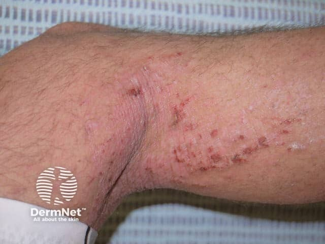 | A03 | Lichenified flexural atopic dermatitis | © DermNet | dermnetnz.org/topics/atopic-dermatitis | Eczema / dermatitis |
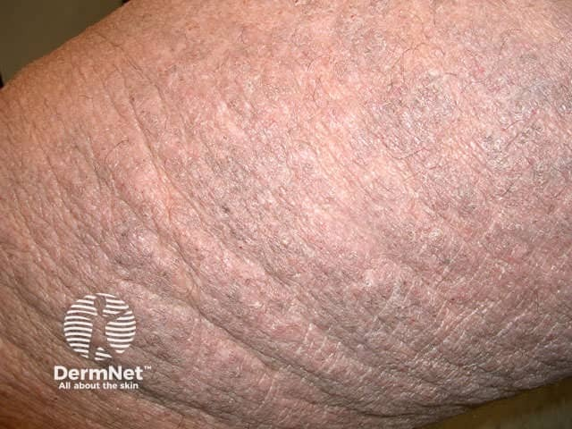 | A04 | Lichenification | © DermNet | dermnetnz.org/topics/atopic-dermatitis | Eczema / dermatitis |
 | A05 | Infantile atopic dermatitis on the cheeks | © DermNet | dermnetnz.org/topics/atopic-dermatitis | Eczema / dermatitis |
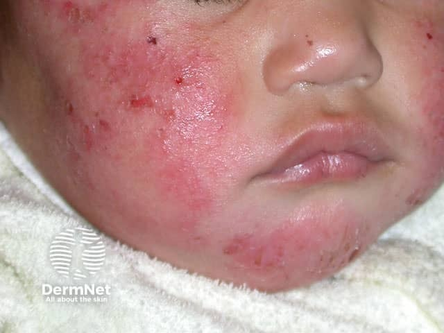 | A06 | Infantile atopic dermatitis, face | © DermNet | dermnetnz.org/topics/atopic-dermatitis | Eczema / dermatitis |
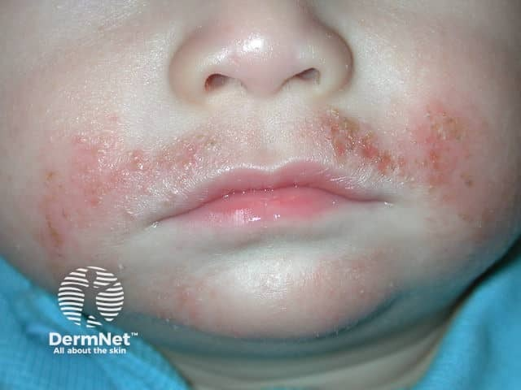 | A07 | Staphylococcal infection of atopic dermatitis | © DermNet | dermnetnz.org/topics/atopic-dermatitis | Eczema / dermatitis |
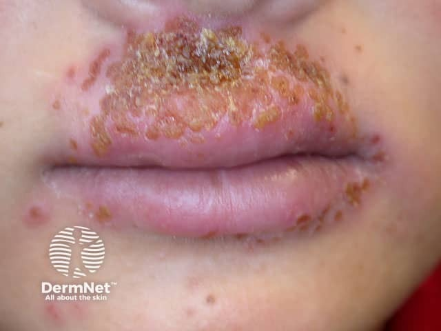 | A08 | Eczema herpeticum | © DermNet | dermnetnz.org/topics/eczema-herpeticum | Eczema / dermatitis, Impetigo |
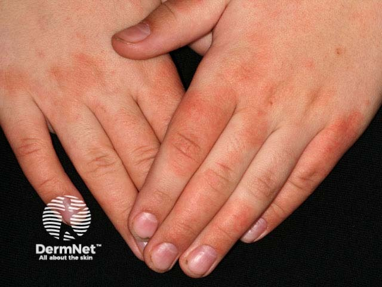 | A09 | Hand dermatitis on the dorsal fingers in an atopic boy | © DermNet | dermnetnz.org/topics/hand-dermatitis | Eczema / dermatitis |
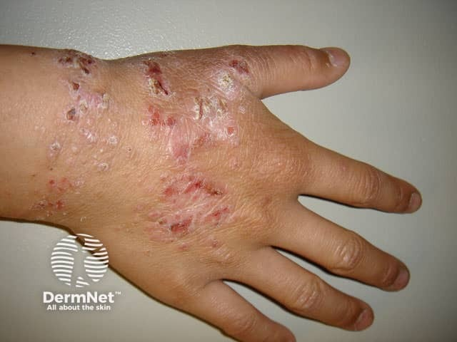 | A10 | Atopic hand dermatitis | © DermNet | dermnetnz.org/topics/atopic-dermatitis | Eczema / dermatitis |
 | A11 | Infected hand dermatitis | © DermNet | dermnetnz.org/topics/hand-dermatitis | Eczema / dermatitis |
 | A12 | Thickening, dryness, and scale on the dorsal fingers | © DermNet | dermnetnz.org/topics/hand-dermatitis | Eczema / dermatitis |
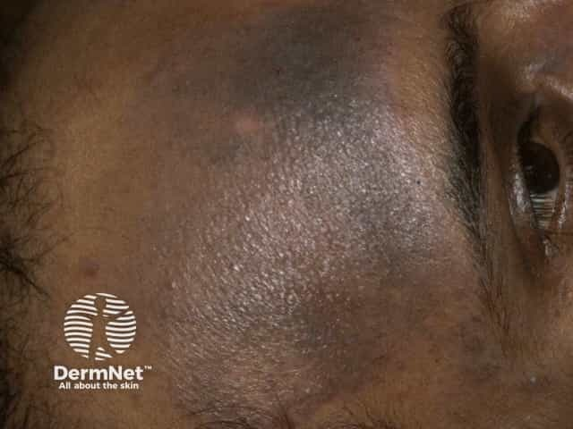 | A13 | Hyperpigmentation due to atopic dermatitis | © Dr Richard Ashton | dermnetnz.org/topics/atopic-dermatitis | Eczema / dermatitis |
 | B01 | Thick silvery scale over the elbow | © DermNet | dermnetnz.org/topics/psoriasis | Psoriasis |
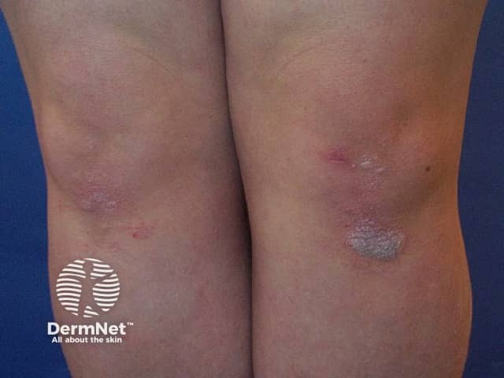 | B02 | Well-defined scaly plaque psoriasis on the knee | © DermNet | dermnetnz.org/topics/chronic-plaque-psoriasis | Psoriasis |
 | B03 | Close up of well demarcated plaques with silvery scale in chronic plaque psoriasis | © DermNet | dermnetnz.org/topics/psoriasis | Psoriasis |
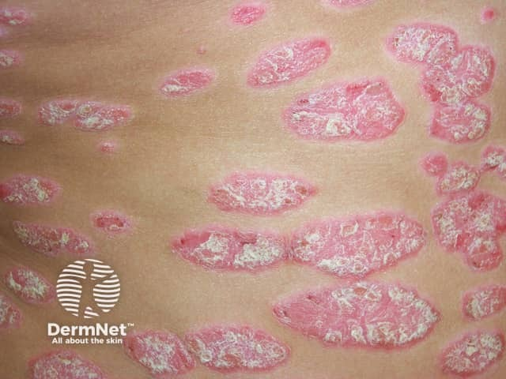 | B04 | Well demarcated plaques with silvery scale in chronic plaque psoriasis | © DermNet | dermnetnz.org/topics/psoriasis | Psoriasis |
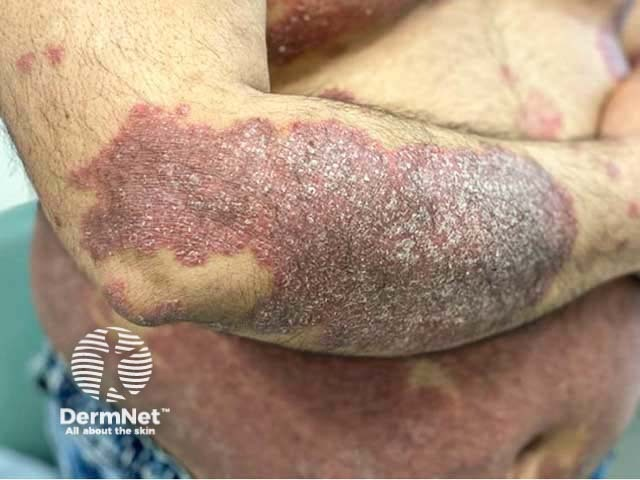 | B05 | Chronic plaque psoriasis in skin of colour | © DermNet | dermnetnz.org/topics/psoriasis | Psoriasis |
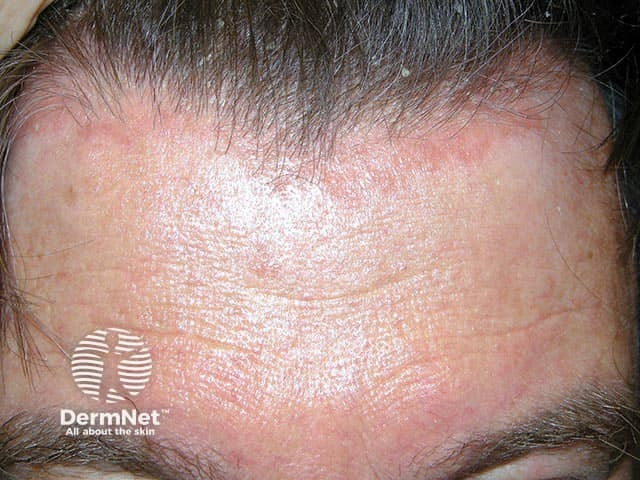 | B06 | Scalp psoriasis extending beyond the anterior hairline | © DermNet | dermnetnz.org/topics/scalp-psoriasis | Psoriasis |
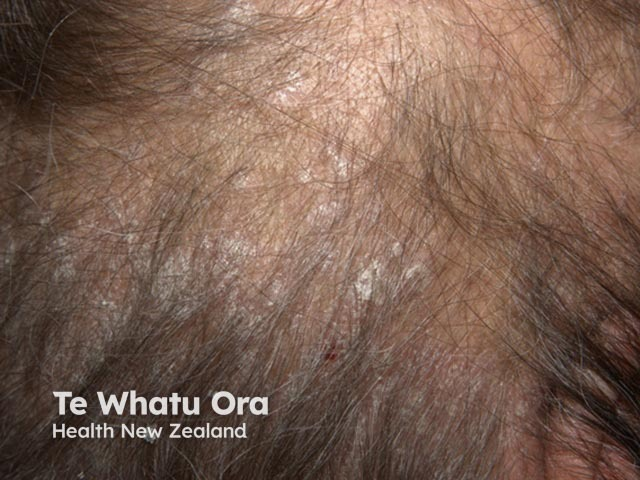 | B07 | Adherent scale in scalp psoriasis | © Te Whatu Ora | dermnetnz.org/topics/psoriasis | Psoriasis |
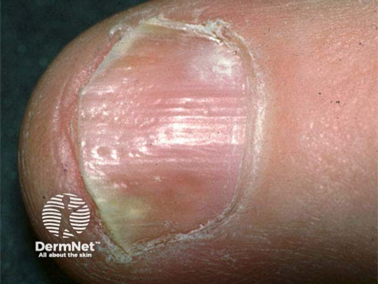 | B08 | Irregular pits and onycholysis of a finger nail - note the yellow band proximal to the onycholysis | © DermNet | dermnetnz.org/topics/psoriasis | Psoriasis |
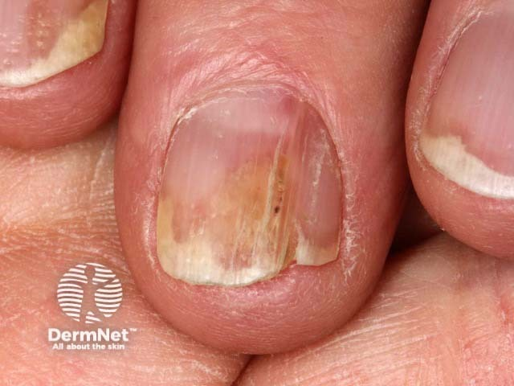 | B09 | Onycholysis, proximal yellow band and nail plate splitting due to nail unit psoriasis | © DermNet | dermnetnz.org/topics/psoriasis | Psoriasis |
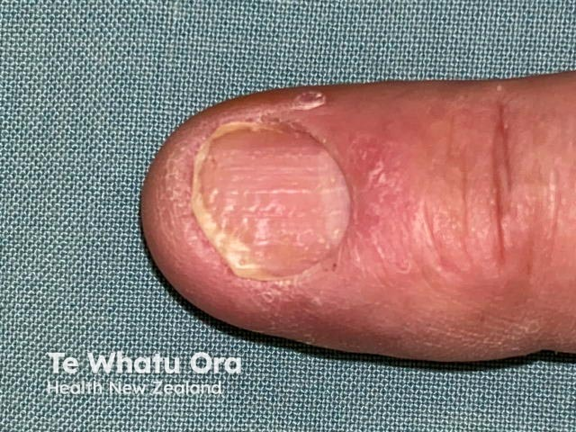 | B10 | Pitting and onychorrhexis | © DermNet | dermnetnz.org/topics/nail-psoriasis | Psoriasis |
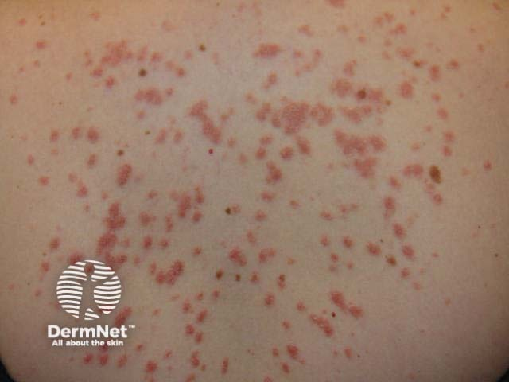 | B11 | Guttate psoriasis | © DermNet | dermnetnz.org/topics/guttate-psoriasis | Psoriasis |
 | B12 | Small plaques of psoriasis appear almost like rain drops splashed over the skin | © DermNet | dermnetnz.org/topics/psoriasis | Psoriasis |
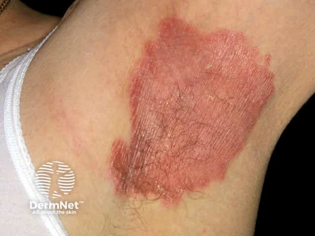 | B13 | Axillary psoriasis | © Raimo Suhonen | dermnetnz.org/topics/psoriasis | Psoriasis |
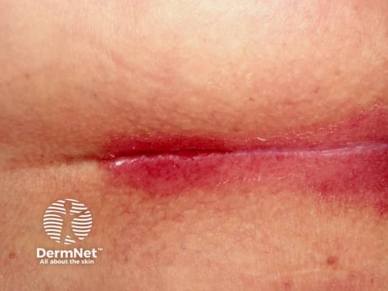 | B14 | Well demarcated salmon pink erythema which extends to the apex of the skin fold and into the natal cleft due to flexural psoriasis | © DermNet | dermnetnz.org/topics/psoriasis | Candidal intertrigo, Psoriasis, Tinea: corporis, cruris & pedis |
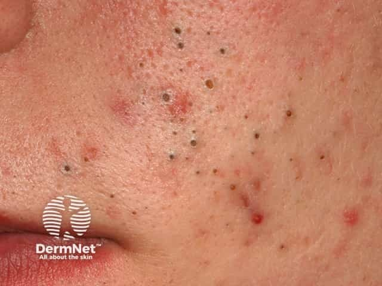 | C01 | Open comedones | © Raimo Suhonen | dermnetnz.org/topics/comedonal-acne | Acne vulgaris |
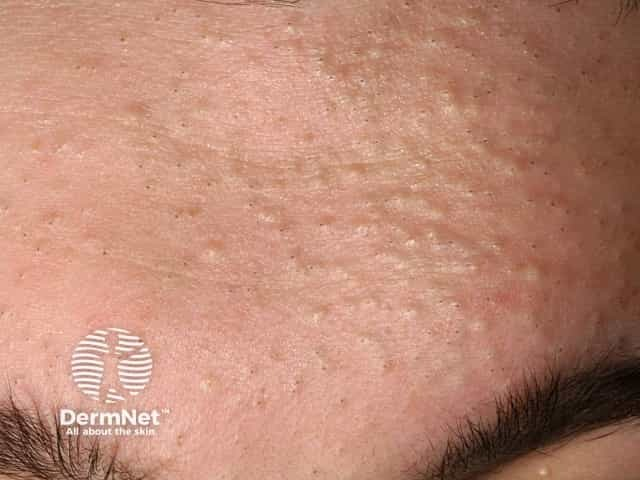 | C02 | Closed comedones | © Raimo Suhonen | dermnetnz.org/topics/comedonal-acne | Acne vulgaris |
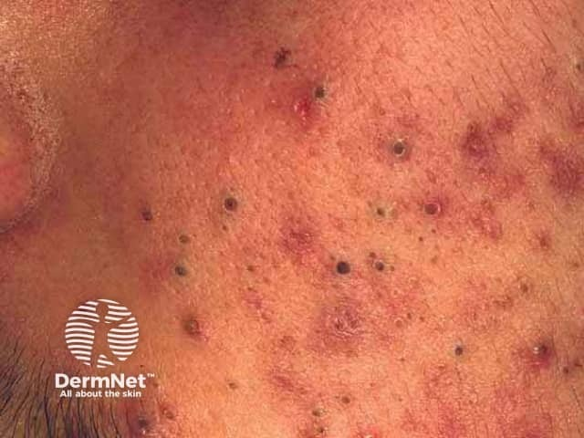 | C03 | Comedonal acne | © DermNet | dermnetnz.org/topics/comedonal-acne | Acne vulgaris |
 | C04 | Mild acne | © Te Whatu Ora | dermnetnz.org/topics/acne-vulgaris | Acne vulgaris |
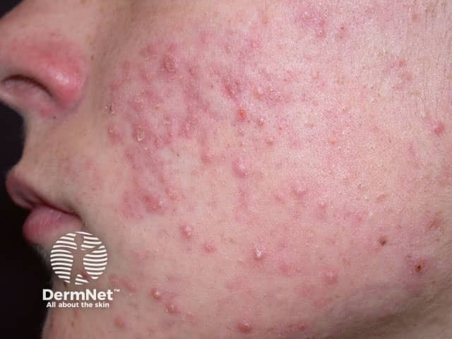 | C05 | Acne vulgaris | © DermNet | dermnetnz.org/topics/acne-vulgaris | Acne vulgaris |
 | C06 | Moderate acne | © DermNet | dermnetnz.org/topics/acne-vulgaris | Acne vulgaris |
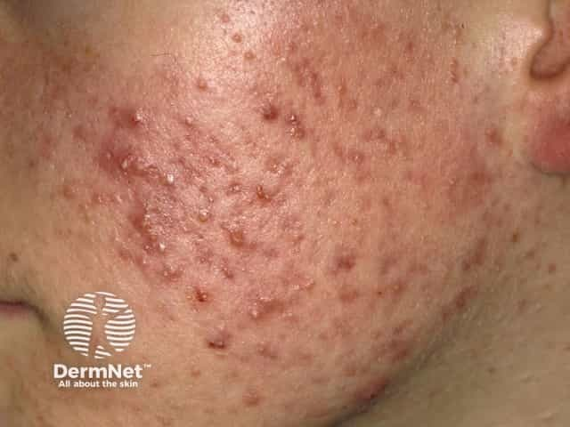 | C07 | Severe acne | © Raimo Suhonen | dermnetnz.org/topics/acne-vulgaris | Acne vulgaris |
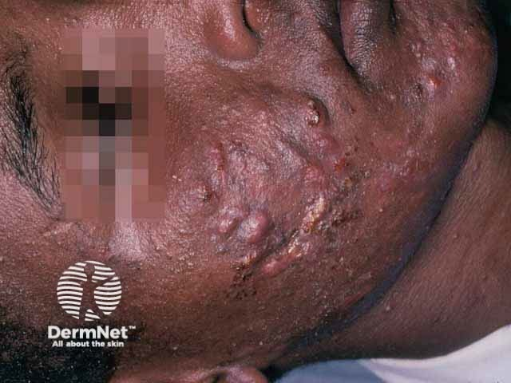 | C08 | Nodulocystic acne: face | © DermNet | dermnetnz.org/topics/nodulocystic-acne | Acne vulgaris |
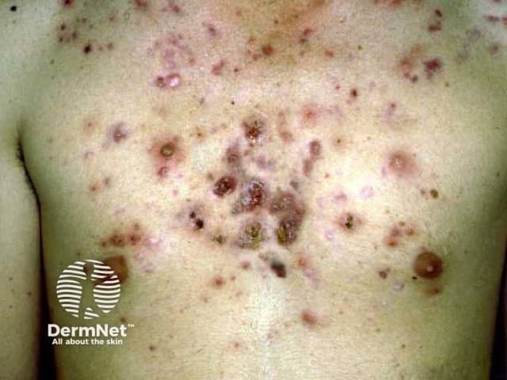 | C09 | Nodulocystic acne | © DermNet | dermnetnz.org/topics/nodulocystic-acne | Acne vulgaris |
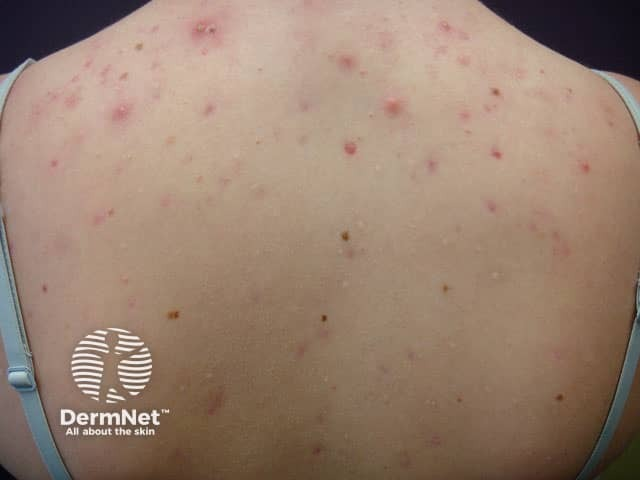 | C10 | Acne vulgaris (back) | © DermNet | dermnetnz.org/topics/acne-vulgaris | Acne vulgaris |
 | C11 | Nodulocystic acne (back) | © DermNet | dermnetnz.org/topics/nodulocystic-acne | Acne vulgaris |
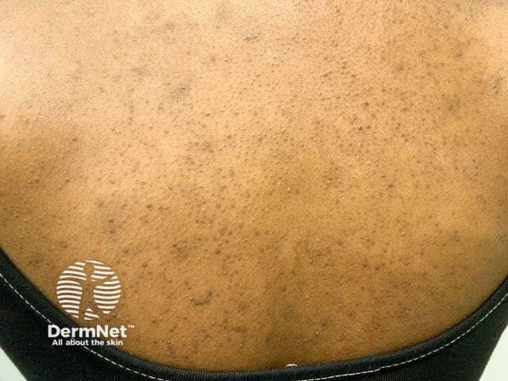 | C12 | Acne with post-inflammatory pigmentation | © DermNet | dermnetnz.org/topics/acne-vulgaris | Acne vulgaris |
 | D01 | Tinea corporis | © DermNet | dermnetnz.org/topics/tinea-corporis-images | Tinea: corporis, cruris & pedis |
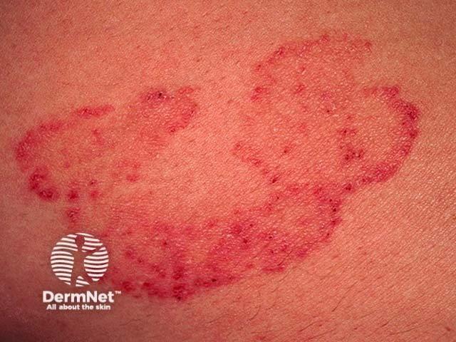 | D02 | Tinea corporis | © DermNet | dermnetnz.org/topics/tinea-corporis-images | Tinea: corporis, cruris & pedis |
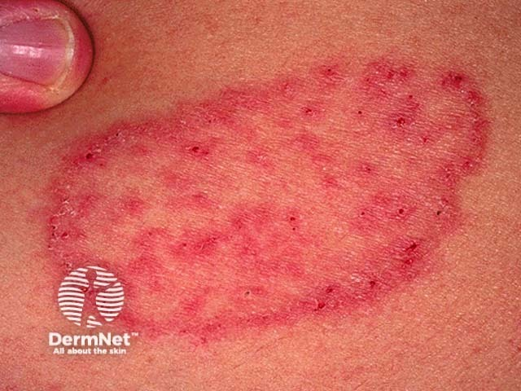 | D03 | Tinea corporis | © DermNet | dermnetnz.org/topics/tinea-corporis-images | Tinea: corporis, cruris & pedis |
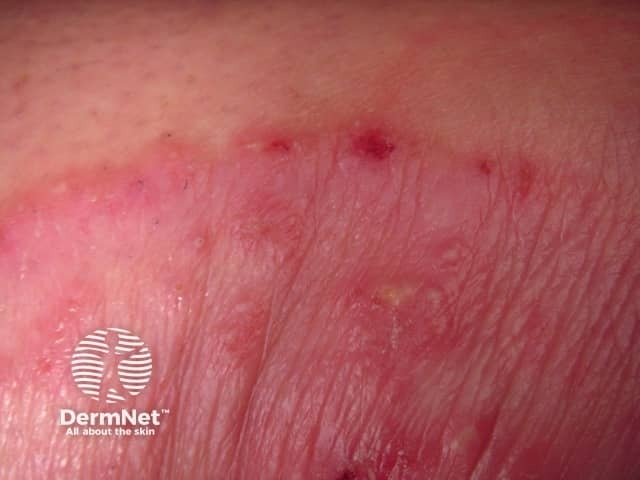 | D04 | Sharp red scaly margin of tinea corporis | © DermNet | dermnetnz.org/topics/tinea-corporis | Tinea: corporis, cruris & pedis |
D05 | Athlete's foot | © DermNet | dermnetnz.org/topics/intertrigo | Cellulitis & erysipelas, Tinea: corporis, cruris & pedis | |
 | D06 | Moccasin tinea pedis | © DermNet | dermnetnz.org/topics/tinea-pedis | Tinea: corporis, cruris & pedis |
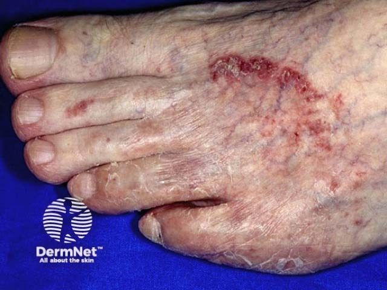 | D07 | Tinea pedis | © DermNet | dermnetnz.org/topics/tinea-pedis | Tinea: corporis, cruris & pedis |
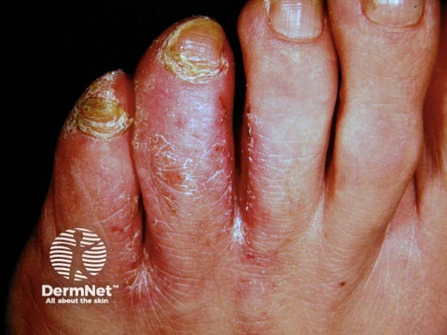 | D08 | Tinea pedis | © DermNet | dermnetnz.org/topics/tinea-pedis | Tinea: corporis, cruris & pedis |
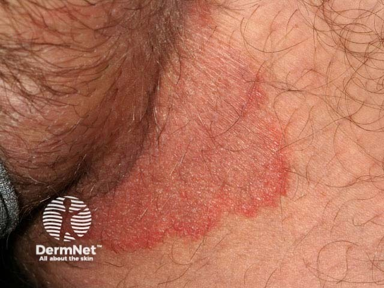 | D09 | Well-defined plaque | © DermNet | dermnetnz.org/topics/tinea-cruris | Tinea: corporis, cruris & pedis |
 | D10 | Raised border and central clearing | © DermNet | dermnetnz.org/topics/tinea-cruris | Tinea: corporis, cruris & pedis |
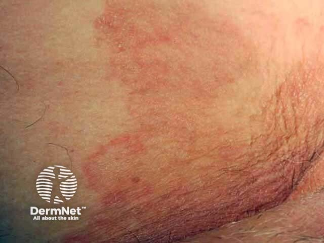 | D11 | Raised border, central clearing | © DermNet | dermnetnz.org/topics/tinea-cruris | Candidal intertrigo, Psoriasis, Tinea: corporis, cruris & pedis |
 | D12 | Pityriasis versicolor | © DermNet | dermnetnz.org/topics/pityriasis-versicolor | Pityriasis versicolor, Progressive macular hypomelanosis (PMH) |
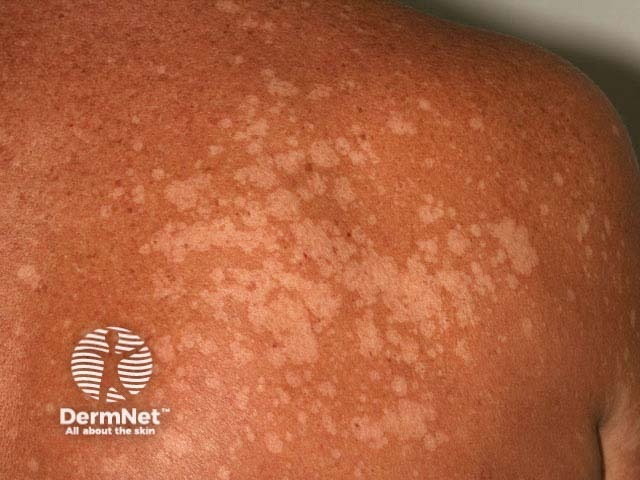 | D13 | Pityriasis versicolor | © DermNet | dermnetnz.org/topics/pityriasis-versicolor | Pityriasis versicolor |
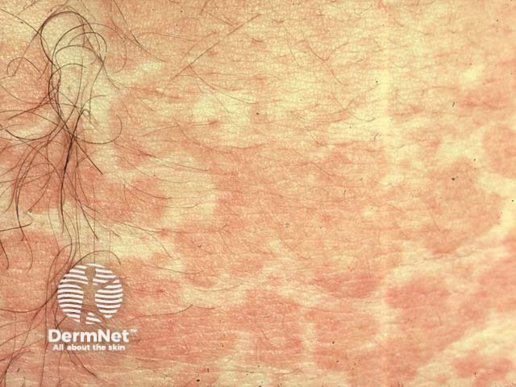 | D14 | Pityriasis versicolor | © DermNet | dermnetnz.org/topics/pityriasis-versicolor | Pityriasis versicolor, Progressive macular hypomelanosis (PMH) |
 | D15 | Intertrigo due to candida infection | © Te Whatu Ora | dermnetnz.org/topics/intertrigo | Candidal intertrigo, Psoriasis, Tinea: corporis, cruris & pedis |
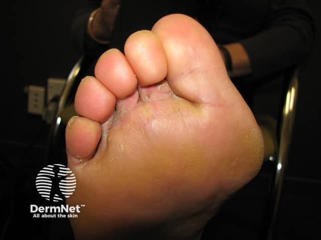 | D16 | Candida intertrigo | © DermNet | dermnetnz.org/images/candida-intertrigo-images | Candidal intertrigo |
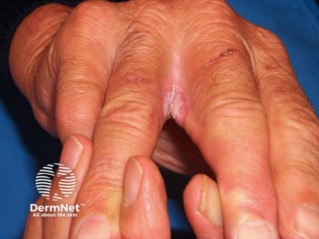 | D17 | Candida intertrigo | © DermNet | dermnetnz.org/images/candida-intertrigo-images | Candidal intertrigo |
 | E01 | Perioral honey-coloured crusts in impetigo | © DermNet | dermnetnz.org/topics/impetigo | Impetigo |
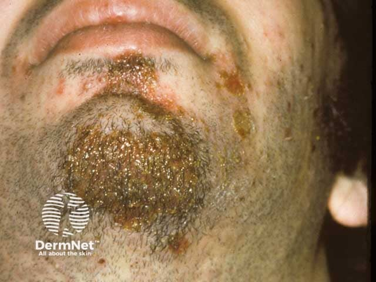 | E02 | Honey-coloured crusts on the chin in impetigo | © DermNet | dermnetnz.org/topics/impetigo | Impetigo |
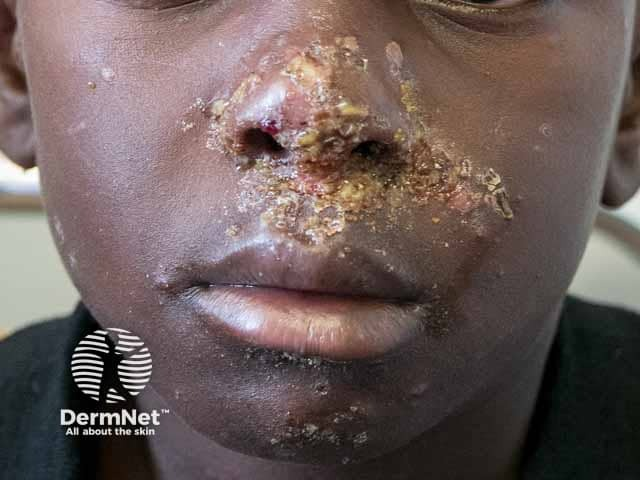 | E03 | Honey-coloured crusted lesions in facial impetigo | © DermNet | dermnetnz.org/topics/impetigo | Impetigo |
 | E04 | An intact blister and erosions in bullous impetigo | © DermNet | dermnetnz.org/topics/impetigo | Impetigo |
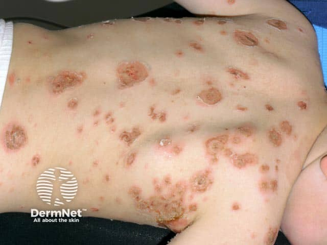 | E05 | Widespread bullous impetigo over the back | © DermNet | dermnetnz.org/topics/impetigo | Impetigo |
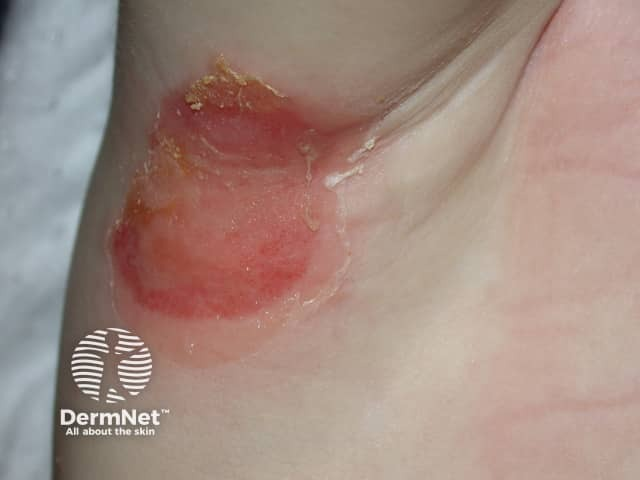 | E06 | Bullous impetigo | © DermNet | dermnetnz.org/topics/intertrigo | Impetigo |
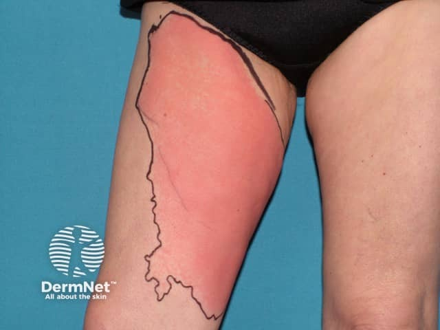 | E07 | Cellulitis | © DermNet | dermnetnz.org/topics/cellulitis | Cellulitis & erysipelas, Red leg: differentials & referral |
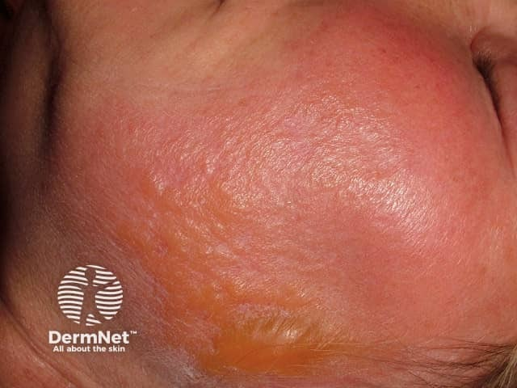 | E08 | Erysipelas | © DermNet | dermnetnz.org/topics/erysipelas | Cellulitis & erysipelas |
 | E09 | Erysipelas | © DermNet | dermnetnz.org/topics/erysipelas | Cellulitis & erysipelas |
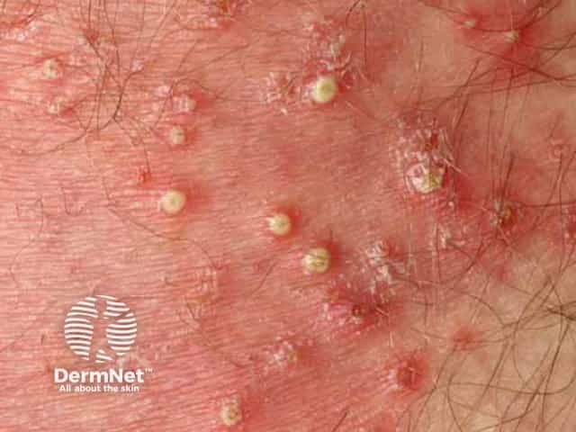 | E10 | Superficial bacterial folliculitis | © Raimo Suhonen | dermnetnz.org/topics/folliculitis | Folliculitis |
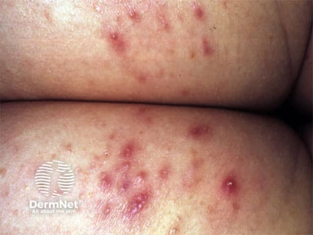 | E11 | Folliculitis | © DermNet | dermnetnz.org/topics/folliculitis | Folliculitis |
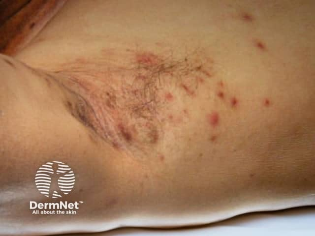 | E12 | Folliculitis in axilla | © DermNet | dermnetnz.org/topics/intertrigo | Folliculitis |
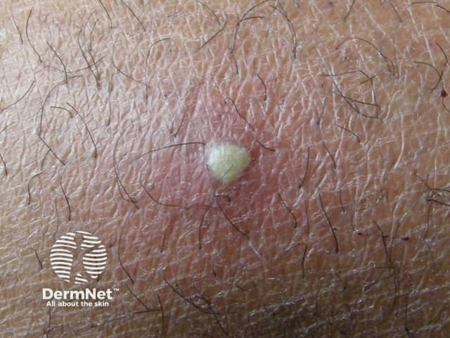 | E13 | Boil | © DermNet | dermnetnz.org/topics/boil | Boils & carbuncles |
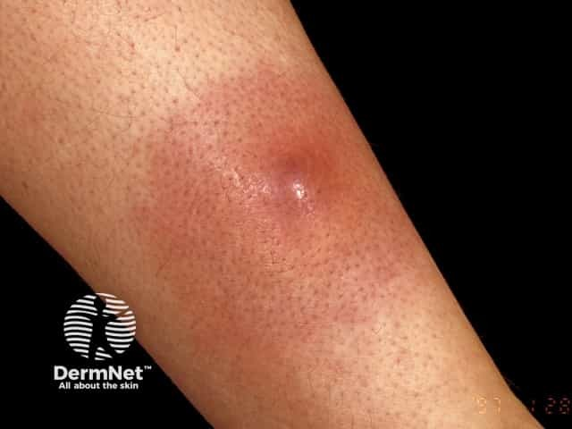 | E14 | Surrounding cellulitis | © Raimo Suhonen | dermnetnz.org/topics/boil | Boils & carbuncles |
E15 | Boil in axilla | © DermNet | dermnetnz.org/topics/boil | Boils & carbuncles | |
E16 | Carbuncle | © DermNet | dermnetnz.org/topics/boil | Boils & carbuncles |
Module 5 · Week 1 — skin infections 14 images · assets/img/m5w1
| Image | Code | Caption | © | Source page | Used on |
|---|---|---|---|---|---|
m5w1:L01 | Common wart | © DermNet | dermnetnz.org/topics/viral-wart | Viral warts (HPV) | |
m5w1:L02 | Plantar wart | © DermNet | dermnetnz.org/topics/viral-wart | Viral warts (HPV) | |
m5w1:L03 | Plane warts | © DermNet | dermnetnz.org/topics/viral-wart | Viral warts (HPV) | |
m5w1:L04 | Filiform wart | © DermNet | dermnetnz.org/topics/viral-wart | Viral warts (HPV) | |
m5w1:L05 | Periungual / subungual wart | © DermNet | dermnetnz.org/topics/viral-wart | Viral warts (HPV) | |
m5w1:M01 | Progressive macular hypomelanosis | © DermNet | dermnetnz.org/topics/progressive-macular-hypomelanosis | Progressive macular hypomelanosis (PMH) | |
m5w1:M02 | Progressive macular hypomelanosis — back | © DermNet | dermnetnz.org/topics/progressive-macular-hypomelanosis | Progressive macular hypomelanosis (PMH) | |
 | m5w1:N01 | Facial impetigo | © DermNet | dermnetnz.org/topics/impetigo | Impetigo |
m5w1:N02 | Impetigo honey crust | © DermNet | dermnetnz.org/topics/impetigo | Impetigo | |
 | m5w1:N03 | Bullous impetigo | © DermNet | dermnetnz.org/topics/impetigo | Impetigo |
m5w1:O01 | Tinea cruris groin | © DermNet | dermnetnz.org/topics/tinea-cruris | Tinea: corporis, cruris & pedis | |
m5w1:O02 | Tinea cruris raised border | © DermNet | dermnetnz.org/topics/tinea-cruris | Tinea: corporis, cruris & pedis | |
m5w1:O03 | Candidal intertrigo with satellites | © DermNet | dermnetnz.org/topics/intertrigo | Candidal intertrigo | |
m5w1:O04 | Intertrigo in skin fold | © DermNet | dermnetnz.org/topics/intertrigo | Candidal intertrigo |
Module 5 · Week 2 — cellulitis & ulcers 19 images · assets/img/m5w2
| Image | Code | Caption | © | Source page | Used on |
|---|---|---|---|---|---|
m5w2:P01 | Venous leg ulcer — medial gaiter | © DermNet | dermnetnz.org/topics/stasis-ulcer | Venous leg ulcer | |
m5w2:P02 | Venous leg ulcer — gaiter | © DermNet | dermnetnz.org/topics/stasis-ulcer | Venous leg ulcer | |
m5w2:P03 | Venous stasis / lipodermatosclerosis changes | © DermNet | dermnetnz.org/topics/stasis-ulcer | Red leg: differentials & referral, Venous leg ulcer | |
m5w2:P04 | Venous leg ulcer shallow sloping | © DermNet | dermnetnz.org/topics/stasis-ulcer | Venous leg ulcer | |
m5w2:Q01 | Cellulitis of the leg | © DermNet | dermnetnz.org/topics/cellulitis | Cellulitis & erysipelas, Red leg: differentials & referral | |
m5w2:Q02 | Cellulitis peau d'orange | © DermNet | dermnetnz.org/topics/cellulitis | Cellulitis & erysipelas | |
 | m5w2:Q03 | Bullous cellulitis | © DermNet | dermnetnz.org/topics/cellulitis | Cellulitis & erysipelas |
m5w2:Q04 | Facial erysipelas | © DermNet | dermnetnz.org/topics/erysipelas | Cellulitis & erysipelas | |
 | m5w2:Q05 | Erysipelas involving ear (Milian context) | © DermNet | dermnetnz.org/topics/erysipelas | Cellulitis & erysipelas |
m5w2:Q06 | Erysipelas of the leg | © DermNet | dermnetnz.org/topics/erysipelas | Cellulitis & erysipelas | |
m5w2:R01 | Pyoderma gangrenosum violaceous border | © DermNet | dermnetnz.org/topics/pyoderma-gangrenosum | Pyoderma gangrenosum | |
m5w2:R02 | Pyoderma gangrenosum leg ulcer | © DermNet | dermnetnz.org/topics/pyoderma-gangrenosum | Pyoderma gangrenosum | |
m5w2:R03 | Early / pathergic pyoderma gangrenosum | © DermNet | dermnetnz.org/topics/pyoderma-gangrenosum | Pyoderma gangrenosum | |
m5w2:R04 | Multiple pyoderma gangrenosum ulcers | © DermNet | dermnetnz.org/topics/pyoderma-gangrenosum | Pyoderma gangrenosum | |
m5w2:S01 | Leg ulcer (diabetic/ischaemic example from DermNet leg-ulcer page) | © DermNet | dermnetnz.org/topics/leg-ulcer | Arterial & neuropathic ulcers | |
m5w2:S02 | Diabetic ulcer | © DermNet | dermnetnz.org/topics/leg-ulcer | Arterial & neuropathic ulcers | |
m5w2:S03 | Diabetic foot ulcer plantar | © DermNet | dermnetnz.org/topics/diabetic-foot-ulcer | Arterial & neuropathic ulcers | |
m5w2:S04 | Diabetic foot ulcer pressure site | © DermNet | dermnetnz.org/topics/diabetic-foot-ulcer | Arterial & neuropathic ulcers | |
m5w2:S05 | Neuropathic ulcer | © DermNet | dermnetnz.org/topics/leg-ulcer | Arterial & neuropathic ulcers |
Module 5 · Week 3 — infestations & bites 41 images · assets/img/m5w3
| Image | Code | Caption | © | Source page | Used on |
|---|---|---|---|---|---|
m5w3:T01 | A burrow on the palm - the mite can just be seen adjacent to the vesicle | © DermNet | dermnetnz.org/topics/scabies | Scabies | |
m5w3:T02 | Interdigital scaling in the first web space of the hand | © DermNet | dermnetnz.org/topics/scabies | Scabies | |
m5w3:T03 | Papular lesions in the 4th interdigital space on the hand | © DermNet | dermnetnz.org/topics/scabies-images | Scabies | |
m5w3:T04 | Scabies burrows on the palm | © DermNet | dermnetnz.org/topics/scabies | Scabies | |
m5w3:T05 | A dark scabies mite at the end of a burrow on dermoscopy | © DermNet | dermnetnz.org/topics/scabies-images | Scabies | |
m5w3:T06 | Groin and abdominal papules and pustules in scabies | © DermNet | dermnetnz.org/topics/scabies-images | Scabies | |
m5w3:T07 | Erythematous papules on the penis in scabies | © DermNet | dermnetnz.org/topics/scabies-images | Scabies | |
m5w3:T08 | Scabies nodules in the axilla | © DermNet | dermnetnz.org/topics/scabies | Scabies | |
m5w3:T09 | Scabies burrows on a babies foot | © DermNet | dermnetnz.org/topics/scabies | Scabies | |
m5w3:T10 | Scabies with superadded streptococcal infection | © DermNet | dermnetnz.org/topics/scabies | Scabies | |
m5w3:T11 | Thick crusted plaques on the thumb and palm due to crusted scabies in an elderly woman | © DermNet | dermnetnz.org/topics/scabies | Scabies | |
m5w3:T12 | Hyperkeratosis and fissuring on the feet in advanced crusted scabies | © DermNet | dermnetnz.org/topics/crusted-scabies | Scabies | |
m5w3:U01 | Louse | © DermNet | dermnetnz.org/topics/head-lice | Head lice (pediculosis capitis) | |
m5w3:U02 | Louse | © DermNet | dermnetnz.org/topics/head-lice | Head lice (pediculosis capitis) | |
m5w3:U03 | Head lice eggs | © DermNet | dermnetnz.org/topics/head-lice | Head lice (pediculosis capitis) | |
m5w3:U04 | Nits and dermatitis | © DermNet | dermnetnz.org/topics/head-lice | Head lice (pediculosis capitis) | |
m5w3:U05 | Nits and bites | © DermNet | dermnetnz.org/topics/head-lice | Head lice (pediculosis capitis) | |
m5w3:V01 | Ixodes tick | © DermNet | dermnetnz.org/topics/lyme-disease | Lyme disease & erythema migrans | |
m5w3:V02 | Erythema chronicum migrans | © DermNet | dermnetnz.org/topics/lyme-disease | Lyme disease & erythema migrans | |
m5w3:V03 | Erythema chronicum migrans | © DermNet | dermnetnz.org/topics/lyme-disease | Lyme disease & erythema migrans | |
m5w3:V04 | Erythema chronicum migrans | © DermNet | dermnetnz.org/topics/erythema-migrans-images | Lyme disease & erythema migrans | |
m5w3:V05 | Erythema chronicum migrans | © DermNet | dermnetnz.org/topics/erythema-migrans-images | Lyme disease & erythema migrans | |
m5w3:V06 | Inflammatory stage | © DermNet | dermnetnz.org/topics/acrodermatitis-chronica-atrophicans | Lyme disease & erythema migrans | |
m5w3:V07 | Inflammatory stage | © DermNet | dermnetnz.org/topics/acrodermatitis-chronica-atrophicans | Lyme disease & erythema migrans | |
m5w3:V08 | Atrophic stage | © DermNet | dermnetnz.org/topics/acrodermatitis-chronica-atrophicans | Lyme disease & erythema migrans | |
 | m5w3:W01 | Cantharidin | © DermNet | dermnetnz.org/topics/cantharidin | Blister beetle & Paederus dermatitis |
m5w3:W02 | Cantharidin | © DermNet | dermnetnz.org/topics/cantharidin | Blister beetle & Paederus dermatitis | |
m5w3:W03 | Kissing paederus dermatitis | © DermNet | dermnetnz.org/topics/paederus-dermatitis | Blister beetle & Paederus dermatitis | |
m5w3:W04 | Paedarus littoralis | © DermNet | dermnetnz.org/topics/paederus-dermatitis | Blister beetle & Paederus dermatitis | |
m5w3:W05 | Lytta vesicatoria | Stefanie Hamm | commons.wikimedia.org/wiki/File:Lytta-vesicatoria03.jpg | Blister beetle & Paederus dermatitis | |
m5w3:W06 | Mylabris oleae (Meloidae) | Hectonichus | commons.wikimedia.org/wiki/File:Meloidae_-_Mylabris_oleae.JPG | Blister beetle & Paederus dermatitis | |
 | m5w3:X01 | Papular urticaria | © DermNet | dermnetnz.org/topics/papular-urticaria | Papular urticaria & insect bites |
m5w3:X02 | Papular urticaria | © DermNet | dermnetnz.org/topics/papular-urticaria | Papular urticaria & insect bites | |
m5w3:X03 | Papular urticaria | © DermNet | dermnetnz.org/topics/papular-urticaria | Papular urticaria & insect bites | |
m5w3:X04 | Papular urticaria | © DermNet | dermnetnz.org/topics/papular-urticaria | Papular urticaria & insect bites | |
m5w3:X05 | Flea bites | © DermNet | dermnetnz.org/topics/flea-bite | Papular urticaria & insect bites | |
m5w3:X06 | Flea bites | © DermNet | dermnetnz.org/topics/flea-bite | Papular urticaria & insect bites | |
m5w3:X07 | Bed bug bite on the calf - note the central punctum | © DermNet | dermnetnz.org/topics/bed-bugs | Papular urticaria & insect bites | |
m5w3:X08 | Bed bug bites on the calf | © DermNet | dermnetnz.org/topics/bed-bugs | Papular urticaria & insect bites | |
m5w3:X09 | Fed adult | © DermNet | dermnetnz.org/topics/bed-bugs | Papular urticaria & insect bites | |
m5w3:X10 | Bullous insect bite | © DermNet | dermnetnz.org/topics/arthropod-bites-and-stings | Papular urticaria & insect bites |
Module 6 · Week 1 — infant & neonatal 39 images · assets/img/m6w1
| Image | Code | Caption | © | Source page | Used on |
|---|---|---|---|---|---|
m6w1:F01 | Toxic erythema of the newborn | © DermNet | dermnetnz.org/topics/toxic-erythema-of-the-newborn | Neonatal pustular rashes | |
 | m6w1:F02 | Toxic erythema of the newborn | © DermNet | dermnetnz.org/topics/toxic-erythema-of-the-newborn | Neonatal pustular rashes |
m6w1:F03 | Toxic erythema of the newborn | © DermNet | dermnetnz.org/topics/skin-conditions-in-newborn-babies | Neonatal pustular rashes | |
m6w1:F04 | Neonatal pustular melanosis | © DermNet | dermnetnz.org/topics/transient-neonatal-pustular-melanosis | Neonatal pustular rashes | |
m6w1:F05 | Neonatal pustular melanosis | © DermNet | dermnetnz.org/topics/transient-neonatal-pustular-melanosis | Neonatal pustular rashes | |
m6w1:F06 | Transient neonatal pustular melanosis | © DermNet | dermnetnz.org/topics/transient-neonatal-pustular-melanosis | Neonatal pustular rashes | |
m6w1:F07 | Miliaria | © DermNet | dermnetnz.org/topics/miliaria | Neonatal pustular rashes | |
m6w1:F08 | Miliaria | © DermNet | dermnetnz.org/topics/miliaria | Neonatal pustular rashes | |
m6w1:F09 | Neonatal cephalic pustulosis | © DermNet | dermnetnz.org/topics/neonatal-cephalic-pustulosis | Neonatal & infantile acne | |
m6w1:F10 | Infantile acne | © DermNet | dermnetnz.org/topics/infantile-acne | Neonatal & infantile acne | |
m6w1:F11 | Napkin dermatitis | © DermNet | dermnetnz.org/topics/napkin-dermatitis | Napkin (nappy) dermatitis | |
m6w1:F12 | Napkin dermatitis thrush | © DermNet | dermnetnz.org/topics/napkin-dermatitis | Napkin (nappy) dermatitis | |
m6w1:F13 | Napkin dermatitis | © DermNet | dermnetnz.org/topics/napkin-dermatitis | Napkin (nappy) dermatitis | |
m6w1:F14 | Infantile atopic dermatitis on the cheeks | © DermNet | dermnetnz.org/topics/atopic-dermatitis | Napkin (nappy) dermatitis | |
 | m6w1:F15 | Infantile atopic dermatitis, face | © DermNet | dermnetnz.org/topics/atopic-dermatitis | Napkin (nappy) dermatitis |
m6w1:F16 | Herpes simplex | © DermNet | dermnetnz.org/topics/blisters-and-pustules-in-neonates | Neonatal pustular rashes | |
m6w1:G01 | Infantile haemangioma, face | © DermNet | dermnetnz.org/topics/infantile-haemangioma | Infantile haemangioma & port-wine stain | |
m6w1:G02 | Regressing infantile haemangioma, scalp | © DermNet | dermnetnz.org/topics/infantile-haemangioma | Infantile haemangioma & port-wine stain | |
m6w1:G03 | Infantile haemangioma, buttock | © DermNet | dermnetnz.org/topics/infantile-haemangioma | Infantile haemangioma & port-wine stain | |
m6w1:G04 | Preauricular infantile haemangioma | © DermNet | dermnetnz.org/topics/infantile-haemangioma-complications-and-treatment | Infantile haemangioma & port-wine stain | |
m6w1:G05 | Naevus of Ota | © DermNet | dermnetnz.org/topics/naevus-of-ota-ito-hori | Pigmented & epidermal birthmarks | |
m6w1:G06 | Naevus of Ota | © DermNet | dermnetnz.org/topics/naevus-of-ota-ito-hori | Pigmented & epidermal birthmarks | |
m6w1:G07 | Achromic naevus | © DermNet | dermnetnz.org/topics/achromic-naevus | Pigmented & epidermal birthmarks | |
m6w1:G08 | A unilateral depigmented lesion on the arm - the child was otherwise well | © DermNet | dermnetnz.org/topics/achromic-naevus | Pigmented & epidermal birthmarks | |
m6w1:G09 | Naevus anaemicus | © DermNet | dermnetnz.org/topics/naevus-anaemicus | Pigmented & epidermal birthmarks | |
m6w1:G10 | Hyperpigmentation and hypertrichosis over the chest in Becker naevus | © DermNet | dermnetnz.org/topics/becker-naevus | Pigmented & epidermal birthmarks | |
m6w1:G11 | Pigmentation and hypertrichosis in Becker naevus | © Dr Richard Ashton | dermnetnz.org/topics/becker-naevus | Pigmented & epidermal birthmarks | |
m6w1:G12 | Lumbosacral dermal melanocytosis. Mongolian spot | © DermNet | dermnetnz.org/topics/lumbosacral-dermal-melanocytosis | Pigmented & epidermal birthmarks | |
m6w1:G13 | Mongolian spot — lumbosacral dermal melanocytosis | © DermNet | dermnetnz.org/topics/lumbosacral-dermal-melanocytosis | Pigmented & epidermal birthmarks | |
m6w1:G14 | Epidermal naevus | © DermNet | dermnetnz.org/topics/epidermal-naevi | Pigmented & epidermal birthmarks | |
m6w1:G15 | Epidermal naevus | © DermNet | dermnetnz.org/topics/epidermal-naevi | Pigmented & epidermal birthmarks | |
m6w1:G16 | Port-wine stain | © DermNet | dermnetnz.org/topics/capillary-vascular-malformation | Infantile haemangioma & port-wine stain | |
m6w1:G17 | Port-wine stain | © Te Whatu Ora | dermnetnz.org/topics/capillary-vascular-malformation | Infantile haemangioma & port-wine stain | |
m6w1:H01 | Epidermolysis bullosa | © DermNet | dermnetnz.org/topics/blisters-and-pustules-in-neonates | Epidermolysis bullosa (EB) | |
m6w1:H02 | Epidermolysis bullosa | © DermNet | dermnetnz.org/topics/epidermolysis-bullosa | Epidermolysis bullosa (EB) | |
m6w1:H03 | Epidermolysis bullosa | © DermNet | dermnetnz.org/topics/epidermolysis-bullosa | Epidermolysis bullosa (EB) | |
m6w1:H04 | Recessive dystrophic epidermolysis bullosa | © DermNet | dermnetnz.org/topics/dystrophic-epidermolysis-bullosa | Epidermolysis bullosa (EB) | |
m6w1:H05 | Aplasia cutis | © DermNet | dermnetnz.org/topics/aplasia-cutis | Aplasia cutis congenita | |
m6w1:H06 | Aplasia cutis | © DermNet | dermnetnz.org/topics/aplasia-cutis | Aplasia cutis congenita |
Module 6 · Week 2 — acne & mimics 40 images · assets/img/m6w2
| Image | Code | Caption | © | Source page | Used on |
|---|---|---|---|---|---|
 | m6w2:I01 | Acne vulgaris | © DermNet | dermnetnz.org/topics/acne-vulgaris | — |
m6w2:I02 | Comedonal acne | © DermNet | dermnetnz.org/topics/comedones | — | |
m6w2:I03 | Open comedones | © DermNet | dermnetnz.org/topics/comedones | — | |
m6w2:I04 | Closed comedones | © Te Whatu Ora | dermnetnz.org/topics/comedones | — | |
m6w2:I05 | Mild acne | © Te Whatu Ora | dermnetnz.org/topics/acne-vulgaris | — | |
m6w2:I06 | Moderate acne | © DermNet | dermnetnz.org/topics/acne-vulgaris | — | |
 | m6w2:I07 | Severe acne | © Raimo Suhonen | dermnetnz.org/topics/acne-vulgaris | — |
 | m6w2:I08 | Nodulocystic acne: face | © DermNet | dermnetnz.org/topics/nodulocystic-acne | — |
m6w2:I09 | Nodulocystic acne | © DermNet | dermnetnz.org/topics/nodulocystic-acne | — | |
m6w2:I10 | Nodulocystic acne: chest | © DermNet | dermnetnz.org/topics/nodulocystic-acne | — | |
m6w2:I11 | Acne fulminans | © DermNet | dermnetnz.org/topics/acne-fulminans | Acne vulgaris | |
m6w2:I12 | Acne fulminans | © Te Whatu Ora | dermnetnz.org/topics/acne-fulminans | Acne vulgaris | |
m6w2:I13 | Acne fulminans | © DermNet | dermnetnz.org/topics/sapho-syndrome | Acne vulgaris | |
m6w2:I14 | Cheilitis | © DermNet | dermnetnz.org/topics/isotretinoin | Acne vulgaris | |
m6w2:I15 | Acne flare | © DermNet | dermnetnz.org/topics/isotretinoin | Acne vulgaris | |
 | m6w2:I16 | Ice pick scarring on the cheeks | © Dr Richard Ashton | dermnetnz.org/topics/acne-scarring | Acne vulgaris |
m6w2:I17 | Post inflammatory pigmentation after facial acne in skin of colour | © DermNet | dermnetnz.org/topics/acne-scarring | Acne vulgaris | |
 | m6w2:I18 | True keloids on the shoulders post acne in skin of colour | © DermNet | dermnetnz.org/topics/acne-scarring | Acne vulgaris |
m6w2:I19 | Adult acne | © DermNet | dermnetnz.org/topics/adult-acne | Acne vulgaris | |
m6w2:I20 | Polycystic ovarian syndrome | © DermNet | dermnetnz.org/topics/polycystic-ovary-syndrome | Acne vulgaris | |
m6w2:I21 | Hirsutism | © DermNet | dermnetnz.org/topics/polycystic-ovary-syndrome | Acne vulgaris | |
m6w2:I22 | Acne in pregnancy | © DermNet | dermnetnz.org/topics/acne-in-pregnancy | Acne vulgaris | |
m6w2:J01 | Acanthosis nigricans on the neck | © Te Whatu Ora | dermnetnz.org/topics/acanthosis-nigricans | Acanthosis nigricans | |
m6w2:J02 | Axillary acanthosis nigricans | © DermNet | dermnetnz.org/topics/acanthosis-nigricans | Acanthosis nigricans | |
m6w2:J03 | Acanthosis nigricans | © DermNet | dermnetnz.org/topics/acanthosis-nigricans | Acanthosis nigricans | |
m6w2:K01 | Papulopustular rosacea on the cheeks | © DermNet | dermnetnz.org/topics/rosacea | Acne mimics: rosacea, perioral & folliculitis | |
m6w2:K02 | Erythematotelangiectatic and papulopustular rosacea on the cheeks | © DermNet | dermnetnz.org/topics/rosacea | Acne mimics: rosacea, perioral & folliculitis | |
m6w2:K03 | Rhinophyma | © DermNet | dermnetnz.org/topics/rosacea | Acne mimics: rosacea, perioral & folliculitis | |
m6w2:K04 | Papulopustular and ocular rosacea | © DermNet | dermnetnz.org/topics/rosacea | Acne mimics: rosacea, perioral & folliculitis | |
m6w2:K05 | Pyoderma faciale, rosacea fulminans | © DermNet | dermnetnz.org/topics/pyoderma-faciale | Acne mimics: rosacea, perioral & folliculitis | |
m6w2:K06 | Pyoderma faciale, rosacea fulminans | © DermNet | dermnetnz.org/topics/pyoderma-faciale | Acne mimics: rosacea, perioral & folliculitis | |
m6w2:K07 | Steroid-induced acne vulgaris | © DermNet | dermnetnz.org/topics/steroid-acne | Acne mimics: rosacea, perioral & folliculitis | |
m6w2:K08 | Steroid induced papulopustular rosacea | © DermNet | dermnetnz.org/topics/rosacea | Acne mimics: rosacea, perioral & folliculitis | |
m6w2:K09 | Florid perioral dermatitis due to potent topical steroid use | © Dr Richard Ashton | dermnetnz.org/topics/periorificial-dermatitis | Acne mimics: rosacea, perioral & folliculitis | |
m6w2:K10 | Gram-negative folliculitis | © DermNet | dermnetnz.org/topics/gram-negative-folliculitis | Acne mimics: rosacea, perioral & folliculitis | |
m6w2:K11 | Malassezia folliculitis | © DermNet | dermnetnz.org/topics/malassezia-folliculitis | Acne mimics: rosacea, perioral & folliculitis | |
m6w2:K12 | Malassezia folliculitis | © DermNet | dermnetnz.org/topics/malassezia-folliculitis | Acne mimics: rosacea, perioral & folliculitis | |
m6w2:K13 | Pseudomonas folliculitis | © DermNet | dermnetnz.org/topics/spa-pool-folliculitis | Acne mimics: rosacea, perioral & folliculitis | |
m6w2:K14 | Spa pool folliculitis | © DermNet | dermnetnz.org/topics/spa-pool-folliculitis | Acne mimics: rosacea, perioral & folliculitis | |
 | m6w2:K15 | Superficial bacterial folliculitis | © Raimo Suhonen | dermnetnz.org/topics/folliculitis | Acne mimics: rosacea, perioral & folliculitis |
Module 6 · Week 3 — pigmentation 56 images · assets/img/m6w3
| Image | Code | Caption | © | Source page | Used on |
|---|---|---|---|---|---|
m6w3:L01 | Melasma | © DermNet | dermnetnz.org/topics/melasma | Melasma & facial melanosis | |
m6w3:L02 | Melasma | © DermNet | dermnetnz.org/topics/melasma | Melasma & facial melanosis | |
m6w3:L03 | Melasma | © DermNet | dermnetnz.org/topics/melasma | Melasma & facial melanosis | |
m6w3:L04 | Melasma | © DermNet | dermnetnz.org/topics/melasma | Melasma & facial melanosis | |
m6w3:L05 | Melasma | © DermNet | dermnetnz.org/topics/melasma | Melasma & facial melanosis | |
m6w3:L06 | Melasma | © DermNet | dermnetnz.org/topics/melasma | Melasma & facial melanosis | |
m6w3:L07 | Ochronosis following long-term use of hydroquinone | © Te Whatu Ora | dermnetnz.org/topics/alkaptonuria-and-ochronosis | Melasma & facial melanosis | |
m6w3:L08 | Ochronosis following long-term use of hydroquinone | © Te Whatu Ora | dermnetnz.org/topics/alkaptonuria-and-ochronosis | Melasma & facial melanosis | |
m6w3:L09 | Dermoscopy of ochronosis | © Te Whatu Ora | dermnetnz.org/topics/alkaptonuria-and-ochronosis | Melasma & facial melanosis | |
m6w3:L11 | Nail pigmentation due to hydroquinone | © DermNet | dermnetnz.org/topics/hydroquinone | Melasma & facial melanosis | |
m6w3:L12 | A phototoxic drug eruption due to an oral non-steroidal anti-inflammatory drug | © DermNet | dermnetnz.org/topics/drug-induced-photosensitivity | Melasma & facial melanosis | |
m6w3:L13 | A photosensitive drug eruption showing sparing under the watch and strap | © DermNet | dermnetnz.org/topics/drug-induced-photosensitivity | Melasma & facial melanosis | |
m6w3:M01 | Photoallergic contact dermatitis due to a fragrance in an aftershave | © DermNet | dermnetnz.org/topics/photocontact-dermatitis | Contact & lichenoid pigmentation | |
m6w3:M02 | Contact allergy on neck | © Te Whatu Ora | dermnetnz.org/topics/fragrance-allergy | Contact & lichenoid pigmentation | |
m6w3:M03 | Patch test strips in place after application | © DermNet | dermnetnz.org/topics/patch-tests | Contact & lichenoid pigmentation | |
m6w3:M04 | Fragrance mix II +++ | © Te Whatu Ora | dermnetnz.org/topics/fragrance-allergy | Contact & lichenoid pigmentation | |
m6w3:M05 | Black skin staining due to the hair dye allergen PPD | © DermNet | dermnetnz.org/topics/patch-tests | Contact & lichenoid pigmentation | |
m6w3:M06 | Lichen planus pigmentosus of face | © DermNet | dermnetnz.org/topics/lichen-planus | Contact & lichenoid pigmentation | |
m6w3:M07 | Lichen planus pigmentosus of lower back | © DermNet | dermnetnz.org/topics/acquired-dermal-macular-hyperpigmentation | Contact & lichenoid pigmentation | |
m6w3:M08 | Lichen planus pigmentosus of lower lip | © DermNet | dermnetnz.org/topics/lichen-planus | Contact & lichenoid pigmentation | |
m6w3:M09 | Acquired dermal macular hyperpigmentation | © Raimo Suhonen | dermnetnz.org/topics/acquired-dermal-macular-hyperpigmentation | Contact & lichenoid pigmentation | |
m6w3:M10 | Erythema dyschromicum perstans | © DermNet | dermnetnz.org/topics/erythema-dyschromicum-perstans | Contact & lichenoid pigmentation | |
m6w3:M11 | Erythema dyschromicum perstans | © DermNet | dermnetnz.org/topics/erythema-dyschromicum-perstans | Contact & lichenoid pigmentation | |
m6w3:M12 | Erythema dyschromicum perstans | © DermNet | dermnetnz.org/topics/erythema-dyschromicum-perstans | Contact & lichenoid pigmentation | |
 | m6w3:N01 | Streaky erythema on the arm | © DermNet | dermnetnz.org/topics/phytophotodermatitis | Phytophotodermatitis |
 | m6w3:N02 | Linear redness and blisters from strimming | © DermNet | dermnetnz.org/topics/phytophotodermatitis | Phytophotodermatitis |
 | m6w3:N03 | Acute bullous phytophotodermatitis on the ankle | © Dr Richard Ashton | dermnetnz.org/topics/phytophotodermatitis | Phytophotodermatitis |
 | m6w3:N04 | Phototoxic contact dermatitis due to accidental lime juice contact on a sunny day | © DermNet | dermnetnz.org/topics/photocontact-dermatitis | Phytophotodermatitis |
 | m6w3:N05 | Postinflammatory pigmentation after resolution of phytophotodermatitis | © Dr Richard Ashton | dermnetnz.org/topics/phytophotodermatitis | Phytophotodermatitis |
 | m6w3:N06 | Postinflammatory pigmentation from lime juice phytophotoderatitis on the chest | © Te Whatu Ora | dermnetnz.org/topics/phytophotodermatitis | Phytophotodermatitis |
m6w3:N07 | Rippled pigmentation on the upper chest due to macular amyloidosis | © DermNet | dermnetnz.org/topics/cutaneous-amyloidosis | Cutaneous amyloidosis (macular and lichen) | |
m6w3:N08 | Macular amyloidosis showing rippled pigmentation over the upper back | © DermNet | dermnetnz.org/topics/cutaneous-amyloidosis | Cutaneous amyloidosis (macular and lichen) | |
m6w3:N09 | Repetitive scratching of an area of notalgia paraesthetica resulting in macular amyloidosis on the back | © DermNet | dermnetnz.org/topics/cutaneous-amyloidosis | Cutaneous amyloidosis (macular and lichen) | |
m6w3:N10 | Scaly tan brown papules, some arranged lineraly in lichen amyloidosis on the leg | © DermNet | dermnetnz.org/topics/cutaneous-amyloidosis | Cutaneous amyloidosis (macular and lichen) | |
m6w3:N11 | Extensive and confluent lesions of lichen amyloidosis on the shin | © DermNet | dermnetnz.org/topics/cutaneous-amyloidosis | Cutaneous amyloidosis (macular and lichen) | |
m6w3:O01 | Postinflammatory hyperpigmentation (inflamed cyst) | © DermNet | dermnetnz.org/topics/postinflammatory-hyperpigmentation | Hypopigmentation & skin of colour | |
m6w3:O02 | Healed eczema | © DermNet | dermnetnz.org/topics/postinflammatory-hyperpigmentation | Hypopigmentation & skin of colour | |
m6w3:O03 | Violin playing (friction) | © Raimo Suhonen | dermnetnz.org/topics/postinflammatory-hyperpigmentation | Hypopigmentation & skin of colour | |
m6w3:O04 | Lichen planus actinicus | © DermNet | dermnetnz.org/topics/postinflammatory-hyperpigmentation | Hypopigmentation & skin of colour | |
 | m6w3:O05 | Irritant dermatitis | © DermNet | dermnetnz.org/topics/postinflammatory-hyperpigmentation | Hypopigmentation & skin of colour |
m6w3:O06 | Hyperpigmentation due to acne | © DermNet | dermnetnz.org/topics/hydroquinone | Hypopigmentation & skin of colour | |
m6w3:O07 | Suntan in dark skin | © DermNet | dermnetnz.org/topics/pigmentation-disorders | Hypopigmentation & skin of colour | |
m6w3:O08 | Hormonal pigmentation | © DermNet | dermnetnz.org/topics/pigmentation-disorders | Hypopigmentation & skin of colour | |
m6w3:O09 | Piebaldism | © DermNet | dermnetnz.org/topics/piebaldism | Hypopigmentation & skin of colour | |
m6w3:O10 | Piebaldism | © DermNet | dermnetnz.org/topics/piebaldism | Hypopigmentation & skin of colour | |
m6w3:O11 | Piebaldism | © DermNet | dermnetnz.org/topics/piebaldism | Hypopigmentation & skin of colour | |
m6w3:O12 | Piebaldism | © DermNet | dermnetnz.org/topics/piebaldism | Hypopigmentation & skin of colour | |
 | m6w3:O13 | Symmetrical wrist vitiligo - a common location | © DermNet | dermnetnz.org/topics/vitiligo | Hypopigmentation & skin of colour |
m6w3:O14 | Vitiligo over the knuckles - keobnerisation due to trauma often localises vitiligo | © Dr Lawrence Meyerson | dermnetnz.org/topics/vitiligo | Hypopigmentation & skin of colour | |
m6w3:O15 | Vitiligo on the lid with poliosis of the lashes | © Raimo Suhonen | dermnetnz.org/topics/vitiligo | Hypopigmentation & skin of colour | |
m6w3:O16 | Extensive symmetrical facial vitiligo | © Dr Lawrence Meyerson | dermnetnz.org/topics/vitiligo | Hypopigmentation & skin of colour | |
m6w3:O17 | Follicular repigmentation in a patch of vitiligo | © Te Whatu Ora | dermnetnz.org/topics/vitiligo | Hypopigmentation & skin of colour | |
m6w3:O18 | Pityriasis alba on the cheeks | © DermNet | dermnetnz.org/topics/pigmentation-disorders | Hypopigmentation & skin of colour | |
m6w3:O19 | Longstanding prurigo | © DermNet | dermnetnz.org/topics/pigmentation-disorders | Hypopigmentation & skin of colour | |
m6w3:O20 | Dermovate cream | Open access image | dermnetnz.org/topics/bleaching-agents | Hypopigmentation & skin of colour | |
m6w3:O21 | Stretch marks | © DermNet | dermnetnz.org/topics/bleaching-agents | Hypopigmentation & skin of colour |
Module 6 · Week 4 — older skin 47 images · assets/img/m6w4
| Image | Code | Caption | © | Source page | Used on |
|---|---|---|---|---|---|
m6w4:W4A-01 | Eczema craquelé | © DermNet | dermnetnz.org/topics/asteatotic-eczema | Itch & xerosis in older adults | |
m6w4:W4A-02 | Eczema craquelé | © DermNet | dermnetnz.org/topics/asteatotic-eczema | Itch & xerosis in older adults | |
m6w4:W4A-03 | Eczema craquelé | © DermNet | dermnetnz.org/topics/asteatotic-eczema | Itch & xerosis in older adults | |
m6w4:W4A-04 | Dermatitis from dry skin | © DermNet | dermnetnz.org/topics/dry-skin | Itch & xerosis in older adults | |
m6w4:W4A-05 | Winter itch — excoriations | © DermNet | dermnetnz.org/topics/winter-itch | Itch & xerosis in older adults | |
m6w4:W4A-06 | Excoriations and bruises | © DermNet | dermnetnz.org/topics/pruritus | Itch & xerosis in older adults | |
m6w4:W4A-07 | Venous eczema | © DermNet | dermnetnz.org/topics/venous-eczema | Itch & xerosis in older adults, Red leg: differentials & referral | |
m6w4:W4A-08 | Lipodermatosclerosis | © Te Whatu Ora | dermnetnz.org/topics/venous-eczema | Itch & xerosis in older adults, Red leg: differentials & referral | |
m6w4:W4A-09 | Discoid eczema | © DermNet | dermnetnz.org/topics/discoid-eczema | Itch & xerosis in older adults | |
m6w4:W4A-10 | Localised lichen simplex on the lateral shin - a common area for this disorder | © DermNet | dermnetnz.org/topics/lichen-simplex | Itch & xerosis in older adults | |
 | m6w4:W4A-11 | Lichen simplex on the ankles - accentuated skin markings, scale and pigmentation in skin of colour | © DermNet | dermnetnz.org/topics/lichen-simplex | Itch & xerosis in older adults |
m6w4:W4A-12 | Lichen simplex | © DermNet | dermnetnz.org/topics/lichen-simplex | Itch & xerosis in older adults | |
 | m6w4:W4A-13 | Excoriated papules on the arms in nodular prurigo | © DermNet | dermnetnz.org/topics/nodular-prurigo | Itch & xerosis in older adults |
m6w4:W4A-14 | Brachioradial pruritus — lichenification from scratching | © DermNet | dermnetnz.org/topics/brachioradial-pruritus | Itch & xerosis in older adults | |
m6w4:W4A-15 | Numerous palmar scabies burrows in an elderly lady | © DermNet | dermnetnz.org/topics/scabies | Itch & xerosis in older adults | |
 | m6w4:W4A-16 | Thick crusted plaques on the thumb and palm due to crusted scabies in an elderly woman | © DermNet | dermnetnz.org/topics/scabies | Itch & xerosis in older adults |
m6w4:W4A-17 | Bullous pemphigoid | © DermNet | dermnetnz.org/topics/bullous-pemphigoid | Itch & xerosis in older adults | |
m6w4:W4B-01 | Senile purpura | © DermNet | dermnetnz.org/topics/senile-purpura | Skin fragility & dermatoporosis | |
m6w4:W4B-02 | Senile purpura | © DermNet | dermnetnz.org/topics/senile-purpura | Skin fragility & dermatoporosis | |
m6w4:W4B-03 | Senile purpura | © DermNet | dermnetnz.org/topics/senile-purpura | Skin fragility & dermatoporosis | |
m6w4:W4B-04 | Thin skin | © DermNet | dermnetnz.org/topics/ageing-skin | Skin fragility & dermatoporosis | |
m6w4:W4B-05 | Skin fragility | © DermNet | dermnetnz.org/topics/ageing-skin | Skin fragility & dermatoporosis | |
m6w4:W4B-06 | Stellate pseudoscars | © DermNet | dermnetnz.org/topics/ageing-skin | Skin fragility & dermatoporosis | |
m6w4:W4B-07 | Steroid purpura | © DermNet | dermnetnz.org/topics/purpura | Skin fragility & dermatoporosis | |
m6w4:W4C-01 | A pink base with a hyperkeratotic top on the nasal bridge - a common site for actinic keratoses | © Raimo Suhonen | dermnetnz.org/topics/actinic-keratosis | Actinic & seborrhoeic keratoses | |
m6w4:W4C-02 | An actinic keratosis on the nose | © Te Whatu Ora | dermnetnz.org/topics/actinic-keratosis | Actinic & seborrhoeic keratoses | |
m6w4:W4C-03 | Field change over the forehead with multiple superficial actinic keratoses | © DermNet | dermnetnz.org/topics/actinic-keratosis | Actinic & seborrhoeic keratoses | |
m6w4:W4C-04 | Hyperkeratotic actinic keratoses on the forehead | © DermNet | dermnetnz.org/topics/actinic-keratosis | Actinic & seborrhoeic keratoses | |
m6w4:W4C-05 | Thicker actinic keratoses on the dorsal hand | © DermNet | dermnetnz.org/topics/actinic-keratosis | Actinic & seborrhoeic keratoses | |
m6w4:W4C-06 | Actinic cheilitis | © DermNet | dermnetnz.org/topics/actinic-cheilitis | Actinic & seborrhoeic keratoses | |
m6w4:W4C-07 | Seborrhoeic keratosis | © DermNet | dermnetnz.org/topics/seborrhoeic-keratosis | Actinic & seborrhoeic keratoses | |
m6w4:W4C-08 | Pigmented seborrhoeic keratosis | © DermNet | dermnetnz.org/topics/seborrhoeic-keratosis | Actinic & seborrhoeic keratoses | |
m6w4:W4D-01 | Atrophic photoageing | © DermNet | dermnetnz.org/topics/ageing-skin | Photoageing | |
m6w4:W4D-02 | Hypertrophic photoageing | © DermNet | dermnetnz.org/topics/ageing-skin | Photoageing | |
m6w4:W4D-03 | Solar elastosis | © DermNet | dermnetnz.org/topics/solar-elastosis | Photoageing | |
m6w4:W4D-04 | Yellow lesions of solar elastosis on the nose | © DermNet | dermnetnz.org/topics/solar-elastosis | Photoageing | |
m6w4:W4D-05 | Favre-Racouchot syndrome showing elastosis and solar comedones and cysts | © DermNet | dermnetnz.org/topics/solar-elastosis | Photoageing | |
m6w4:W4D-06 | Solar comedones | © DermNet | dermnetnz.org/topics/solar-comedo | Photoageing | |
m6w4:W4D-07 | Cutis rhomboidalis nuchae often seen in association with Favre Racouchot syndrome | © DermNet | dermnetnz.org/topics/solar-comedo | Photoageing | |
m6w4:W4D-08 | Idiopathic guttate hypomelanosis | © DermNet | dermnetnz.org/topics/idiopathic-guttate-hypomelanosis | Photoageing | |
m6w4:W4D-09 | Porcelain-white patch extending peripherally | © DermNet | dermnetnz.org/topics/idiopathic-guttate-hypomelanosis | Photoageing | |
m6w4:W4D-10 | Poikiloderma of Civatte | © DermNet | dermnetnz.org/topics/poikiloderma-of-civatte | Photoageing | |
m6w4:W4D-11 | Poikiloderma of Civatte | © DermNet | dermnetnz.org/topics/poikiloderma-of-civatte | Photoageing | |
m6w4:W4D-12 | Telangiectases | © DermNet | dermnetnz.org/topics/ageing-skin | Photoageing | |
m6w4:W4D-13 | Smoking and its effects on the skin — wrinkling | © DermNet | dermnetnz.org/topics/smoking-and-its-effects-on-the-skin | Photoageing | |
m6w4:W4D-14 | Cherry angiomas | © DermNet | dermnetnz.org/topics/cherry-angioma | Photoageing | |
m6w4:W4D-15 | Sebaceous hyperplasia | © DermNet | dermnetnz.org/topics/sebaceous-hyperplasia | Photoageing |
Module 6 · Week 5 — cosmetic (ageing) 34 images · assets/img/m6w5
| Image | Code | Caption | © | Source page | Used on |
|---|---|---|---|---|---|
m6w5:W5A-01 | Dynamic lines in smiling teenager | © DermNet | dermnetnz.org/topics/facial-lines-and-wrinkles | Facial ageing & neuromodulators | |
m6w5:W5A-02 | Static lines (crow's feet) in 40's | © DermNet | dermnetnz.org/topics/facial-lines-and-wrinkles | Facial ageing & neuromodulators | |
m6w5:W5A-03 | Worry lines | © DermNet | dermnetnz.org/topics/facial-lines-and-wrinkles | Facial ageing & neuromodulators | |
m6w5:W5A-04 | Extensive perioral lines | © DermNet | dermnetnz.org/topics/facial-lines-and-wrinkles | Facial ageing & neuromodulators | |
m6w5:W5A-05 | Deep furrows | © DermNet | dermnetnz.org/topics/facial-lines-and-wrinkles | Facial ageing & neuromodulators | |
m6w5:W5A-06 | Hollow-looking eyes | © DermNet | dermnetnz.org/topics/facial-lines-and-wrinkles | Facial ageing & neuromodulators | |
m6w5:W5A-07 | Ageing skin | © DermNet | dermnetnz.org/topics/ageing-skin | Facial ageing & neuromodulators | |
m6w5:W5A-08 | Smoking and its effects on the skin | © DermNet | dermnetnz.org/topics/smoking-and-its-effects-on-the-skin | Facial ageing & neuromodulators | |
m6w5:W5B-01 | Subject frowning prior to botulinum toxin injectons | © DermNet | dermnetnz.org/topics/botulinum-toxin | Facial ageing & neuromodulators | |
m6w5:W5B-02 | Subject relaxed prior to botulinum toxin injections | © DermNet | dermnetnz.org/topics/botulinum-toxin | Facial ageing & neuromodulators | |
m6w5:W5B-03 | Subject attempting to frown after botulinum toxin injections | © DermNet | dermnetnz.org/topics/botulinum-toxin | Facial ageing & neuromodulators | |
m6w5:W5B-04 | Botulinum toxin — crow's feet before injection | © DermNet | dermnetnz.org/topics/botulinum-toxin | Facial ageing & neuromodulators | |
m6w5:W5B-05 | Botulinum toxin — crow's feet after injection | © DermNet | dermnetnz.org/topics/botulinum-toxin | Facial ageing & neuromodulators | |
m6w5:W5B-06 | BOTOX® injections — bruising | © DermNet | dermnetnz.org/topics/botulinum-toxin | Facial ageing & neuromodulators | |
m6w5:W5B-07 | BOTOX® injections — eyelid ptosis | © DermNet | dermnetnz.org/topics/botulinum-toxin | Facial ageing & neuromodulators | |
m6w5:W5B-08 | BOTOX® injections — eyelid ptosis | © DermNet | dermnetnz.org/topics/botulinum-toxin | Facial ageing & neuromodulators | |
m6w5:W5C-01 | A solar lentigo on the nose — it is regularly pigmented and macular, with a regular border | © DermNet | dermnetnz.org/topics/solar-lentigo | Solar lentigines | |
m6w5:W5C-02 | A solar lentigo on the cheek | © DermNet | dermnetnz.org/topics/solar-lentigo | Solar lentigines | |
m6w5:W5C-03 | Multiple solar lentigines on a sun-damaged back | © DermNet | dermnetnz.org/topics/solar-lentigo | Solar lentigines | |
m6w5:W5C-04 | Multiple solar lentigines on the back of the hand | © DermNet | dermnetnz.org/topics/solar-lentigo | Solar lentigines | |
 | m6w5:W5C-05 | Dermoscopy of a solar lentigo | © DermNet | dermnetnz.org/topics/solar-lentigo | Solar lentigines |
m6w5:W5C-06 | Ink spot lentigo | © DermNet | dermnetnz.org/topics/lentigo | Solar lentigines | |
m6w5:W5C-07 | Atypical solar lentigo | © Te Whatu Ora | dermnetnz.org/topics/atypical-solar-lentigo | Solar lentigines | |
m6w5:W5C-08 | Lentigo maligna | © DermNet | dermnetnz.org/topics/lentigo-maligna-and-lentigo-maligna-melanoma | Solar lentigines | |
m6w5:W5C-09 | Lentigo maligna | © Te Whatu Ora | dermnetnz.org/topics/lentigo-maligna-and-lentigo-maligna-melanoma | Solar lentigines | |
m6w5:W5C-10 | Freckles | © DermNet | dermnetnz.org/topics/ephelis | Solar lentigines | |
 | m6w5:W5C-11 | Melasma | © DermNet | dermnetnz.org/topics/melasma | Solar lentigines |
m6w5:W5C-12 | Seborrhoeic keratosis | © DermNet | dermnetnz.org/topics/seborrhoeic-keratosis | Solar lentigines | |
m6w5:W5D-01 | Effect of IPL on a freckle — close-up | © DermNet | dermnetnz.org/topics/intense-pulsed-light-therapy | IPL & eyelash enhancement | |
m6w5:W5D-02 | Effect of IPL on a freckle — dermoscopy | © DermNet | dermnetnz.org/topics/intense-pulsed-light-therapy | IPL & eyelash enhancement | |
m6w5:W5D-03 | Hypopigmentation following IPL | © DermNet | dermnetnz.org/topics/intense-pulsed-light-therapy | IPL & eyelash enhancement | |
m6w5:W5D-04 | Hypopigmentation following IPL | © DermNet | dermnetnz.org/topics/intense-pulsed-light-therapy | IPL & eyelash enhancement | |
m6w5:W5E-01 | Effect of bimatoprost solution on eyelashes | © DermNet | dermnetnz.org/topics/bimatoprost | IPL & eyelash enhancement | |
m6w5:W5E-02 | Effect of bimatoprost solution on eyelashes | © DermNet | dermnetnz.org/topics/bimatoprost | IPL & eyelash enhancement |
Module 6 · Week 6 — scars & hair 16 images · assets/img/m6w6
| Image | Code | Caption | © | Source page | Used on |
|---|---|---|---|---|---|
m6w6:I01 | Ice pick scarring on the cheeks | © DermNet | dermnetnz.org/topics/acne-scarring | Acne scars & keloids | |
m6w6:I02 | Rolling scars over the cheek | © DermNet | dermnetnz.org/topics/acne-scarring | Acne scars & keloids, Cosmetic procedures: peels, needling & lasers | |
m6w6:I03 | Atrophic acne scarring | © DermNet | dermnetnz.org/topics/acne-scarring | Acne scars & keloids, Cosmetic procedures: peels, needling & lasers | |
 | m6w6:I04 | Severe atrophic scarring from back nodulocystic acne | © DermNet | dermnetnz.org/topics/acne-scarring | Acne scars & keloids |
m6w6:I05 | Post inflammatory pigmentation after facial acne in skin of colour | © DermNet | dermnetnz.org/topics/acne-scarring | Acne scars & keloids, Cosmetic procedures: peels, needling & lasers | |
m6w6:I06 | Mild atrophic acne scarring on the back | © DermNet | dermnetnz.org/topics/acne-scarring | Acne scars & keloids | |
 | m6w6:J01 | Keloid scar on deltoid/shoulder | © DermNet | dermnetnz.org/topics/keloid-and-hypertrophic-scar | Acne scars & keloids |
m6w6:J02 | Post-acne keloid scars | © DermNet | dermnetnz.org/topics/keloid-and-hypertrophic-scar | Acne scars & keloids, Cosmetic procedures: peels, needling & lasers | |
 | m6w6:J03 | Earlobe or facial keloid | © DermNet | dermnetnz.org/topics/keloid-and-hypertrophic-scar | Acne scars & keloids |
m6w6:J04 | Hypertrophic scar | © DermNet | dermnetnz.org/topics/keloid-and-hypertrophic-scar | Acne scars & keloids | |
m6w6:K01 | Male pattern hair loss | © DermNet | dermnetnz.org/topics/male-pattern-hair-loss | Androgenetic alopecia (male & female) | |
m6w6:K02 | Male pattern hair loss — vertex | © DermNet | dermnetnz.org/topics/male-pattern-hair-loss | Androgenetic alopecia (male & female) | |
 | m6w6:K03 | Male pattern hair loss — recession | © DermNet | dermnetnz.org/topics/male-pattern-hair-loss | Androgenetic alopecia (male & female) |
 | m6w6:K04 | Female pattern hair loss | © DermNet | dermnetnz.org/topics/female-pattern-hair-loss | Androgenetic alopecia (male & female) |
m6w6:K05 | Female pattern hair loss — parting | © DermNet | dermnetnz.org/topics/female-pattern-hair-loss | Androgenetic alopecia (male & female) | |
m6w6:K06 | Female pattern hair loss — diffuse thinning | © DermNet | dermnetnz.org/topics/female-pattern-hair-loss | Androgenetic alopecia (male & female) |
Module 3 · Week 4 — perineal dermatoses 20 images · assets/img/m3w4
| Image | Code | Caption | © | Source page | Used on |
|---|---|---|---|---|---|
m3w4:W4A01 | Anogenital wart | © DermNet | dermnetnz.org/topics/sexually-acquired-human-papillomavirus | Perineal dermatoses | |
m3w4:W4A02 | Anogenital wart | © DermNet | dermnetnz.org/topics/sexually-acquired-human-papillomavirus | Perineal dermatoses | |
m3w4:W4A03 | Anogenital wart | © DermNet | dermnetnz.org/topics/sexually-acquired-human-papillomavirus | Perineal dermatoses | |
m3w4:W4A04 | A cryotherapy ice ball on a vulval wart | © Te Whatu Ora | dermnetnz.org/images/genital-wart-images | Perineal dermatoses | |
m3w4:W4A05 | Genital warts (pigmented) | © DermNet | dermnetnz.org/images/genital-wart-images | Perineal dermatoses | |
m3w4:W4B01 | Hidradenitis suppurativa of groin | © DermNet | dermnetnz.org/topics/hidradenitis-suppurativa-images | Perineal dermatoses | |
m3w4:W4B02 | Hidradenitis suppurativa of groin | © DermNet | dermnetnz.org/topics/hidradenitis-suppurativa-images | Perineal dermatoses | |
m3w4:W4B03 | Hidradenitis suppurativa of groin | © DermNet | dermnetnz.org/topics/hidradenitis-suppurativa-images | Perineal dermatoses | |
m3w4:W4B04 | Inflammatory lesion in hidradenitis suppurativa | © DermNet | dermnetnz.org/topics/hidradenitis-suppurativa-images | Perineal dermatoses | |
m3w4:W4B05 | An acute painful inflammatory nodule in axillary HS | © DermNet | dermnetnz.org/topics/hidradenitis-suppurativa | Perineal dermatoses | |
 | m3w4:W4C01 | Typical umbilicated papules | © DermNet | dermnetnz.org/topics/molluscum-contagiosum | Perineal dermatoses |
m3w4:W4C02 | Molluscum contagiosum | © DermNet | dermnetnz.org/topics/molluscum-contagiosum | Perineal dermatoses | |
m3w4:W4D01 | Pearly penile papules | © DermNet | dermnetnz.org/topics/pearly-penile-papules-images | Perineal dermatoses | |
m3w4:W4D02 | Pearly penile papules | © DermNet | dermnetnz.org/topics/pearly-penile-papules-images | Perineal dermatoses | |
m3w4:W4E01 | Fordyce spots | © Raimo Suhonen | dermnetnz.org/topics/fordyce-spots | Perineal dermatoses | |
m3w4:W4E02 | Fordyce spots | © DermNet | dermnetnz.org/topics/fordyce-spots | Perineal dermatoses | |
m3w4:W4F01 | Candida infection | © DermNet | dermnetnz.org/topics/candida | Perineal dermatoses | |
m3w4:W4F02 | Candida infection (fold) | © DermNet | dermnetnz.org/topics/candida | Perineal dermatoses | |
m3w4:W4G01 | Lichen sclerosus | © DermNet | dermnetnz.org/topics/lichen-sclerosus | Perineal dermatoses | |
m3w4:W4G02 | Lichen sclerosus | © DermNet | dermnetnz.org/topics/lichen-sclerosus | Perineal dermatoses |
Module 4 · Week 3 — contact dermatitis 21 images · assets/img/m4w3
| Image | Code | Caption | © | Source page | Used on |
|---|---|---|---|---|---|
 | m4w3:A01 | Allergic contact dermatitis (rubber accelerator example) | © DermNet | dermnetnz.org/topics/allergic-contact-dermatitis | Contact dermatitis |
 | m4w3:A02 | Acute allergic contact dermatitis | © DermNet | dermnetnz.org/topics/allergic-contact-dermatitis | Contact dermatitis |
 | m4w3:A03 | Irritant contact dermatitis of the hands | © DermNet | dermnetnz.org/topics/irritant-contact-dermatitis | Contact dermatitis |
 | m4w3:A04 | Chronic irritant hand dermatitis | © DermNet | dermnetnz.org/topics/irritant-contact-dermatitis | Contact dermatitis |
 | m4w3:B01 | Facial allergic contact dermatitis | © DermNet | dermnetnz.org/topics/allergic-contact-dermatitis | Contact dermatitis |
 | m4w3:B02 | Eyelid contact dermatitis | © DermNet | dermnetnz.org/topics/eyelid-contact-dermatitis | Contact dermatitis |
 | m4w3:B03 | Fragrance-related cosmetic contact reaction | © DermNet | dermnetnz.org/topics/contact-reactions-to-cosmetics | Contact dermatitis |
 | m4w3:C01 | Airborne contact dermatitis affecting eyelids | © DermNet | dermnetnz.org/topics/airborne-contact-dermatitis | Contact dermatitis |
 | m4w3:C02 | Fragrance allergy neck | © DermNet | dermnetnz.org/topics/fragrance-allergy | Contact dermatitis |
 | m4w3:C03 | Airborne dermatitis due to epoxy allergy | © DermNet | dermnetnz.org/topics/airborne-contact-dermatitis | Contact dermatitis |
 | m4w3:D01 | Red tattoo pigment (cinnabar) hypersensitivity reaction | © DermNet | dermnetnz.org/topics/tattoo-associated-skin-reactions | Contact dermatitis |
 | m4w3:D02 | Tattoo-associated eczematous reaction | © DermNet | dermnetnz.org/topics/tattoo-associated-skin-reactions | Contact dermatitis |
 | m4w3:D03 | Black henna tattoo reaction (PPD) | © DermNet | dermnetnz.org/topics/black-henna-tattoo-reaction | Contact dermatitis |
 | m4w3:E01 | Hand dermatitis (occupational pattern) | © DermNet | dermnetnz.org/topics/hand-dermatitis | Contact dermatitis |
 | m4w3:E02 | Palmar hand dermatitis | © DermNet | dermnetnz.org/topics/hand-dermatitis | Contact dermatitis |
 | m4w3:E03 | Allergic contact dermatitis related to rubber/latex gloves | © DermNet | dermnetnz.org/topics/latex-allergy | Contact dermatitis |
 | m4w3:F01 | Patch test panels applied to back | © DermNet | dermnetnz.org/topics/patch-tests | Contact dermatitis |
 | m4w3:F02 | Positive patch test to rubber accelerator | © DermNet | dermnetnz.org/topics/patch-tests | Contact dermatitis |
 | m4w3:F03 | ++ reaction to fragrance mix I | © DermNet | dermnetnz.org/topics/fragrance-allergy | Contact dermatitis |
 | m4w3:F04 | Patch test equipment / chambers | © DermNet | dermnetnz.org/topics/patch-tests | Contact dermatitis |
 | m4w3:G01 | Allergic contact dermatitis to adhesive plaster | © DermNet | dermnetnz.org/topics/allergic-contact-dermatitis | Contact dermatitis |
Module 4 · Week 5 — urticaria & angioedema 29 images · assets/img/m4w5
| Image | Code | Caption | © | Source page | Used on |
|---|---|---|---|---|---|
 | m4w5:A01 | Urticaria | © DermNet | dermnetnz.org/topics/acute-urticaria | Urticaria & angioedema |
m4w5:A02 | Acute urticaria | © Te Whatu Ora | dermnetnz.org/topics/acute-urticaria | Urticaria & angioedema | |
m4w5:A03 | Urticaria | © Dr Richard Ashton | dermnetnz.org/topics/acute-urticaria | Urticaria & angioedema | |
m4w5:A04 | Spontaneous urticaria | © Raimo Suhonen | dermnetnz.org/topics/chronic-spontaneous-urticaria | Urticaria & angioedema | |
m4w5:A05 | Spontaneous urticaria | © Te Whatu Ora | dermnetnz.org/topics/chronic-spontaneous-urticaria | Urticaria & angioedema | |
m4w5:A06 | Urticaria in skin of colour | © Te Whatu Ora | dermnetnz.org/topics/chronic-urticaria | Urticaria & angioedema | |
m4w5:A07 | Wheal in dark skin | © DermNet | dermnetnz.org/topics/urticaria-an-overview | Urticaria & angioedema | |
m4w5:B01 | Dermographism: arm | © Dr Mashihul Hossain | dermnetnz.org/topics/dermographism | Urticaria & angioedema | |
m4w5:B02 | Dermographism | © Raimo Suhonen | dermnetnz.org/topics/dermographism | Urticaria & angioedema | |
m4w5:B03 | Cold urticaria | © DermNet | dermnetnz.org/topics/cold-urticaria | Urticaria & angioedema | |
m4w5:B04 | Enlarging weal 5 minutes later | © DermNet | dermnetnz.org/topics/cold-urticaria | Urticaria & angioedema | |
m4w5:B05 | The transient 5 mm wheals of cholinergic urticaria triggered by exercise | © DermNet | dermnetnz.org/topics/cholinergic-urticaria | Urticaria & angioedema | |
m4w5:B06 | Pressure urticaria | © DermNet | dermnetnz.org/topics/pressure-urticaria | Urticaria & angioedema | |
 | m4w5:B07 | Solar urticaria | © DermNet | dermnetnz.org/topics/solar-urticaria | Urticaria & angioedema |
m4w5:B08 | Latex reaction | © DermNet | dermnetnz.org/topics/contact-urticaria | Urticaria & angioedema | |
m4w5:C01 | Urticaria pigmentosa in a child | © DermNet | dermnetnz.org/topics/maculopapular-cutaneous-mastocytosis | Urticaria & angioedema | |
m4w5:C02 | Cutaneous mastocytosis in an infant - yellow-brown macules over the chest and back. The chest lesion has urticated 5 minutes after rubbing (Darier sign) | © DermNet | dermnetnz.org/topics/mastocytosis | Urticaria & angioedema | |
m4w5:C03 | Urticaria pigmentosa: brown spots that urticate | © DermNet | dermnetnz.org/topics/maculopapular-cutaneous-mastocytosis | Urticaria & angioedema | |
m4w5:C04 | Maculopapular cutaneous mastocytosis (urticaria pigmentosa); red-brown maculopapular lesions on the leg | © DermNet | dermnetnz.org/topics/mastocytosis | Urticaria & angioedema | |
m4w5:C05 | Darier sign in mastocytoma | © DermNet | dermnetnz.org/topics/mastocytoma | Urticaria & angioedema | |
m4w5:D01 | Severe lip angioedema | © DermNet | dermnetnz.org/topics/angioedema | Urticaria & angioedema | |
m4w5:D02 | Lid angioedema - there was typical urticaria elsewhere on the body | © Raimo Suhonen | dermnetnz.org/topics/angioedema | Urticaria & angioedema | |
m4w5:D03 | Angioedema of the right hand | © DermNet | dermnetnz.org/topics/angioedema | Urticaria & angioedema | |
m4w5:D04 | Severe lingual angioedema in acquired C1 esterase inhibitor deficiency | © DermNet | dermnetnz.org/topics/anaphylaxis | Urticaria & angioedema | |
m4w5:D05 | Clinical suspicion for hereditary angioedema | © DermNet | dermnetnz.org/topics/hereditary-angioedema | Urticaria & angioedema | |
m4w5:E01 | Urticarial vasculitis | © DermNet | dermnetnz.org/topics/urticarial-vasculitis | Urticaria & angioedema | |
m4w5:E02 | Urticarial vasculitis | © DermNet | dermnetnz.org/topics/urticarial-vasculitis | Urticaria & angioedema | |
m4w5:E03 | Urticarial vasculitis | © DermNet | dermnetnz.org/topics/urticarial-vasculitis | Urticaria & angioedema | |
m4w5:E04 | Urticarial vasculitis in skin of colour | © DermNet | dermnetnz.org/topics/urticarial-vasculitis | Urticaria & angioedema |
Module 3 · Week 3 — scalp & hair 47 images · assets/img/m3w3
| Image | Code | Caption | © | Source page | Used on |
|---|---|---|---|---|---|
m3w3:A01 | A single patch of alopecia areata | © DermNet | dermnetnz.org/topics/alopecia-areata | Alopecia areata | |
m3w3:A02 | A single patch of alopecia areata on the vertex | © DermNet | dermnetnz.org/images/alopecia-areata-images | Alopecia areata | |
m3w3:A03 | Several patches of alopecia areata on the scalp | © DermNet | dermnetnz.org/images/alopecia-areata-images | Alopecia areata | |
m3w3:A04 | Exclamation mark hairs at edge of patch | © DermNet | dermnetnz.org/topics/alopecia-areata-in-children | Alopecia areata | |
m3w3:A05 | Dermoscopic image of alopecia areata presenting with exclamation mark hairs | © DermNet | dermnetnz.org/topics/alopecia-areata | Alopecia areata | |
m3w3:A06 | Yellow dots, black dots, and short hairs | © DermNet | dermnetnz.org/topics/alopecia-areata-in-children | Alopecia areata | |
m3w3:A07 | Alopecia areata with fine hypopigmented regrowing hairs | © DermNet | dermnetnz.org/images/alopecia-areata-images | Alopecia areata | |
m3w3:A08 | Patch alopecia areata with poliosis in a 14 year old | © DermNet | dermnetnz.org/images/alopecia-areata-images | Alopecia areata | |
m3w3:A09 | Patchy alopecia areata in a child | © DermNet | dermnetnz.org/topics/alopecia-areata-in-children | Alopecia areata | |
m3w3:A10 | Eyebrow loss in alopecia areata | © DermNet | dermnetnz.org/topics/alopecia-areata-in-children | Alopecia areata | |
m3w3:A11 | Alopecia areata | © DermNet | dermnetnz.org/topics/madarosis | Alopecia areata | |
m3w3:A12 | Alopecia areata: beard | © DermNet | dermnetnz.org/images/alopecia-areata-images | Alopecia areata | |
m3w3:A13 | Ophiasic pattern alopecia areata | © DermNet | dermnetnz.org/topics/alopecia-areata | Alopecia areata | |
m3w3:A14 | Extensive patchy alopecia areata | © DermNet | dermnetnz.org/topics/alopecia-areata | Alopecia areata | |
m3w3:A15 | Alopecia totalis | © DermNet | dermnetnz.org/topics/alopecia-areata | Alopecia areata | |
m3w3:A16 | Alopecia areata nail pitting | © DermNet | dermnetnz.org/topics/alopecia-areata-in-children | Alopecia areata | |
m3w3:B01 | Trichotillomania | © DermNet | dermnetnz.org/topics/trichotillomania | Trichotillomania | |
m3w3:B02 | Trichotillomania | © DermNet | dermnetnz.org/topics/trichotillomania | Trichotillomania | |
m3w3:B03 | Trichotillomania | © DermNet | dermnetnz.org/topics/trichotillomania | Trichotillomania | |
m3w3:B04 | Trichotillomania | © DermNet | dermnetnz.org/topics/trichotillomania | Trichotillomania | |
m3w3:B05 | Trichotillomania | © DermNet | dermnetnz.org/topics/trichotillomania | Trichotillomania | |
m3w3:B06 | Trichotillomania | © DermNet | dermnetnz.org/topics/trichotillomania | Trichotillomania | |
m3w3:B07 | Trichotillomania showing black dots; follicular openings with remnants of pigmented hairs broken at scalp level | © DermNet | dermnetnz.org/topics/trichoscopy | Trichotillomania | |
m3w3:B08 | Trichotillomania showing V-sign that represents two hair shafts emerging from the same follicle and cut at the same level | © DermNet | dermnetnz.org/topics/trichoscopy | Trichotillomania | |
m3w3:C01 | Erythema, scaling and alopecia in scalp discoid lupus erythematosus | © DermNet | dermnetnz.org/images/discoid-lupus-erythematosus-images | Scarring alopecia overview | |
 | m3w3:C02 | Scarring alopecia due to discoid lupus erythematosus | © DermNet | dermnetnz.org/topics/discoid-lupus-erythematosus | Scarring alopecia overview |
m3w3:C03 | Scarring alopecia with follicular plugging in discoid lupus erythematosus | © DermNet | dermnetnz.org/images/discoid-lupus-erythematosus-images | Scarring alopecia overview | |
m3w3:C04 | Scarring alopecia with loss of follicular openings, sclerosis and telangiectatic vessels due to discoid lupus erythematosus | © DermNet | dermnetnz.org/topics/trichoscopy | Scarring alopecia overview | |
m3w3:C05 | Lichen planopilaris | © DermNet | dermnetnz.org/topics/lichen-planopilaris | Scarring alopecia overview | |
m3w3:C06 | Lichen planopilaris | © DermNet | dermnetnz.org/topics/hair-loss | Scarring alopecia overview | |
m3w3:C07 | Dermoscopic image showing perifollicular scales (red circles, peritubular cast (black arrows) and blue grey dots (yellow circles) | © DermNet | dermnetnz.org/topics/lichen-planopilaris | Scarring alopecia overview | |
m3w3:C08 | Frontal fibrosing alopecia | © DermNet | dermnetnz.org/topics/frontal-fibrosing-alopecia | Scarring alopecia overview | |
m3w3:C09 | Note the perifollicular inflammation | © DermNet | dermnetnz.org/topics/frontal-fibrosing-alopecia | Scarring alopecia overview | |
m3w3:C10 | Frontal fibrosing alopecia | © DermNet | dermnetnz.org/topics/madarosis | Scarring alopecia overview | |
m3w3:C11 | Tufted hairs and perifollicular crusting | © DermNet | dermnetnz.org/topics/folliculitis-decalvans | Scarring alopecia overview | |
m3w3:C12 | Central centrifugal cicatricial alopecia | © DermNet | dermnetnz.org/topics/central-centrifugal-cicatricial-alopecia | Scarring alopecia overview | |
m3w3:D01 | Grey patch scalp ringworm | © DermNet | dermnetnz.org/topics/tinea-capitis | Telogen effluvium | |
m3w3:D02 | Black dot scalp ringworm | © DermNet | dermnetnz.org/topics/tinea-capitis | Telogen effluvium | |
m3w3:D03 | Tinea capitis | © DermNet | dermnetnz.org/topics/tinea-capitis | Telogen effluvium | |
 | m3w3:D04 | Pattern balding | © DermNet | dermnetnz.org/topics/male-pattern-hair-loss | Telogen effluvium |
m3w3:D05 | Pattern balding | © DermNet | dermnetnz.org/topics/male-pattern-hair-loss | Telogen effluvium | |
m3w3:D06 | Female pattern balding | © DermNet | dermnetnz.org/topics/hair-loss | Telogen effluvium | |
m3w3:D07 | Severe female pattern balding | © DermNet | dermnetnz.org/topics/hair-loss | Telogen effluvium | |
m3w3:D08 | Female pattern hair loss | © DermNet | dermnetnz.org/topics/female-pattern-hair-loss | Telogen effluvium | |
m3w3:D09 | Telogen effluvium | © DermNet | dermnetnz.org/topics/telogen-effluvium | Telogen effluvium | |
m3w3:D10 | Hair shedding | © DermNet | dermnetnz.org/topics/telogen-effluvium | Telogen effluvium | |
m3w3:D11 | Traction alopecia | © DermNet | dermnetnz.org/topics/traction-alopecia | Telogen effluvium |
Module 1 · Week 1 — language of dermatology 48 images · assets/img/m1w1
| Image | Code | Caption | © | Source page | Used on |
|---|---|---|---|---|---|
 | m1w1:A01 | Freckles | © DermNet | dermnetnz.org/topics/ephelis | Describing skin lesions: the language of dermatology |
m1w1:A02 | Symmetrical wrist vitiligo - a common location | © DermNet | dermnetnz.org/topics/vitiligo | Describing skin lesions: the language of dermatology | |
m1w1:A03 | Café-au-lait macule | © DermNet | dermnetnz.org/topics/cafe-au-lait-macule | Describing skin lesions: the language of dermatology | |
 | m1w1:A04 | Flat topped, shiny, polygonal papules of lichen planus on the volar wrist | © DermNet | dermnetnz.org/topics/lichen-planus | Describing skin lesions: the language of dermatology, Lichen planus |
m1w1:A05 | Typical umbilicated papules | © DermNet | dermnetnz.org/topics/molluscum-contagiosum | Describing skin lesions: the language of dermatology | |
 | m1w1:A06 | Well demarcated plaques with silvery scale in chronic plaque psoriasis | © DermNet | dermnetnz.org/topics/psoriasis | Describing skin lesions: the language of dermatology |
m1w1:A07 | Nodular basal cell carcinoma | © DermNet | dermnetnz.org/topics/basal-cell-carcinoma | Describing skin lesions: the language of dermatology | |
m1w1:A08 | Nodular prurigo on the arms | © DermNet | dermnetnz.org/topics/nodular-prurigo | Describing skin lesions: the language of dermatology | |
 | m1w1:A09 | Eczema herpeticum | © DermNet | dermnetnz.org/topics/eczema-herpeticum | Describing skin lesions: the language of dermatology |
m1w1:A10 | Chickenpox | © Te Whatu Ora | dermnetnz.org/topics/chickenpox | Describing skin lesions: the language of dermatology | |
m1w1:A11 | Bullous pemphigoid (gallery image, no caption on page) | © DermNet | dermnetnz.org/topics/bullous-pemphigoid | Bullous pemphigoid (incl. MMP & pemphigoid gestationis), Describing skin lesions: the language of dermatology | |
m1w1:A12 | Blisters of bullous pemphigoid on foot, skin of colour | © DermNet | dermnetnz.org/topics/bullous-pemphigoid | Bullous pemphigoid (incl. MMP & pemphigoid gestationis), Describing skin lesions: the language of dermatology | |
 | m1w1:A13 | Superficial bacterial folliculitis | © Raimo Suhonen | dermnetnz.org/topics/folliculitis | Describing skin lesions: the language of dermatology |
 | m1w1:A14 | Pustules on the palm due to PPP | © DermNet | dermnetnz.org/topics/palmoplantar-pustulosis | Describing skin lesions: the language of dermatology |
m1w1:A15 | Urticaria | © DermNet | dermnetnz.org/topics/urticaria-an-overview | Describing skin lesions: the language of dermatology | |
m1w1:A16 | Epidermoid cyst with an obvious punctum | © Raimo Suhonen | dermnetnz.org/topics/epidermoid-cyst | Describing skin lesions: the language of dermatology | |
m1w1:B01 | Thick silvery scale over the elbow | © DermNet | dermnetnz.org/topics/psoriasis | Describing skin lesions: the language of dermatology | |
m1w1:B02 | Oval scaly patches in pityriasis rosea on the trunk | © DermNet | dermnetnz.org/topics/pityriasis-rosea | Describing skin lesions: the language of dermatology | |
 | m1w1:B03 | Perioral honey-coloured crusts in impetigo | © DermNet | dermnetnz.org/topics/impetigo | Describing skin lesions: the language of dermatology |
m1w1:B04 | An intact blister and erosions in bullous impetigo | © DermNet | dermnetnz.org/topics/impetigo | Describing skin lesions: the language of dermatology | |
m1w1:B05 | Pemphigus vulgaris | © DermNet | dermnetnz.org/topics/pemphigus-vulgaris | Describing skin lesions: the language of dermatology | |
m1w1:B06 | Leg ulcer | © DermNet | dermnetnz.org/topics/venous-insufficiency | Describing skin lesions: the language of dermatology | |
m1w1:B07 | Juvenile plantar dermatosis | © DermNet | dermnetnz.org/topics/juvenile-plantar-dermatosis | Describing skin lesions: the language of dermatology | |
m1w1:B08 | Bilateral angular cheilitis with grey maceration at the angles of the mouth | © DermNet | dermnetnz.org/topics/angular-cheilitis | Describing skin lesions: the language of dermatology | |
 | m1w1:B09 | Localised lichen simplex on the lateral shin - a common area for this disorder | © DermNet | dermnetnz.org/topics/lichen-simplex | Describing skin lesions: the language of dermatology |
m1w1:B10 | Skin thinning | © DermNet | dermnetnz.org/topics/topical-steroid | Describing skin lesions: the language of dermatology | |
m1w1:B11 | Stretch marks | © DermNet | dermnetnz.org/topics/topical-steroid | Describing skin lesions: the language of dermatology | |
m1w1:B12 | Excoriated papules on the arms in nodular prurigo | © DermNet | dermnetnz.org/topics/nodular-prurigo | Describing skin lesions: the language of dermatology | |
m1w1:B13 | A hypertrophic scar on the upper back - the thickening does not extend beyond the confines of the injury | © DermNet | dermnetnz.org/topics/keloid-and-hypertrophic-scar | Describing skin lesions: the language of dermatology | |
m1w1:B14 | A large 'dumbbell' keloid on the earlobe | © Dr Richard Ashton | dermnetnz.org/topics/keloid-and-hypertrophic-scar | Describing skin lesions: the language of dermatology | |
m1w1:C01 | Granuloma annulare | © DermNet | dermnetnz.org/topics/granuloma-annulare | Annular (ring-shaped) rashes: differential, Describing skin lesions: the language of dermatology | |
 | m1w1:C02 | Cutaneous adverse reaction to anticonvulsant, erythema multiforme target lesions | © DermNet | dermnetnz.org/topics/erythema-multiforme | Describing skin lesions: the language of dermatology |
m1w1:C03 | Papular lichen planus with a linear Koebner lesion due to a scratch | © DermNet | dermnetnz.org/topics/lichen-planus | Describing skin lesions: the language of dermatology, Lichen planus | |
 | m1w1:C04 | Herpes zoster | © DermNet | dermnetnz.org/topics/herpes-zoster | Describing skin lesions: the language of dermatology, Herpes zoster (shingles) |
m1w1:C05 | Well demarcated salmon pink erythema which extends to the apex of the skin fold due to flexural psoriasis | © Dr Ph Abimelec - dermatologue | dermnetnz.org/topics/psoriasis | Describing skin lesions: the language of dermatology | |
m1w1:C06 | Dry atopic dermatitis in an extensor pattern | © DermNet | dermnetnz.org/topics/atopic-dermatitis | Describing skin lesions: the language of dermatology | |
m1w1:D01 | Skin structure | Open access image | dermnetnz.org/topics/the-structure-of-normal-skin | Skin layers, Fitzpatrick skin types & dermoscopy | |
m1w1:E01 | Phototype I | © DermNet | dermnetnz.org/topics/skin-phototype | Skin layers, Fitzpatrick skin types & dermoscopy | |
m1w1:E02 | Phototype IV | © DermNet | dermnetnz.org/topics/skin-phototype | Skin layers, Fitzpatrick skin types & dermoscopy | |
m1w1:E03 | Phototype VI | © DermNet | dermnetnz.org/topics/skin-phototype | Skin layers, Fitzpatrick skin types & dermoscopy | |
m1w1:E04 | Post-inflammatory hypopigmentation as guttate psoriasis is resolving | © DermNet | dermnetnz.org/topics/plaque-psoriasis | Skin layers, Fitzpatrick skin types & dermoscopy | |
m1w1:F01 | Dermoscopy of a solar lentigo | © DermNet | dermnetnz.org/topics/solar-lentigo | Skin layers, Fitzpatrick skin types & dermoscopy | |
m1w1:F02 | Molluscum contagiosum | © DermNet | dermnetnz.org/topics/molluscum-contagiosum | Skin layers, Fitzpatrick skin types & dermoscopy | |
m1w1:G01 | Flexural atopic dermatitis in childhood | © DermNet | dermnetnz.org/topics/atopic-dermatitis | Describing skin lesions: the language of dermatology | |
m1w1:G02 | Chronic flexural atopic dermatitis | © Te Whatu Ora | dermnetnz.org/topics/atopic-dermatitis | Describing skin lesions: the language of dermatology | |
m1w1:G03 | Excoriated lichenified atopic dermatitis on the lower back in an adult | © DermNet | dermnetnz.org/topics/atopic-dermatitis | Describing skin lesions: the language of dermatology | |
m1w1:G04 | Lichen simplex on the ankles - accentuated skin markings, scale and pigmentation in skin of colour | © DermNet | dermnetnz.org/topics/lichen-simplex | Describing skin lesions: the language of dermatology | |
 | m1w1:G05 | Eczema herpeticum | © DermNet | dermnetnz.org/topics/eczema-herpeticum | Describing skin lesions: the language of dermatology |
Module 3 · Week 1 — rosacea 16 images · assets/img/m3w1
| Image | Code | Caption | © | Source page | Used on |
|---|---|---|---|---|---|
m3w1:R01 | Mild erythematotelangiectatic rosacea | © Te Whatu Ora | dermnetnz.org/images/rosacea-images | Rosacea (incl. Demodex & steroid rosacea) | |
m3w1:R02 | Erythematotelangiectatic rosacea on the nose cheeks and chin | © DermNet | dermnetnz.org/images/rosacea-images | Rosacea (incl. Demodex & steroid rosacea) | |
m3w1:R03 | Rosacea causing flushing | © DermNet | dermnetnz.org/topics/flushing | Rosacea (incl. Demodex & steroid rosacea) | |
m3w1:R04 | Papular rosacea on the cheeks | © DermNet | dermnetnz.org/images/rosacea-images | Rosacea (incl. Demodex & steroid rosacea) | |
m3w1:R05 | Papulopustular rosacea on the cheek | © Te Whatu Ora | dermnetnz.org/images/rosacea-images | Rosacea (incl. Demodex & steroid rosacea) | |
m3w1:R06 | Severe papulopustular rosacea with a rhinophyma | © Dr Lawrence Meyerson | dermnetnz.org/images/rosacea-images | Rosacea (incl. Demodex & steroid rosacea) | |
m3w1:R07 | Grade 2 | © DermNet | dermnetnz.org/topics/rhinophyma | Rosacea (incl. Demodex & steroid rosacea) | |
m3w1:R08 | Papulopustular and ocular rosacea | © DermNet | dermnetnz.org/images/rosacea-images | Rosacea (incl. Demodex & steroid rosacea) | |
m3w1:R09 | Ocular rosacea | © DermNet | dermnetnz.org/topics/ocular-rosacea | Rosacea (incl. Demodex & steroid rosacea) | |
m3w1:R10 | Granulomatous rosacea and rosacea eye disease | © Te Whatu Ora | dermnetnz.org/images/rosacea-images | Rosacea (incl. Demodex & steroid rosacea) | |
m3w1:R11 | Demodicosis | © DermNet | dermnetnz.org/topics/demodex | Rosacea (incl. Demodex & steroid rosacea) | |
m3w1:R12 | Rosacea due to demodicosis | © Te Whatu Ora | dermnetnz.org/topics/demodex | Rosacea (incl. Demodex & steroid rosacea) | |
m3w1:R13 | Dermoscopy of demodicosis | © DermNet | dermnetnz.org/topics/demodex | Rosacea (incl. Demodex & steroid rosacea) | |
m3w1:R14 | Steroid induced rosacea on the forehead | © DermNet | dermnetnz.org/topics/rosacea | Rosacea (incl. Demodex & steroid rosacea) | |
m3w1:R15 | Swelling and papulopustules in steroid induced rosacea | © Te Whatu Ora | dermnetnz.org/topics/rosacea | Rosacea (incl. Demodex & steroid rosacea) | |
m3w1:R16 | Perioral erythematous papules sparing the immediate perivermillion skin in perioral dermatitis | © DermNet | dermnetnz.org/topics/periorificial-dermatitis | Rosacea (incl. Demodex & steroid rosacea) |
Module 3 · Week 2 — nails 18 images · assets/img/m3w2
| Image | Code | Caption | © | Source page | Used on |
|---|---|---|---|---|---|
m3w2:A01 | Candida paronychia | © DermNet | dermnetnz.org/cme/fungal-infections/candida-infection | Paronychia (acute & chronic) and ingrowing toenail | |
m3w2:A02 | Chronic paronychia | © DermNet | dermnetnz.org/topics/paronychia | Paronychia (acute & chronic) and ingrowing toenail | |
m3w2:A03 | Paronychia nail-fold dystrophy | © DermNet | dermnetnz.org/topics/paronychia | Paronychia (acute & chronic) and ingrowing toenail | |
m3w2:A04 | Candidal onycholysis | © DermNet | dermnetnz.org/cme/fungal-infections/candida-infection | Fungal nail infection & nail discolouration, Paronychia (acute & chronic) and ingrowing toenail | |
m3w2:A05 | Candida nail infection | © DermNet | dermnetnz.org/topics/candida | Fungal nail infection & nail discolouration, Paronychia (acute & chronic) and ingrowing toenail | |
m3w2:B01 | Distal lateral onychomycosis | © DermNet | dermnetnz.org/topics/fungal-nail-infections | Fungal nail infection & nail discolouration | |
m3w2:B02 | Onychomycosis toenails | © DermNet | dermnetnz.org/topics/fungal-nail-infections | Fungal nail infection & nail discolouration | |
m3w2:B03 | White superficial onychomycosis | © DermNet | dermnetnz.org/topics/fungal-nail-infections | Fungal nail infection & nail discolouration | |
m3w2:B04 | Subungual haematoma | © DermNet | dermnetnz.org/topics/subungual-haemorrhage | Fungal nail infection & nail discolouration | |
m3w2:C01 | Benign longitudinal melanonychia | © DermNet | dermnetnz.org/topics/melanonychia | Melanonychia & nail melanoma | |
m3w2:C02 | Longitudinal melanonychia | © DermNet | dermnetnz.org/topics/melanonychia | Melanonychia & nail melanoma | |
m3w2:C03 | Melanoma of the nail unit | © DermNet | dermnetnz.org/topics/melanoma-of-the-nail-unit | Melanonychia & nail melanoma | |
m3w2:C04 | Nail melanoma periungual pigment | © DermNet | dermnetnz.org/topics/melanoma-of-the-nail-unit | Melanonychia & nail melanoma | |
m3w2:C05 | Nail melanoma | © DermNet | dermnetnz.org/topics/nail-terminology | Melanonychia & nail melanoma | |
m3w2:D01 | Psoriatic nail pitting | © DermNet | dermnetnz.org/topics/nail-psoriasis | Nail signs: psoriatic nails, Beau’s lines & clubbing, Psoriasis | |
m3w2:D02 | Nail psoriasis | © DermNet | dermnetnz.org/topics/nail-psoriasis | Nail signs: psoriatic nails, Beau’s lines & clubbing, Psoriasis | |
m3w2:D03 | Beau's lines | © DermNet | dermnetnz.org/topics/nail-terminology | Nail signs: psoriatic nails, Beau’s lines & clubbing | |
m3w2:D04 | Finger clubbing | © DermNet | dermnetnz.org/topics/skin-signs-of-respiratory-disease | Nail signs: psoriatic nails, Beau’s lines & clubbing |
Module 3 · Week 5 — flexural dermatoses 18 images · assets/img/m3w5
| Image | Code | Caption | © | Source page | Used on |
|---|---|---|---|---|---|
m3w5:A01 | Nodules and sinus formation in axillary HS | © DermNet | dermnetnz.org/topics/hidradenitis-suppurativa | Hidradenitis suppurativa | |
m3w5:A02 | An acute painful inflammatory nodule in axillary HS | © DermNet | dermnetnz.org/topics/hidradenitis-suppurativa | Hidradenitis suppurativa | |
m3w5:A03 | Severe axillary HS with scars and sinus formation | © DermNet | dermnetnz.org/topics/hidradenitis-suppurativa | Hidradenitis suppurativa | |
m3w5:A04 | Marked comedones in axillary HS | © DermNet | dermnetnz.org/topics/hidradenitis-suppurativa | Hidradenitis suppurativa | |
m3w5:A05 | Mild axillary HS showing scars and post-inflammatory erythema | © DermNet | dermnetnz.org/topics/hidradenitis-suppurativa | Hidradenitis suppurativa | |
m3w5:B01 | Intertrigo (inframammary fold) | © DermNet | dermnetnz.org/topics/candida | Intertrigo & the flexural differential | |
m3w5:B02 | Athlete's foot / toe-web maceration (moist fold intertrigo) | © DermNet | dermnetnz.org/topics/intertrigo | Intertrigo & the flexural differential | |
m3w5:B03 | Contact irritant dermatitis due to urine. Napkin dermatitis in adult | © DermNet | dermnetnz.org/topics/intertrigo | Intertrigo & the flexural differential | |
m3w5:C01 | Flexural psoriasis | © DermNet | dermnetnz.org/topics/flexural-psoriasis | Psoriasis | |
m3w5:C02 | Flexural psoriasis | © DermNet | dermnetnz.org/topics/flexural-psoriasis | Psoriasis | |
m3w5:C03 | Flexural psoriasis | © DermNet | dermnetnz.org/topics/flexural-psoriasis-images | Psoriasis | |
m3w5:C04 | Flexural psoriasis | © DermNet | dermnetnz.org/topics/flexural-psoriasis-images | Psoriasis | |
m3w5:D01 | Intertrigo due to candida infection | © DermNet | dermnetnz.org/topics/intertrigo | Intertrigo & the flexural differential | |
m3w5:D02 | Raised border and central clearing | © DermNet | dermnetnz.org/topics/tinea-cruris | Intertrigo & the flexural differential | |
m3w5:D03 | Axillary erythrasma | © DermNet | dermnetnz.org/topics/intertrigo | Intertrigo & the flexural differential | |
m3w5:D04 | Wood's light fluorescence | © DermNet | dermnetnz.org/topics/erythrasma | Intertrigo & the flexural differential | |
m3w5:D05 | Flexural seborrhoeic dermatitis in the axilla | © DermNet | dermnetnz.org/topics/seborrhoeic-dermatitis | Intertrigo & the flexural differential | |
m3w5:D06 | Hailey-Hailey disease in axilla | © DermNet | dermnetnz.org/topics/hailey-hailey-disease | Intertrigo & the flexural differential |
Module 3 · Week 6 — palmar & plantar dermatoses 31 images · assets/img/m3w6
| Image | Code | Caption | © | Source page | Used on |
|---|---|---|---|---|---|
m3w6:A01 | Exfoliative keratolysis | © DermNet | dermnetnz.org/topics/keratolysis-exfoliativa | Keratolysis exfoliativa | |
m3w6:A02 | Exfoliative keratolysis | © DermNet | dermnetnz.org/topics/keratolysis-exfoliativa | Keratolysis exfoliativa | |
m3w6:A03 | Exfoliative keratolysis | © DermNet | dermnetnz.org/topics/keratolysis-exfoliativa | Keratolysis exfoliativa | |
m3w6:B01 | Palmar dermatitis | © DermNet | dermnetnz.org/topics/hand-dermatitis | Hand eczema (chronic, occupational & pompholyx) | |
m3w6:B02 | Hyperkeratotic palmar eczema | © DermNet / Te Whatu Ora Health New Zealand (watermarked) | dermnetnz.org/topics/hand-dermatitis | Hand eczema (chronic, occupational & pompholyx) | |
m3w6:B03 | Diffuse scale and redness on the palms due to eczema | © DermNet / Te Whatu Ora Health New Zealand (watermarked) | dermnetnz.org/topics/hand-dermatitis | Hand eczema (chronic, occupational & pompholyx) | |
m3w6:B04 | Hand dermatitis due to wet work | © DermNet | dermnetnz.org/topics/irritant-contact-dermatitis | Hand eczema (chronic, occupational & pompholyx) | |
m3w6:B06 | Postinflammatory hyperpigmentation following irritant hand dermatitis | © DermNet | dermnetnz.org/topics/irritant-contact-dermatitis | Hand eczema (chronic, occupational & pompholyx) | |
m3w6:B08 | Thickening, dryness, and scale on the dorsal fingers | © DermNet / Te Whatu Ora Health New Zealand (watermarked) | dermnetnz.org/topics/hand-dermatitis | Hand eczema (chronic, occupational & pompholyx) | |
m3w6:B09 | Reading the patch tests - there are several positives | © DermNet | dermnetnz.org/topics/hand-dermatitis | Hand eczema (chronic, occupational & pompholyx) | |
m3w6:B10 | A positive patch test to a piece of a suspect rubber glove 48 hrs after application on the skin | © DermNet | dermnetnz.org/topics/allergic-contact-dermatitis | Hand eczema (chronic, occupational & pompholyx) | |
m3w6:B11 | Infected hand dermatitis | © DermNet | dermnetnz.org/topics/hand-dermatitis | Hand eczema (chronic, occupational & pompholyx) | |
m3w6:B12 | Hyperlinear palm | © DermNet | dermnetnz.org/topics/atopic-dermatitis | Hand eczema (chronic, occupational & pompholyx) | |
m3w6:C01 | Discrete vesicles and blisters on the palmar skin | © DermNet | dermnetnz.org/topics/dyshidrotic-eczema | Hand eczema (chronic, occupational & pompholyx) | |
m3w6:C02 | Vesicles and blisters on the fingers in vesicular eczema | © DermNet | dermnetnz.org/topics/dyshidrotic-eczema | Hand eczema (chronic, occupational & pompholyx) | |
m3w6:C03 | Extensive vesiculation and blistering on the soles - vesicular eczema is usually symmetrical | © DermNet | dermnetnz.org/topics/dyshidrotic-eczema | Hand eczema (chronic, occupational & pompholyx) | |
m3w6:D01 | Pustules and rusty dots in a scaly plaque typical of PPP | © DermNet | dermnetnz.org/topics/palmoplantar-pustulosis | Palmoplantar pustulosis & palmoplantar psoriasis | |
m3w6:D02 | Pustules on the palm due to PPP | © DermNet | dermnetnz.org/topics/palmoplantar-pustulosis | Palmoplantar pustulosis & palmoplantar psoriasis | |
m3w6:D03 | Typical lesions of PPP on the soles - redness, scale, pustules, and rusty red dots | © DermNet | dermnetnz.org/topics/palmoplantar-pustulosis | Palmoplantar pustulosis & palmoplantar psoriasis | |
m3w6:E01 | Palmar psoriasis | © DermNet | dermnetnz.org/topics/psoriasis-of-the-palms-and-soles | Palmoplantar pustulosis & palmoplantar psoriasis, Psoriasis | |
m3w6:E02 | Plantar psoriasis | © DermNet | dermnetnz.org/topics/psoriasis-of-the-palms-and-soles | Palmoplantar pustulosis & palmoplantar psoriasis, Psoriasis | |
m3w6:E03 | Palmoplantar psoriasis | © DermNet | dermnetnz.org/topics/psoriasis-of-the-palms-and-soles | Palmoplantar pustulosis & palmoplantar psoriasis, Psoriasis | |
m3w6:F01 | Tinea manuum | © DermNet | dermnetnz.org/topics/tinea-manuum | Hand eczema (chronic, occupational & pompholyx), Tinea: corporis, cruris & pedis | |
m3w6:F02 | Tinea manuum | © DermNet | dermnetnz.org/topics/tinea-manuum | Hand eczema (chronic, occupational & pompholyx), Tinea: corporis, cruris & pedis | |
m3w6:F03 | Tinea manuum | © DermNet | dermnetnz.org/topics/tinea-manuum | Hand eczema (chronic, occupational & pompholyx), Tinea: corporis, cruris & pedis | |
m3w6:F04 | Moccasin tinea pedis | © DermNet | dermnetnz.org/topics/tinea-pedis | Hand eczema (chronic, occupational & pompholyx), Tinea: corporis, cruris & pedis | |
 | m3w6:F05 | Tinea pedis | © DermNet | dermnetnz.org/topics/tinea-pedis | Hand eczema (chronic, occupational & pompholyx), Tinea: corporis, cruris & pedis |
m3w6:G01 | Erythema multiforme | © DermNet | dermnetnz.org/topics/erythema-multiforme | Erythema multiforme | |
 | m3w6:G02 | Erythema multiforme minor | © DermNet | dermnetnz.org/topics/erythema-multiforme | Erythema multiforme |
m3w6:G03 | Erythema multiforme | © DermNet / Te Whatu Ora Health New Zealand (watermarked) | dermnetnz.org/topics/erythema-multiforme | Erythema multiforme | |
m3w6:G04 | Cutaneous adverse reaction to anticonvulsant, erythema multiforme target lesions | © DermNet | dermnetnz.org/topics/erythema-multiforme | Erythema multiforme |
Module 4 · Week 1 — inflammatory rashes 25 images · assets/img/m4w1
| Image | Code | Caption | © | Source page | Used on |
|---|---|---|---|---|---|
 | m4w1:A01 | Erythema multiforme target lesions | © DermNet | dermnetnz.org/topics/erythema-multiforme | Erythema multiforme |
m4w1:A02 | Erythema multiforme target lesion close-up | © DermNet | dermnetnz.org/topics/erythema-multiforme | Erythema multiforme | |
m4w1:A03 | Erythema multiforme mucosal involvement lips | © DermNet | dermnetnz.org/topics/erythema-multiforme | Erythema multiforme | |
m4w1:A04 | Erythema multiforme ocular mucosal involvement | © DermNet | dermnetnz.org/topics/erythema-multiforme | Erythema multiforme | |
m4w1:B01 | Chronic plaque psoriasis with silver scale | © DermNet | dermnetnz.org/topics/psoriasis | — | |
 | m4w1:B02 | Chronic plaque psoriasis extensor surface | © DermNet | dermnetnz.org/topics/psoriasis | — |
m4w1:B03 | Drug-induced psoriasis (example) | © DermNet | dermnetnz.org/topics/drug-induced-psoriasis | Psoriasis | |
m4w1:C01 | Tinea corporis annular plaque | © DermNet | dermnetnz.org/topics/tinea-corporis | Annular (ring-shaped) rashes: differential, Tinea: corporis, cruris & pedis | |
m4w1:C02 | Tinea corporis active scaly edge | © DermNet | dermnetnz.org/topics/tinea-corporis | Annular (ring-shaped) rashes: differential, Tinea: corporis, cruris & pedis | |
 | m4w1:C03 | Granuloma annulare annular plaques | © DermNet | dermnetnz.org/topics/granuloma-annulare | Annular (ring-shaped) rashes: differential |
m4w1:C04 | Pityriasis rosea herald patch | © DermNet | dermnetnz.org/topics/pityriasis-rosea | Annular (ring-shaped) rashes: differential | |
m4w1:C05 | Pityriasis rosea secondary rash trunk | © DermNet | dermnetnz.org/topics/pityriasis-rosea | Annular (ring-shaped) rashes: differential | |
m4w1:C06 | Erythema annulare centrifugum | © DermNet | dermnetnz.org/topics/erythema-annulare-centrifugum | Annular (ring-shaped) rashes: differential | |
m4w1:D01 | Papular lichen planus | © DermNet | dermnetnz.org/topics/lichen-planus | Lichen planus | |
m4w1:D02 | Lichen planus polygonal papules | © DermNet | dermnetnz.org/topics/lichen-planus | Lichen planus | |
m4w1:D03 | Oral lichen planus | © DermNet | dermnetnz.org/topics/lichen-planus | Lichen planus | |
m4w1:E01 | Pemphigus vulgaris erosions and crusts | © DermNet | dermnetnz.org/topics/pemphigus-vulgaris | Pemphigus vulgaris & the pemphigus family | |
m4w1:E02 | Pemphigus vulgaris flaccid blisters | © DermNet | dermnetnz.org/topics/pemphigus-vulgaris | Pemphigus vulgaris & the pemphigus family | |
m4w1:E03 | Pemphigus vulgaris oral erosions | © DermNet | dermnetnz.org/topics/pemphigus-vulgaris | Pemphigus vulgaris & the pemphigus family | |
 | m4w1:F01 | Discoid lupus erythematosus face | © DermNet | dermnetnz.org/topics/discoid-lupus-erythematosus | Discoid lupus erythematosus |
m4w1:F02 | Discoid lupus erythematosus scalp alopecia | © DermNet | dermnetnz.org/topics/discoid-lupus-erythematosus | Discoid lupus erythematosus | |
m4w1:F03 | Discoid lupus erythematosus plaque | © DermNet | dermnetnz.org/topics/discoid-lupus-erythematosus | Discoid lupus erythematosus | |
 | m4w1:G01 | Guttate psoriasis trunk | © DermNet | dermnetnz.org/topics/guttate-psoriasis | Pityriasis rosea, Psoriasis |
m4w1:G02 | Guttate psoriasis drop-like lesions | © DermNet | dermnetnz.org/topics/guttate-psoriasis | Pityriasis rosea, Psoriasis | |
 | m4w1:G03 | Guttate psoriasis widespread | © DermNet | dermnetnz.org/topics/guttate-psoriasis | Pityriasis rosea, Psoriasis |
Module 4 · Week 6 — blistering diseases 30 images · assets/img/m4w6
| Image | Code | Caption | © | Source page | Used on |
|---|---|---|---|---|---|
m4w6:A01 | Erosions and flaccid blisters in pemphigus vulgaris | © DermNet | dermnetnz.org/images/pemphigus-vulgaris-images | Pemphigus vulgaris & the pemphigus family | |
m4w6:A02 | Eroded plaques in pemphigus vulgaris over the trunk | © DermNet | dermnetnz.org/images/pemphigus-vulgaris-images | Pemphigus vulgaris & the pemphigus family | |
m4w6:A03 | Oral pemphigus vulgaris | © DermNet | dermnetnz.org/images/pemphigus-vulgaris-images | Pemphigus vulgaris & the pemphigus family | |
m4w6:A04 | Chronic lip erosion in pemphigus vulgaris | © DermNet | dermnetnz.org/images/pemphigus-vulgaris-images | Pemphigus vulgaris & the pemphigus family | |
m4w6:A05 | Suprabasal intraepidermal blister formation with acantholytic keratinocytes and | © Dr Richard Ashton | dermnetnz.org/images/pemphigus-vulgaris-images | Pemphigus vulgaris & the pemphigus family | |
m4w6:A06 | Direct immunofluorescence of perilesional skin in pemphigus vulgaris - immunostaining with IgG producing intercellular | © Dr Richard Ashton | dermnetnz.org/images/pemphigus-vulgaris-images | Pemphigus vulgaris & the pemphigus family | |
m4w6:A07 | Pemphigus foliaceus | © DermNet | dermnetnz.org/topics/pemphigus-foliaceus | Pemphigus vulgaris & the pemphigus family | |
m4w6:A08 | Drug-induced pemphigus foliaceus | © DermNet | dermnetnz.org/topics/drug-induced-pemphigus | Pemphigus vulgaris & the pemphigus family | |
m4w6:B01 | Bullous pemphigoid | © Raimo Suhonen | dermnetnz.org/images/bullous-pemphigoid-images | Bullous pemphigoid (incl. MMP & pemphigoid gestationis) | |
m4w6:B02 | Bullous pemphigoid | © DermNet | dermnetnz.org/images/bullous-pemphigoid-images | Bullous pemphigoid (incl. MMP & pemphigoid gestationis) | |
m4w6:B03 | Bullous pemphigoid | © Raimo Suhonen | dermnetnz.org/images/bullous-pemphigoid-images | Bullous pemphigoid (incl. MMP & pemphigoid gestationis) | |
m4w6:B04 | Bullous pemphigoid | © Raimo Suhonen | dermnetnz.org/images/bullous-pemphigoid-images | Bullous pemphigoid (incl. MMP & pemphigoid gestationis) | |
m4w6:B05 | Gingival erosions due to MMP | © DermNet | dermnetnz.org/topics/mucous-membrane-pemphigoid | Bullous pemphigoid (incl. MMP & pemphigoid gestationis) | |
m4w6:B06 | Conjunctival symblepharon due to MMP | © Dr Richard Ashton | dermnetnz.org/topics/mucous-membrane-pemphigoid | Bullous pemphigoid (incl. MMP & pemphigoid gestationis) | |
m4w6:B07 | Pemphigoid gestationis | © DermNet | dermnetnz.org/topics/pemphigoid-gestationis | Bullous pemphigoid (incl. MMP & pemphigoid gestationis) | |
m4w6:C01 | Elbow, sacral and buttock lesions - the classical distribution of dermatitis herpetiformis | © Dr Richard Ashton | dermnetnz.org/topics/dermatitis-herpetiformis | Dermatitis herpetiformis & coeliac disease | |
m4w6:C02 | Clustered vesicles have been excoriated on the elbows in dermatitis herpetiformis | © DermNet | dermnetnz.org/topics/dermatitis-herpetiformis | Dermatitis herpetiformis & coeliac disease | |
m4w6:C03 | Excoriated vesicles on the buttocks and sacrum in dermatitis herpetiformis | © DermNet | dermnetnz.org/topics/dermatitis-herpetiformis | Dermatitis herpetiformis & coeliac disease | |
m4w6:C04 | Excoriated plaques in dermatitis herpetiformis | © Dr Richard Ashton | dermnetnz.org/images/dermatitis-herpetiformis-images | Dermatitis herpetiformis & coeliac disease | |
m4w6:C05 | Granular deposits of IgA shown on direct immunofluorescence of perilesional skin (courtesy of Dr Richard Groves, London) | © St John’s Institute for Dermatology | dermnetnz.org/topics/dermatitis-herpetiformis | Dermatitis herpetiformis & coeliac disease | |
m4w6:D01 | Porphyria cutanea tarda | © DermNet | dermnetnz.org/topics/blistering-skin-conditions | Porphyria cutanea tarda (& pseudoporphyria) | |
m4w6:D02 | Pseudoporphyria | © DermNet | dermnetnz.org/topics/pseudoporphyria | Porphyria cutanea tarda (& pseudoporphyria) | |
m4w6:D03 | Blisters milia and scars due to EBA - they may mimic porphyria cutanea tarda | © DermNet | dermnetnz.org/topics/epidermolysis-bullosa-acquisita | Porphyria cutanea tarda (& pseudoporphyria) | |
 | m4w6:E01 | Toxic epidermal necrolysis | © DermNet | dermnetnz.org/topics/stevens-johnson-syndrome-toxic-epidermal-necrolysis | Drug-induced blistering (SJS/TEN, FDE, AGEP) |
 | m4w6:E02 | Stevens Johnson Syndrome | © DermNet | dermnetnz.org/topics/stevens-johnson-syndrome-toxic-epidermal-necrolysis | Drug-induced blistering (SJS/TEN, FDE, AGEP) |
 | m4w6:E03 | Blistering fixed drug eruption | © Raimo Suhonen | dermnetnz.org/topics/fixed-drug-eruption | Drug-induced blistering (SJS/TEN, FDE, AGEP) |
 | m4w6:E04 | Acute generalised exanthematous pustulosis (AGEP) | © DermNet | dermnetnz.org/topics/acute-generalised-exanthematous-pustulosis | Drug-induced blistering (SJS/TEN, FDE, AGEP) |
 | m4w6:E05 | String of beads sign | © DermNet | dermnetnz.org/topics/linear-iga-bullous-disease | Drug-induced blistering (SJS/TEN, FDE, AGEP) |
m4w6:F01 | Hailey-Hailey disease blisters | © DermNet | dermnetnz.org/topics/hailey-hailey-disease | Approach to blistering diseases | |
m4w6:F02 | Superficial blistering over the axillae, face and chest due to staphylococcal scalded skin sydrome | © Dr Lawrence Meyerson | dermnetnz.org/topics/staphylococcal-scalded-skin-syndrome | Approach to blistering diseases |
Module 5 · Week 4 — tropical & travel 32 images · assets/img/m5w4
| Image | Code | Caption | © | Source page | Used on |
|---|---|---|---|---|---|
m5w4:W4A01 | Leishmaniasis (untitled gallery image, cutaneous leishmaniasis series) | © DermNet | dermnetnz.org/topics/leishmaniasis | Cutaneous leishmaniasis, The returning traveller with a skin problem | |
m5w4:W4A02 | Ulcer (New World leishmaniasis) | © DermNet | dermnetnz.org/topics/leishmaniasis | Cutaneous leishmaniasis | |
m5w4:W4A03 | Ulcer (New World leishmaniasis) | © DermNet | dermnetnz.org/topics/leishmaniasis | Cutaneous leishmaniasis | |
m5w4:W4A04 | Leishmaniasis (untitled gallery image, cutaneous leishmaniasis series) | © DermNet | dermnetnz.org/topics/leishmaniasis | Cutaneous leishmaniasis | |
m5w4:W4A05 | Leishmaniasis (untitled gallery image, cutaneous leishmaniasis series) | © DermNet | dermnetnz.org/topics/leishmaniasis | Cutaneous leishmaniasis | |
m5w4:W4A06 | Leishmaniasis (untitled gallery image, Old World leishmaniasis) | © DermNet | dermnetnz.org/topics/leishmaniasis | Cutaneous leishmaniasis | |
m5w4:W4A07 | Leishmaniasis (untitled image, mucocutaneous leishmaniasis section) | © DermNet | dermnetnz.org/topics/leishmaniasis | Cutaneous leishmaniasis | |
m5w4:W4A08 | Leishmaniasis (untitled image, New World leishmaniasis gallery) | © DermNet | dermnetnz.org/topics/leishmaniasis | Cutaneous leishmaniasis | |
m5w4:W4B01 | The serpiginous track of larva migrans on the sole | © DermNet (Dr Ian Coulson) | dermnetnz.org/images/cutaneous-larva-migrans-images | Cutaneous larva migrans, The returning traveller with a skin problem | |
m5w4:W4B02 | Typical snake-like tracks of larva migrans | © Dr Richard Ashton | dermnetnz.org/images/cutaneous-larva-migrans-images | Cutaneous larva migrans | |
m5w4:W4B03 | Larva migrans on the hands | © Dr Lawrence Meyerson | dermnetnz.org/images/cutaneous-larva-migrans-images | Cutaneous larva migrans | |
m5w4:W4B04 | Larva migrans on the hand | © Dr Lawrence Meyerson | dermnetnz.org/images/cutaneous-larva-migrans-images | Cutaneous larva migrans | |
m5w4:W4B05 | Bullous reactions to larva migrans | © Dr Richard Ashton | dermnetnz.org/images/cutaneous-larva-migrans-images | Cutaneous larva migrans | |
m5w4:W4B06 | Cutaneous larva migrans | © DermNet | dermnetnz.org/topics/cutaneous-larva-migrans | Cutaneous larva migrans | |
m5w4:W4C01 | The rash of Dengue — confluent erythema with white islands ('white in a sea of red') | © DermNet | dermnetnz.org/images/dengue-fever-images | Dengue: skin signs & safety, The returning traveller with a skin problem | |
m5w4:W4C02 | Exanthem with islands of sparing | © DermNet | dermnetnz.org/topics/dengue | Dengue: skin signs & safety | |
m5w4:W4C03 | Dengue rash | © DermNet | dermnetnz.org/topics/dengue | Dengue: skin signs & safety | |
 | m5w4:W4D01 | Leonine facies with loss of eyebrows and infiltrated facial skin | © DermNet | dermnetnz.org/topics/leprosy | Leprosy (Hansen disease) & lepra reactions |
 | m5w4:W4D02 | Lepromatous leprosy (untitled gallery image) | © DermNet | dermnetnz.org/topics/leprosy | Leprosy (Hansen disease) & lepra reactions |
 | m5w4:W4D03 | Leprosy (untitled gallery image, lepromatous series) | © DermNet | dermnetnz.org/topics/leprosy | Leprosy (Hansen disease) & lepra reactions |
 | m5w4:W4D04 | Asymmetrical distribution of erythematous infiltrated plaques in skin of colour | © DermNet | dermnetnz.org/topics/leprosy | Leprosy (Hansen disease) & lepra reactions |
 | m5w4:W4D05 | Dome-shaped papules and nodules in skin of colour | © DermNet | dermnetnz.org/topics/leprosy | Leprosy (Hansen disease) & lepra reactions |
 | m5w4:W4D06 | Well-defined erythematous plaque on the cheek in skin of colour | © DermNet | dermnetnz.org/topics/leprosy | Leprosy (Hansen disease) & lepra reactions, The returning traveller with a skin problem |
 | m5w4:W4D07 | Red lesions of variable size. Characteristic 'Swiss cheese' appearance (black arrows) | © DermNet | dermnetnz.org/topics/leprosy | Leprosy (Hansen disease) & lepra reactions |
 | m5w4:W4D08 | BT leprosy with type 1 reaction | © DermNet | dermnetnz.org/topics/leprosy | Leprosy (Hansen disease) & lepra reactions |
 | m5w4:W4D09 | Trophic ulcer on the heel | © DermNet | dermnetnz.org/topics/leprosy | Leprosy (Hansen disease) & lepra reactions |
 | m5w4:W4D10 | Erythema nodosum | © DermNet | dermnetnz.org/topics/erythema-nodosum | Leprosy (Hansen disease) & lepra reactions |
m5w4:W4E01 | Mycetoma foot | © DermNet | dermnetnz.org/topics/mycetoma | Mycetoma (Madura foot) | |
m5w4:W4E02 | Mycetoma foot (courtesy Dr Sriyani Samaraweera) | © DermNet (courtesy Dr Sriyani Samaraweera) | dermnetnz.org/topics/mycetoma | Mycetoma (Madura foot) | |
m5w4:W4E03 | Actinomycetoma due to nocardia | © DermNet | dermnetnz.org/topics/mycetoma | Mycetoma (Madura foot) | |
m5w4:W4E04 | Actinomycetoma foot and legs | © DermNet | dermnetnz.org/topics/mycetoma | Mycetoma (Madura foot) | |
m5w4:W4E05 | H&E stain of actinomycosis grains | © DermNet | dermnetnz.org/topics/mycetoma | Mycetoma (Madura foot) |
Module 5 · Week 5 — viral & infective rashes 40 images · assets/img/m5w5
| Image | Code | Caption | © | Source page | Used on |
|---|---|---|---|---|---|
 | m5w5:W5A01 | Scrofuloderma | © DermNet | dermnetnz.org/topics/cutaneous-tuberculosis | Cutaneous tuberculosis (scrofuloderma & others) |
m5w5:W5A02 | Scrofuloderma | © DermNet | dermnetnz.org/topics/cutaneous-tuberculosis | Cutaneous tuberculosis (scrofuloderma & others) | |
m5w5:W5A03 | Scrofuloderma | © DermNet | dermnetnz.org/topics/cutaneous-tuberculosis | Cutaneous tuberculosis (scrofuloderma & others) | |
m5w5:W5A04 | Lupus vulgaris | © DermNet | dermnetnz.org/topics/cutaneous-tuberculosis | Cutaneous tuberculosis (scrofuloderma & others) | |
m5w5:W5A05 | Cutaneous tuberculosis/warty tuberculosis | © DermNet | dermnetnz.org/topics/cutaneous-tuberculosis | Cutaneous tuberculosis (scrofuloderma & others) | |
m5w5:W5A06 | Cutaneous miliary tuberculosis | © DermNet | dermnetnz.org/topics/cutaneous-tuberculosis | Cutaneous tuberculosis (scrofuloderma & others) | |
m5w5:W5A07 | Cutaneous tuberculosis: Bazin disease | © DermNet | dermnetnz.org/topics/tuberculids | Cutaneous tuberculosis (scrofuloderma & others) | |
m5w5:W5A08 | Papulonecrotic tuberculid | © DermNet | dermnetnz.org/topics/tuberculids | Cutaneous tuberculosis (scrofuloderma & others) | |
m5w5:W5A09 | Mantoux test reaction | © DermNet | dermnetnz.org/topics/cutaneous-tuberculosis | Cutaneous tuberculosis (scrofuloderma & others) | |
 | m5w5:W5B01 | Herpes zoster | © DermNet | dermnetnz.org/topics/herpes-zoster | Herpes zoster (shingles) |
 | m5w5:W5B02 | Herpes zoster | © DermNet | dermnetnz.org/topics/herpes-zoster | Herpes zoster (shingles) |
 | m5w5:W5B03 | Herpes Zoster | © DermNet | dermnetnz.org/topics/herpes-zoster | Herpes zoster (shingles) |
 | m5w5:W5B04 | Shingles | © DermNet | dermnetnz.org/topics/herpes-zoster | Herpes zoster (shingles) |
 | m5w5:W5B05 | Herpes zoster | © DermNet | dermnetnz.org/topics/herpes-zoster | Herpes zoster (shingles) |
 | m5w5:W5B06 | Herpes zoster | © DermNet | dermnetnz.org/topics/herpes-zoster | Herpes zoster (shingles) |
m5w5:W5C01 | The herald patch of pityriasis rosea | © DermNet | dermnetnz.org/images/pityriasis-rosea-images | Pityriasis rosea | |
 | m5w5:W5C02 | Pityriasis rosea and a herald patch on the torso | © DermNet | dermnetnz.org/images/pityriasis-rosea-images | Pityriasis rosea |
m5w5:W5C03 | Oval annular lesions of pityriasis rosea with the long axis of the oval orientated around the ribs | © DermNet | dermnetnz.org/images/pityriasis-rosea-images | Pityriasis rosea | |
m5w5:W5C04 | Annular collaretted lesions in truncal pityriasis rosea | © DermNet | dermnetnz.org/images/pityriasis-rosea-images | Pityriasis rosea | |
m5w5:W5C05 | Pityriasis rosea and a herald patch in skin of colour | © DermNet | dermnetnz.org/images/pityriasis-rosea-images | Pityriasis rosea | |
m5w5:W5C06 | Pityriasis rosea on the back | © DermNet | dermnetnz.org/images/pityriasis-rosea-images | Pityriasis rosea | |
m5w5:W5C07 | Close up of guttate psoriasis | © DermNet | dermnetnz.org/topics/guttate-psoriasis | Pityriasis rosea | |
m5w5:W5C08 | Guttate psoriasis | © DermNet | dermnetnz.org/topics/guttate-psoriasis | Pityriasis rosea | |
m5w5:W5C09 | Secondary syphilis | © DermNet | dermnetnz.org/topics/syphilis | Pityriasis rosea | |
 | m5w5:W5D01 | Herpes simplex labialis | © Dr Richard Ashton | dermnetnz.org/images/herpes-simplex-images | Herpes simplex labialis (cold sores) |
m5w5:W5D02 | Herpes simplex labialis | © DermNet | dermnetnz.org/images/herpes-simplex-images | Herpes simplex labialis (cold sores) | |
m5w5:W5D03 | Herpes labialis | © Dr Mashihul Hossain | dermnetnz.org/topics/herpes-simplex | Herpes simplex labialis (cold sores) | |
m5w5:W5D04 | Herpes simplex on the cheek | © DermNet | dermnetnz.org/topics/herpes-simplex | Herpes simplex labialis (cold sores) | |
m5w5:W5D05 | Extenive lip erosions due to chronic herpes simplex infection in HIV | © Dr Richard Ashton | dermnetnz.org/images/herpes-simplex-images | Herpes simplex labialis (cold sores) | |
m5w5:W5D06 | Eczema herpeticum | © DermNet | dermnetnz.org/topics/eczema-herpeticum | Herpes simplex labialis (cold sores) | |
m5w5:W5D07 | Herpetic whitlow | © DermNet | dermnetnz.org/topics/herpes-simplex | Herpes simplex labialis (cold sores) | |
m5w5:W5D08 | Herpes simplex labialis associated with erythema multiforme | © DermNet | dermnetnz.org/images/herpes-simplex-images | Herpes simplex labialis (cold sores) | |
m5w5:W5E01 | Scarlet fever | © DermNet | dermnetnz.org/topics/scarlet-fever | Scarlet fever & strawberry tongue | |
m5w5:W5E02 | Scarlet fever | © DermNet | dermnetnz.org/topics/scarlet-fever | Scarlet fever & strawberry tongue | |
m5w5:W5E03 | Scarlet fever | © DermNet | dermnetnz.org/topics/scarlet-fever | Scarlet fever & strawberry tongue | |
m5w5:W5E04 | Scarlet fever | © DermNet | dermnetnz.org/topics/scarlet-fever | Scarlet fever & strawberry tongue | |
m5w5:W5E05 | Scarlet fever | © DermNet | dermnetnz.org/topics/scarlet-fever | Scarlet fever & strawberry tongue | |
m5w5:W5E06 | Peeling toes after scarlet fever | © DermNet | dermnetnz.org/topics/scarlet-fever | Scarlet fever & strawberry tongue | |
m5w5:W5E07 | (Wikimedia Commons, not DermNet) Strep throat with white strawberry tongue | © Whispyhistory | commons.wikimedia.org/wiki/File:Strep_throat_with_white_strawberry_tongue.jpg | Scarlet fever & strawberry tongue | |
m5w5:W5E08 | (Wikimedia Commons, not DermNet) Scharlach (raspberry tongue, later stage of scarlet fever) | © Martin Kronawitter | commons.wikimedia.org/wiki/File:Scharlach.JPG | Scarlet fever & strawberry tongue |
Module 5 · Week 6 — photodermatoses 29 images · assets/img/m5w6
| Image | Code | Caption | © | Source page | Used on |
|---|---|---|---|---|---|
 | m5w6:A01 | Papulovesicular polymorphic light eruption on the arm | © DermNet | dermnetnz.org/topics/polymorphic-light-eruption | Polymorphic light eruption |
 | m5w6:A02 | Erythematous papules on the recently sun-exposed 'V' area of the chest due to polymorphic light eruption | © DermNet | dermnetnz.org/topics/polymorphic-light-eruption | Polymorphic light eruption |
 | m5w6:A03 | Papular polymorphic light eruption early on in a summer vacation | © DermNet | dermnetnz.org/topics/polymorphic-light-eruption | Polymorphic light eruption |
 | m5w6:A04 | Extensive papular and plaque polymorphic light eruption | © DermNet | dermnetnz.org/topics/polymorphic-light-eruption | Polymorphic light eruption |
 | m5w6:A05 | Targetoid polymorphic light eruption on recently exposed arm skin | © DermNet | dermnetnz.org/topics/polymorphic-light-eruption | Polymorphic light eruption |
m5w6:B01 | Porphyria cutanea tarda | © DermNet | dermnetnz.org/topics/porphyria-cutanea-tarda | Porphyria cutanea tarda (& pseudoporphyria) | |
m5w6:B02 | Porphyria cutanea tarda | © DermNet | dermnetnz.org/topics/porphyria-cutanea-tarda | Porphyria cutanea tarda (& pseudoporphyria) | |
m5w6:B03 | Porphyria cutanea tarda | © DermNet | dermnetnz.org/topics/porphyria-cutanea-tarda | Porphyria cutanea tarda (& pseudoporphyria) | |
m5w6:B04 | Porphyria cutanea tarda | © DermNet | dermnetnz.org/topics/porphyria-cutanea-tarda | Porphyria cutanea tarda (& pseudoporphyria) | |
m5w6:B05 | Porphyria cutanea tarda | © DermNet | dermnetnz.org/topics/porphyria-cutanea-tarda | Porphyria cutanea tarda (& pseudoporphyria) | |
m5w6:B06 | Porphyria cutanea tarda | © DermNet | dermnetnz.org/topics/porphyria-cutanea-tarda | Porphyria cutanea tarda (& pseudoporphyria) | |
m5w6:B07 | Pseudoporphyria | © DermNet | dermnetnz.org/topics/pseudoporphyria | Porphyria cutanea tarda (& pseudoporphyria) | |
 | m5w6:C01 | Severe lichenified eczema with sparing under the collar area due to the photoprotection of double fabric | © DermNet | dermnetnz.org/topics/chronic-actinic-dermatitis | Chronic actinic dermatitis |
m5w6:C02 | Chronic actinic dermatitis - thickened eczema with sparing in the relatively photoprotected area behind and under the ear | © DermNet | dermnetnz.org/topics/chronic-actinic-dermatitis | Chronic actinic dermatitis | |
m5w6:C03 | Chronic actinic dermatitis on the dorsal hand - note the cut off at the wrist and relative sparing between the fingers | © DermNet | dermnetnz.org/topics/chronic-actinic-dermatitis | Chronic actinic dermatitis | |
m5w6:C04 | Severe chronic actinic dermatitis with sparing below the neck line and in the skin creases | © DermNet | dermnetnz.org/topics/chronic-actinic-dermatitis | Chronic actinic dermatitis | |
m5w6:C05 | Pigmented chronic actinic dermatitis - note the cut-off at the neck line, and sparing below and behind the ears | © DermNet | dermnetnz.org/topics/chronic-actinic-dermatitis | Chronic actinic dermatitis | |
 | m5w6:D01 | Doxycycline-induced phototoxic eruption on the face | © DermNet | dermnetnz.org/topics/drug-induced-photosensitivity | Drug-induced photosensitivity |
m5w6:D02 | A phototoxic reaction due to doxycycline - note the sparing between the light-shielded sides of the fingers | © DermNet | dermnetnz.org/topics/drug-induced-photosensitivity | Drug-induced photosensitivity | |
m5w6:D03 | Photosensitivity due to a thiazide diuretic - note the sparing under his T-shirt area | © DermNet | dermnetnz.org/topics/drug-induced-photosensitivity | Drug-induced photosensitivity | |
m5w6:D04 | Thiazide photosensitivity - note the sparing under the watch strap | © DermNet | dermnetnz.org/topics/drug-induced-photosensitivity | Drug-induced photosensitivity | |
m5w6:D05 | Photosensitivity due to amiodarone affecting the nose and lids | © DermNet | dermnetnz.org/topics/drug-induced-photosensitivity | Drug-induced photosensitivity | |
m5w6:D06 | An eczematous tamsulosin-induced photosensitive reaction | © DermNet | dermnetnz.org/topics/drug-induced-photosensitivity | Drug-induced photosensitivity | |
 | m5w6:D07 | A phototoxic drug eruption due to an oral non-steroidal anti-inflammatory drug | © DermNet | dermnetnz.org/topics/drug-induced-photosensitivity | Drug-induced photosensitivity |
 | m5w6:E01 | Phytophotodermatitis from lime juice | © DermNet | dermnetnz.org/topics/phytophotodermatitis | Phytophotodermatitis |
 | m5w6:E02 | Streaked lesions in phytophotodermatitis | © DermNet | dermnetnz.org/topics/phytophotodermatitis | Phytophotodermatitis |
 | m5w6:E03 | Bullous phytophotodermatitis | © DermNet | dermnetnz.org/topics/phytophotodermatitis | Phytophotodermatitis |
 | m5w6:E04 | Phytophotodermatitis from hogweed | © DermNet | dermnetnz.org/topics/phytophotodermatitis | Phytophotodermatitis |
 | m5w6:E05 | Post inflammatory pigmentation after phytophotodermatitis | © DermNet | dermnetnz.org/topics/phytophotodermatitis | Phytophotodermatitis |
Module 1 · Week 2 — therapeutics 28 images · assets/img/m1w2
| Image | Code | Caption | © | Source page | Used on |
|---|---|---|---|---|---|
m1w2:A01 | Steroid telangiectasia | © DermNet | dermnetnz.org/topics/steroid-rosacea | Topical corticosteroids: potency, quantities & safety | |
m1w2:A02 | Bruising | © DermNet | dermnetnz.org/topics/topical-steroid | Topical corticosteroids: potency, quantities & safety | |
m1w2:A03 | Steroid rosacea | © DermNet | dermnetnz.org/topics/steroid-rosacea | Topical corticosteroids: potency, quantities & safety | |
m1w2:A04 | Perioral dermatitis due to the use of a steroid nebuliser mask | © DermNet | dermnetnz.org/topics/periorificial-dermatitis | Topical corticosteroids: potency, quantities & safety | |
m1w2:A05 | Tinea incognita - limb | © DermNet | dermnetnz.org/topics/tinea-incognito | Topical corticosteroids: potency, quantities & safety | |
m1w2:A06 | Localised pustular psoriasis | © DermNet | dermnetnz.org/topics/topical-steroid | Topical corticosteroids: potency, quantities & safety | |
m1w2:A07 | Positive patch test to budesonide | © DermNet | dermnetnz.org/topics/allergy-to-topical-corticosteroid | Topical corticosteroids: potency, quantities & safety | |
m1w2:B01 | Redness and swelling of the lids - steroid withdrawal after prolonged potent steroid use on the face. | © DermNet | dermnetnz.org/topics/topical-corticosteroid-withdrawal | Topical corticosteroids: potency, quantities & safety | |
m1w2:B02 | Redness and swelling of the forearm after abrupt discontinuation of prolonged potent topical steroid use. Palms are not affected (red sleeve sign). | © DermNet | dermnetnz.org/topics/topical-corticosteroid-withdrawal | Topical corticosteroids: potency, quantities & safety | |
m1w2:C01 | Fingertip unit | © DermNet | dermnetnz.org/topics/topical-steroid | Topical corticosteroids: potency, quantities & safety | |
m1w2:C02 | Topical steroids in differing vehicles | Open access image (DermNet) | dermnetnz.org/topics/topical-steroid | Topical corticosteroids: potency, quantities & safety | |
m1w2:C03 | A selection of emollients from the light to the very greasy - 'the right one is the one the patient likes' | Open access image (DermNet) | dermnetnz.org/topics/emollients-and-moisturisers | Emollients & soap substitutes | |
m1w2:D01 | Psoriasis pre-calcipotriol | © DermNet | dermnetnz.org/topics/calcipotriol | Vitamin D analogues, coal tar, dithranol & phototherapy | |
m1w2:D02 | Psoriasis post-calcipotriol (after 6 weeks of treatment with calcipotriol ointment) | © DermNet | dermnetnz.org/topics/calcipotriol | Vitamin D analogues, coal tar, dithranol & phototherapy | |
m1w2:D03 | Coaltar | © DermNet | dermnetnz.org/topics/coal-tar | Vitamin D analogues, coal tar, dithranol & phototherapy | |
m1w2:D04 | PUVA hand unit | Open access image (DermNet) | dermnetnz.org/topics/puva-photochemotherapy | Vitamin D analogues, coal tar, dithranol & phototherapy | |
m1w2:D05 | MED testing to determine initial dose of UVB | © DermNet | dermnetnz.org/topics/narrowband-uvb-phototherapy | Vitamin D analogues, coal tar, dithranol & phototherapy | |
m1w2:E01 | Sunburn | © DermNet | dermnetnz.org/topics/isotretinoin | Retinoids (topical & oral) | |
m1w2:E02 | Impetigo | © DermNet | dermnetnz.org/topics/isotretinoin | Retinoids (topical & oral) | |
m1w2:E03 | Dryness due to a topical retinoid | © DermNet | dermnetnz.org/topics/topical-retinoids | Retinoids (topical & oral) | |
m1w2:E04 | Acitretin nail thinning | © DermNet | dermnetnz.org/topics/acitretin | Retinoids (topical & oral) | |
m1w2:E05 | Acitretin diffuse hair loss | © DermNet | dermnetnz.org/topics/acitretin | Retinoids (topical & oral) | |
m1w2:F01 | Ferriman-Gallwey visual scale for assessing hirsutism | Open access image (DermNet) | dermnetnz.org/topics/hirsutism | Hirsutism & the Ferriman–Gallwey score | |
m1w2:F02 | Facial hirsutism | © DermNet | dermnetnz.org/topics/hirsutism | Hirsutism & the Ferriman–Gallwey score | |
m1w2:F03 | Hirsutism | © DermNet | dermnetnz.org/topics/hirsutism | Hirsutism & the Ferriman–Gallwey score | |
m1w2:F04 | Folliculitis due to hair removal | © DermNet | dermnetnz.org/topics/hirsutism | Hirsutism & the Ferriman–Gallwey score | |
m1w2:G01 | Dupilumab-induced ocular disease 8 weeks after treatment initiation | © DermNet | dermnetnz.org/topics/dupilumab-associated-ocular-surface-disease | Biologics, JAK inhibitors & conventional systemics | |
m1w2:G02 | Chronic plaque psoriasis | © Raimo Suhonen | dermnetnz.org/topics/biologics | Biologics, JAK inhibitors & conventional systemics |
Module 1 · Week 3 — drug eruptions 24 images · assets/img/m1w3
| Image | Code | Caption | © | Source page | Used on |
|---|---|---|---|---|---|
m1w3:A01 | Morbilliform drug eruption | © DermNet | dermnetnz.org/topics/morbilliform-drug-reaction | Morbilliform drug eruption & drug urticaria | |
m1w3:A02 | Morbilliform drug eruption | © DermNet | dermnetnz.org/topics/morbilliform-drug-reaction | Morbilliform drug eruption & drug urticaria | |
m1w3:A03 | Urticaria | © Dr Richard Ashton | dermnetnz.org/topics/drug-induced-urticaria | Morbilliform drug eruption & drug urticaria | |
 | m1w3:B01 | Toxic epidermal necrolysis | © DermNet | dermnetnz.org/topics/stevens-johnson-syndrome-toxic-epidermal-necrolysis | Drug-induced blistering (SJS/TEN, FDE, AGEP), Erythema multiforme |
 | m1w3:B02 | Toxic epidermal necrolysis | © DermNet | dermnetnz.org/topics/stevens-johnson-syndrome-toxic-epidermal-necrolysis | Drug-induced blistering (SJS/TEN, FDE, AGEP), Erythema multiforme |
 | m1w3:B03 | Toxic epidermal necrolysis | © Raimo Suhonen | dermnetnz.org/topics/stevens-johnson-syndrome-toxic-epidermal-necrolysis | Drug-induced blistering (SJS/TEN, FDE, AGEP), Erythema multiforme |
 | m1w3:B04 | Stevens Johnson Syndrome | © DermNet | dermnetnz.org/topics/stevens-johnson-syndrome-toxic-epidermal-necrolysis | Drug-induced blistering (SJS/TEN, FDE, AGEP) |
 | m1w3:B05 | Symblepharon | © DermNet | dermnetnz.org/topics/stevens-johnson-syndrome-toxic-epidermal-necrolysis | Drug-induced blistering (SJS/TEN, FDE, AGEP) |
 | m1w3:B06 | Nail shedding | © DermNet | dermnetnz.org/topics/stevens-johnson-syndrome-toxic-epidermal-necrolysis | Drug-induced blistering (SJS/TEN, FDE, AGEP) |
m1w3:C01 | Drug eruption | © DermNet | dermnetnz.org/topics/drug-hypersensitivity-syndrome | DRESS & AGEP (severe drug reactions) | |
m1w3:C02 | Acute generalised exanthematous pustulosis | © DermNet | dermnetnz.org/topics/acute-generalised-exanthematous-pustulosis | DRESS & AGEP (severe drug reactions) | |
m1w3:C03 | Acute generalised exanthematous pustulosis (AGEP) | © DermNet | dermnetnz.org/topics/acute-generalised-exanthematous-pustulosis | DRESS & AGEP (severe drug reactions) | |
m1w3:D01 | Lip angioedema | © DermNet | dermnetnz.org/topics/ace-inhibitor-induced-angioedema | ACE-inhibitor (bradykinin) angioedema | |
m1w3:E01 | Erythema nodosum | © DermNet | dermnetnz.org/topics/erythema-nodosum | Erythema nodosum (incl. drug-induced) | |
m1w3:E02 | Erythema nodosum | © Raimo Suhonen | dermnetnz.org/topics/erythema-nodosum | Erythema nodosum (incl. drug-induced) | |
m1w3:F01 | Blue-grey pigmentation due to long term amiodarone use | © DermNet | dermnetnz.org/topics/drug-induced-pigmentation | Drug-induced pigmentation (amiodarone, minocycline) | |
m1w3:F02 | Blue pigmentation due to long-term minocycline use for pyoderma gangrenosum | © DermNet | dermnetnz.org/topics/drug-induced-pigmentation | Drug-induced pigmentation (amiodarone, minocycline) | |
m1w3:G01 | Photosensitivity | © DermNet | dermnetnz.org/topics/photosensitivity | Drug-induced photosensitivity | |
m1w3:G02 | Photosensitivity | © DermNet | dermnetnz.org/topics/photosensitivity | Drug-induced photosensitivity | |
 | m1w3:H01 | Pigmented fixed drug eruption on the lip | © DermNet | dermnetnz.org/topics/fixed-drug-eruption | Fixed drug eruption |
m1w3:H02 | Fixed drug eruption | © DermNet | dermnetnz.org/topics/fixed-drug-eruption | Fixed drug eruption | |
m1w3:H03 | Targetoid lesion in fixed drug eruption | © DermNet | dermnetnz.org/topics/fixed-drug-eruption | Fixed drug eruption | |
m1w3:H04 | Fixed drug eruption | © DermNet | dermnetnz.org/topics/fixed-drug-eruption | Fixed drug eruption | |
m1w3:I01 | Pseudoporphyria | © DermNet | dermnetnz.org/topics/non-steroidal-anti-inflammatory-drugs-and-their-skin-side-effects | Porphyria cutanea tarda (& pseudoporphyria) |
Module 1 · Week 4 — vasculitis 27 images · assets/img/m1w4
| Image | Code | Caption | © | Source page | Used on |
|---|---|---|---|---|---|
m1w4:A01 | Cutaneous vasculitis | © DermNet | dermnetnz.org/topics/cutaneous-small-vessel-vasculitis | Cutaneous small-vessel (leukocytoclastic) vasculitis | |
m1w4:A02 | Cutaneous vasculitis | © DermNet | dermnetnz.org/topics/cutaneous-small-vessel-vasculitis | Cutaneous small-vessel (leukocytoclastic) vasculitis | |
m1w4:A03 | Hypersensitivity vasculitis | © Te Whatu Ora | dermnetnz.org/topics/cutaneous-small-vessel-vasculitis | Cutaneous small-vessel (leukocytoclastic) vasculitis | |
m1w4:A04 | Cutaneous vasculitis | © DermNet | dermnetnz.org/topics/cutaneous-vasculitis | Cutaneous small-vessel (leukocytoclastic) vasculitis | |
m1w4:A05 | Cutaneous vasculitis | © DermNet | dermnetnz.org/topics/cutaneous-vasculitis | Cutaneous small-vessel (leukocytoclastic) vasculitis | |
m1w4:A06 | Vasculitis | © Raimo Suhonen | dermnetnz.org/topics/purpura | Cutaneous small-vessel (leukocytoclastic) vasculitis | |
m1w4:B01 | Osler node on ring finger as well as more subtle nodes seen on the little and middle finger | © DermNet | dermnetnz.org/topics/osler-nodes-and-janeway-lesions | Osler nodes, Janeway lesions & splinter haemorrhages | |
m1w4:B02 | Osler nodes on index finger. Note also the tiny splinter haemorrhages on fingernail also seen in end | © DermNet | dermnetnz.org/topics/osler-nodes-and-janeway-lesions | Osler nodes, Janeway lesions & splinter haemorrhages | |
m1w4:B03 | Splinter haemorrhages | © DermNet | dermnetnz.org/topics/splinter-haemorrhage | Osler nodes, Janeway lesions & splinter haemorrhages | |
m1w4:B04 | Splinter haemorrhages | © DermNet | dermnetnz.org/topics/splinter-haemorrhage | Osler nodes, Janeway lesions & splinter haemorrhages | |
m1w4:B05 | Psoriasis | © DermNet | dermnetnz.org/topics/splinter-haemorrhage | Osler nodes, Janeway lesions & splinter haemorrhages | |
m1w4:B06 | Septic emboli | © DermNet | dermnetnz.org/topics/septic-emboli | Osler nodes, Janeway lesions & splinter haemorrhages | |
m1w4:C01 | Urticarial vasculitis | © DermNet | dermnetnz.org/topics/urticarial-vasculitis | Urticarial vasculitis & HUVS | |
m1w4:C02 | Urticarial vasculitis | © DermNet | dermnetnz.org/topics/urticarial-vasculitis | Urticarial vasculitis & HUVS | |
m1w4:D01 | Cutaneous polyarteritis nodosa | © DermNet | dermnetnz.org/topics/cutaneous-polyarteritis-nodosa | Polyarteritis nodosa (systemic & cutaneous) | |
m1w4:D02 | Cutaneous polyarteritis nodosa | © DermNet | dermnetnz.org/topics/cutaneous-polyarteritis-nodosa | Polyarteritis nodosa (systemic & cutaneous) | |
m1w4:D03 | Livedo reticularis | © DermNet | dermnetnz.org/topics/livedo-reticularis | Livedo reticularis vs livedo racemosa | |
m1w4:D04 | Livedo racemosa | © DermNet | dermnetnz.org/topics/livedo-reticularis | Livedo reticularis vs livedo racemosa | |
m1w4:D05 | Cutis marmorata | © DermNet | dermnetnz.org/topics/livedo-reticularis | Livedo reticularis vs livedo racemosa | |
m1w4:D06 | Atrophie blanche | © DermNet | dermnetnz.org/topics/livedoid-vasculopathy | Livedo reticularis vs livedo racemosa | |
m1w4:E01 | Classical purpura | © DermNet | dermnetnz.org/topics/henoch-schoenlein-purpura | IgA vasculitis (Henoch–Schönlein purpura) | |
m1w4:E02 | Ankle swelling (arthritis) | © DermNet | dermnetnz.org/topics/henoch-schoenlein-purpura | IgA vasculitis (Henoch–Schönlein purpura) | |
m1w4:E03 | Henoch-Schönlein purpura | © DermNet | dermnetnz.org/topics/henoch-schoenlein-purpura | IgA vasculitis (Henoch–Schönlein purpura) | |
m1w4:F01 | Acute haemorrhagic oedema | © DermNet | dermnetnz.org/topics/acute-haemorrhagic-oedema-of-infancy | Purpura: the differential diagnosis | |
m1w4:F02 | Cryoglobulinaemia | © DermNet | dermnetnz.org/topics/cryoglobulinaemia | Purpura: the differential diagnosis | |
m1w4:F03 | Lip ulceration due to granulomatosis with polyangiitis | © DermNet | dermnetnz.org/topics/granulomatosis-with-polyangiitis | Purpura: the differential diagnosis | |
m1w4:F04 | Disseminated intravascular coagulation | © DermNet | dermnetnz.org/topics/purpura | Purpura: the differential diagnosis |
Module 1 · Week 5 — skin signs of systemic disease 26 images · assets/img/m1w5
| Image | Code | Caption | © | Source page | Used on |
|---|---|---|---|---|---|
m1w5:A01 | Heliotrope rash | © DermNet | dermnetnz.org/topics/adult-onset-dermatomyositis | Dermatomyositis | |
m1w5:A02 | Gottron papules over the joints of the hands | © DermNet | dermnetnz.org/topics/adult-onset-dermatomyositis | Dermatomyositis | |
m1w5:A03 | Shawl sign over the shoulder | © DermNet | dermnetnz.org/topics/adult-onset-dermatomyositis | Dermatomyositis | |
m1w5:A04 | Photosensitive rash on the V of chest | © DermNet | dermnetnz.org/topics/adult-onset-dermatomyositis | Dermatomyositis | |
m1w5:A05 | Ragged cuticles and nailfold redness | © DermNet | dermnetnz.org/topics/adult-onset-dermatomyositis | Dermatomyositis | |
m1w5:A06 | Gottron sign over the knees | © DermNet | dermnetnz.org/topics/adult-onset-dermatomyositis | Dermatomyositis | |
m1w5:B01 | Metastatic adenocarcinoma of unknown origin (carcinoma erysipeloides) | © DermNet | dermnetnz.org/topics/skin-metastasis | Skin signs of lung cancer & internal malignancy | |
m1w5:B02 | Tripe palms | © DermNet | dermnetnz.org/topics/tripe-palms | Skin signs of lung cancer & internal malignancy | |
 | m1w5:C01 | Streoid striae | © DermNet | dermnetnz.org/topics/cushing-syndrome | Cushing’s syndrome: skin signs |
 | m1w5:C02 | Atrophy and purpura | © Raimo Suhonen | dermnetnz.org/topics/cushing-syndrome | Cushing’s syndrome: skin signs |
 | m1w5:C03 | Moon face | © DermNet | dermnetnz.org/topics/systemic-steroids | Cushing’s syndrome: skin signs |
m1w5:D01 | Excessive sweating in armpits | © DermNet | dermnetnz.org/topics/hyperhidrosis | Hyperhidrosis | |
m1w5:D02 | Palmar hyperhidrosis | © DermNet | dermnetnz.org/topics/drug-induced-hyperhidrosis | Hyperhidrosis | |
m1w5:E01 | Eruptive xanthomas | © DermNet | dermnetnz.org/topics/xanthoma | Eruptive xanthomas & skin signs of lipids | |
m1w5:E02 | Eruptive xanthomas | © Raimo Suhonen | dermnetnz.org/topics/xanthoma | Eruptive xanthomas & skin signs of lipids | |
m1w5:E03 | Eruptive xanthomas | © DermNet | dermnetnz.org/topics/xanthoma | Eruptive xanthomas & skin signs of lipids | |
m1w5:F01 | Acanthosis nigricans | © DermNet | dermnetnz.org/topics/tripe-palms | Acanthosis nigricans | |
m1w5:G01 | Fever and a rash | © DermNet | dermnetnz.org/topics/sarcoidosis | Sarcoidosis (incl. Löfgren syndrome) | |
m1w5:G02 | Bihilar lymphadenopathy in sarcoidosis | Open access image (DermNet) | dermnetnz.org/topics/sarcoidosis | Sarcoidosis (incl. Löfgren syndrome) | |
m1w5:G03 | Lupus pernio in cutaneous sarcoidosis | © DermNet | dermnetnz.org/topics/sarcoidosis | Sarcoidosis (incl. Löfgren syndrome) | |
m1w5:G04 | Scar sarcoid mimicing a keloid on a pierced ear lobe | © DermNet | dermnetnz.org/topics/sarcoidosis | Sarcoidosis (incl. Löfgren syndrome) | |
m1w5:G05 | Plaque sarcoid on the cheek and nose | © DermNet | dermnetnz.org/topics/sarcoidosis | Sarcoidosis (incl. Löfgren syndrome) | |
m1w5:H01 | Hairline lesions in dermatitis herpetiformis | © Dr Richard Ashton | dermnetnz.org/topics/dermatitis-herpetiformis | Dermatitis herpetiformis & coeliac disease | |
m1w5:I01 | Multiple ulcers on the shin - the superior edge of the proximal ulcer showing the characterisitc purple edge | © DermNet | dermnetnz.org/topics/pyoderma-gangrenosum | Pyoderma gangrenosum | |
m1w5:I02 | Severe pathergic pyoderma gangrenosum after breast cancer reconstructive surgery (TRAM procedure) | © DermNet | dermnetnz.org/topics/pyoderma-gangrenosum | Pyoderma gangrenosum | |
m1w5:I03 | Healed post operative pyoderma gangrenosum after pulse intravenous methylprednisolone and ciclosporin | © DermNet | dermnetnz.org/topics/pyoderma-gangrenosum | Pyoderma gangrenosum |
Module 2 · Week 1 — lumps & bumps 28 images · assets/img/m2w1
| Image | Code | Caption | © | Source page | Used on |
|---|---|---|---|---|---|
m2w1:A01 | Pinch sign of dermatofibroma | © DermNet | dermnetnz.org/topics/dermatofibroma | Dermatofibroma | |
m2w1:A02 | Dermatofibroma | © Raimo Suhonen | dermnetnz.org/topics/dermatofibroma | Dermatofibroma | |
m2w1:A03 | Dermoscopy. Peripheral network, central white area: dermatofibroma | © DermNet | dermnetnz.org/topics/dermatofibroma-images | Dermatofibroma | |
m2w1:A04 | Dermoscopy. Prominent central white area: dermatofibroma | © DermNet | dermnetnz.org/topics/dermatofibroma-images | Dermatofibroma | |
m2w1:B01 | Lesion in 2014 | © DermNet | dermnetnz.org/topics/dermatofibrosarcoma-protuberans | Dermatofibrosarcoma protuberans (DFSP) | |
m2w1:B02 | Same lesion in 2015 | © DermNet | dermnetnz.org/topics/dermatofibrosarcoma-protuberans | Dermatofibrosarcoma protuberans (DFSP) | |
m2w1:C01 | A hairless occipital patch in a child - the nevus sebaceous may become thicker and verrucous at puberty | © DermNet | dermnetnz.org/topics/sebaceous-naevus | Sebaceous naevus (naevus sebaceous) | |
m2w1:C02 | Nevus sebaceous, present since birth, slowly become rough and has developed a benign cyst within it | © DermNet | dermnetnz.org/topics/sebaceous-naevus | Sebaceous naevus (naevus sebaceous) | |
m2w1:C03 | A nevus sebaceous in skin of colour - the typical yellow colour cannot be appreciated in darker skin types | © Dr Richard Ashton | dermnetnz.org/topics/sebaceous-naevus | Sebaceous naevus (naevus sebaceous) | |
m2w1:C04 | A crusted area has developed at the edge of this nevus sebaceous - biopsy is needed to exclude either a benign or malignant lesion arising within | © DermNet | dermnetnz.org/topics/sebaceous-naevus | Sebaceous naevus (naevus sebaceous) | |
m2w1:D01 | Palpating an epidermoid cyst - note this accentuates the punctum | © DermNet | dermnetnz.org/topics/epidermoid-cyst | Epidermoid & pilar cysts, milia and Gardner syndrome | |
m2w1:D02 | A recurrent epidermoid cyst - note the scar from a previous incomplete excision | © DermNet | dermnetnz.org/topics/epidermoid-cyst | Epidermoid & pilar cysts, milia and Gardner syndrome | |
m2w1:D03 | Multiple facial epidermal cysts in Gardner syndrome | © DermNet | dermnetnz.org/topics/gardner-syndrome | Epidermoid & pilar cysts, milia and Gardner syndrome | |
m2w1:D04 | A scalp osteoma in Gardner syndrome | © Dr Lawrence Meyerson | dermnetnz.org/images/gardner-syndrome-images | Epidermoid & pilar cysts, milia and Gardner syndrome | |
m2w1:D05 | Pilar cyst | © DermNet | dermnetnz.org/topics/cutaneous-cysts-and-pseudocysts | Epidermoid & pilar cysts, milia and Gardner syndrome | |
m2w1:E01 | A typical lipoma on the back | © DermNet | dermnetnz.org/topics/lipoma | Lipoma & the sarcoma lump pathway | |
m2w1:F01 | Pyogenic granuloma | © DermNet | dermnetnz.org/topics/pyogenic-granuloma | Pyogenic granuloma | |
m2w1:F02 | Pyogenic granuloma | © DermNet | dermnetnz.org/topics/pyogenic-granuloma | Pyogenic granuloma | |
m2w1:F03 | Angiokeratoma circumscriptum | © DermNet | dermnetnz.org/topics/angiokeratoma | Angiokeratomas & Fabry disease | |
m2w1:F04 | Angiokeratoma of Fordyce on scrotum | © DermNet | dermnetnz.org/topics/angiokeratoma | Angiokeratomas & Fabry disease | |
m2w1:F05 | Angiokeratoma | © DermNet | dermnetnz.org/topics/angiokeratoma-images | Angiokeratomas & Fabry disease | |
m2w1:F06 | Angiokeratomas in suspected Fabry disease | © DermNet | dermnetnz.org/topics/angiokeratoma-images | Angiokeratomas & Fabry disease | |
m2w1:G01 | Neurofibroma | © DermNet | dermnetnz.org/topics/neurofibromatosis | Other skin lumps: neurofibroma, pilomatricoma, myxoid cyst & more | |
m2w1:G02 | Plexiform neurofibroma | © DermNet | dermnetnz.org/topics/neurofibromatosis | Other skin lumps: neurofibroma, pilomatricoma, myxoid cyst & more | |
m2w1:G03 | Pilomatricoma | © DermNet | dermnetnz.org/topics/pilomatricoma | Other skin lumps: neurofibroma, pilomatricoma, myxoid cyst & more | |
m2w1:G04 | Myxoid cyst | © DermNet | dermnetnz.org/topics/digital-myxoid-pseudocyst | Other skin lumps: neurofibroma, pilomatricoma, myxoid cyst & more | |
m2w1:G05 | Sebaceous hyperplasia | © DermNet | dermnetnz.org/topics/sebaceous-hyperplasia | Other skin lumps: neurofibroma, pilomatricoma, myxoid cyst & more | |
m2w1:G06 | Morphoea | © DermNet | dermnetnz.org/topics/morphoea | Other skin lumps: neurofibroma, pilomatricoma, myxoid cyst & more |
Module 2 · Week 2 — benign lesions 26 images · assets/img/m2w2
| Image | Code | Caption | © | Source page | Used on |
|---|---|---|---|---|---|
m2w2:A01 | Dermatofibroma pigmented | © DermNet | dermnetnz.org/topics/dermatofibroma-images | Dermatofibroma | |
m2w2:A02 | Dermatofibroma | © DermNet | dermnetnz.org/topics/dermatofibroma | Dermatofibroma | |
m2w2:A03 | Dermatofibroma | © DermNet | dermnetnz.org/topics/dermatofibroma | Dermatofibroma | |
m2w2:A04 | Dermatoscopy of dermatofibroma | © DermNet | dermnetnz.org/topics/dermatofibroma-images | Dermatofibroma | |
m2w2:A05 | Dermoscopy. Bland, structureless pigmentation: dermatofibroma | © DermNet | dermnetnz.org/topics/dermatofibroma-images | Dermatofibroma | |
m2w2:B01 | Image provided by Dr Trevor Evans | © DermNet | dermnetnz.org/topics/chondrodermatitis-nodularis | Chondrodermatitis nodularis helicis & ear nodules | |
m2w2:B02 | Chondrodermatitis | © DermNet | dermnetnz.org/topics/chondrodermatitis-nodularis | Chondrodermatitis nodularis helicis & ear nodules | |
m2w2:B03 | Chondrodermatitis | © DermNet | dermnetnz.org/topics/chondrodermatitis-nodularis | Chondrodermatitis nodularis helicis & ear nodules | |
m2w2:C01 | Gouty tophi | © DermNet | dermnetnz.org/topics/gout | Chondrodermatitis nodularis helicis & ear nodules | |
m2w2:C02 | Keratoacanthoma | © DermNet | dermnetnz.org/topics/keratoacanthoma | Chondrodermatitis nodularis helicis & ear nodules | |
m2w2:D01 | Seborrhoeic keratosis | © DermNet | dermnetnz.org/topics/seborrhoeic-keratosis-images | Seborrhoeic keratosis | |
m2w2:D02 | Seborrhoeic keratosis | © DermNet | dermnetnz.org/topics/seborrhoeic-keratosis-images | Seborrhoeic keratosis | |
m2w2:D03 | Seborrhoeic keratosis | © DermNet | dermnetnz.org/topics/seborrhoeic-keratosis | Seborrhoeic keratosis | |
m2w2:D04 | Seborrhoeic keratosis | © DermNet | dermnetnz.org/topics/seborrhoeic-keratosis | Seborrhoeic keratosis | |
m2w2:D05 | Seborrhoeic keratosis | © DermNet | dermnetnz.org/topics/seborrhoeic-keratosis | Seborrhoeic keratosis | |
m2w2:D06 | Irritated seborrhoeic keratosis | © DermNet | dermnetnz.org/topics/seborrhoeic-keratosis | Seborrhoeic keratosis | |
m2w2:D07 | Seborrhoeic keratoses | © DermNet | dermnetnz.org/topics/sign-of-leser-trelat | Seborrhoeic keratosis | |
m2w2:E01 | Seborrhoeic keratosis dermoscopy | © DermNet | dermnetnz.org/topics/seborrhoeic-keratosis-dermoscopy-images | Seborrhoeic keratosis | |
m2w2:E02 | Seborrhoeic keratosis dermoscopy | © DermNet | dermnetnz.org/topics/seborrhoeic-keratosis-dermoscopy-images | Seborrhoeic keratosis | |
m2w2:E03 | Seborrhoeic keratosis dermoscopy | © DermNet | dermnetnz.org/topics/seborrhoeic-keratosis-dermoscopy-images | Seborrhoeic keratosis | |
m2w2:E04 | Seborrhoeic keratosis dermoscopy | © DermNet | dermnetnz.org/topics/seborrhoeic-keratosis-dermoscopy-images | Seborrhoeic keratosis | |
m2w2:E05 | Dermoscopy of seborrhoeic keratosis | © DermNet | dermnetnz.org/topics/seborrhoeic-keratosis-dermoscopy-images | Seborrhoeic keratosis | |
m2w2:E06 | Multiple colours | © DermNet | dermnetnz.org/topics/seborrhoeic-keratosis-dermoscopy-images | Seborrhoeic keratosis | |
m2w2:F01 | Clear cell acanthoma | © DermNet | dermnetnz.org/topics/clear-cell-acanthoma | Clear cell acanthoma | |
m2w2:F02 | Clear cell acanthoma | © DermNet | dermnetnz.org/topics/clear-cell-acanthoma | Clear cell acanthoma | |
m2w2:F03 | Clear cell acanthoma | © DermNet | dermnetnz.org/topics/clear-cell-acanthoma | Clear cell acanthoma |
Module 2 · Week 3 — skin cancer & lymphoma 29 images · assets/img/m2w3
| Image | Code | Caption | © | Source page | Used on |
|---|---|---|---|---|---|
m2w3:A01 | Basal cell carcinoma affecting the nose | © Raimo Suhonen | dermnetnz.org/topics/basal-cell-carcinoma-affecting-the-nose-images | Basal cell carcinoma (BCC) | |
m2w3:A02 | A typical ulcerated nodular basal cell carcinoma - note the pearly appearence and broken telangiectatic vessels | © DermNet | dermnetnz.org/images/basal-cell-carcinoma-images | Basal cell carcinoma (BCC) | |
m2w3:A03 | A nodular basal cell carcinoma on the forehead - note the raised pearly edge, telangiectasia, and central depression | © DermNet | dermnetnz.org/images/basal-cell-carcinoma-images | Basal cell carcinoma (BCC) | |
m2w3:A04 | An advanced and neglected basal cell carcinoma on the eyelid | © DermNet | dermnetnz.org/images/basal-cell-carcinoma-images | Basal cell carcinoma (BCC) | |
m2w3:A05 | A nodular pigmented basal cell carcinoma in a Māori patient | © Te Whatu Ora | dermnetnz.org/images/basal-cell-carcinoma-images | Basal cell carcinoma (BCC) | |
m2w3:B01 | A slowly-spreading pink and well-marginated superficial basal cell carcinoma | © DermNet | dermnetnz.org/images/basal-cell-carcinoma-images | Basal cell carcinoma (BCC) | |
m2w3:B02 | A morphoeic basal cell carcinoma on the lip - note the branched telangiectasia within the scar-like lesion | © DermNet | dermnetnz.org/images/basal-cell-carcinoma-images | Basal cell carcinoma (BCC) | |
m2w3:B03 | A pigmented basal cell carcinoma on the nose | © DermNet | dermnetnz.org/images/basal-cell-carcinoma-images | Basal cell carcinoma (BCC) | |
m2w3:C01 | Dermoscopy shows the broken arborising telangiectasia and central featureless sclerosis | © DermNet | dermnetnz.org/images/basal-cell-carcinoma-images | Basal cell carcinoma (BCC) | |
m2w3:C02 | Blue-grey ovoid nests in pigmented basal cell carcinoma dermoscopy | © DermNet | dermnetnz.org/topics/basal-cell-carcinoma-dermoscopy | Basal cell carcinoma (BCC) | |
m2w3:C03 | Spoke wheels in pigmented basal cell carcinoma dermoscopy | © DermNet | dermnetnz.org/topics/basal-cell-carcinoma-dermoscopy | Basal cell carcinoma (BCC) | |
m2w3:C04 | A nodular basal cell carcinoma - the peripheral palisading of the basaloid cells can be appreciated | © DermNet | dermnetnz.org/images/basal-cell-carcinoma-images | Basal cell carcinoma (BCC) | |
m2w3:D01 | Loss of the ala nasi from picking in trigeminal trophic syndrome | © DermNet | dermnetnz.org/topics/trigeminal-trophic-syndrome | Basal cell carcinoma (BCC) | |
m2w3:D02 | Excoriation of the ala nasi in trigeminal trophic syndrome | © Te Whatu Ora | dermnetnz.org/topics/trigeminal-trophic-syndrome | Basal cell carcinoma (BCC) | |
m2w3:D03 | Multiple BCCs and scars | © DermNet | dermnetnz.org/topics/basal-cell-naevus-syndrome | Basal cell carcinoma (BCC) | |
m2w3:D04 | Palmar pits | © DermNet | dermnetnz.org/topics/basal-cell-naevus-syndrome | Basal cell carcinoma (BCC) | |
m2w3:E01 | An ulcerated and firm lesion on the lip - the patient was a smoker and the lesion was a squamous cell carcinoma | © DermNet | dermnetnz.org/images/cutaneous-squamous-cell-carcinoma-images | Cutaneous squamous cell carcinoma (cSCC) | |
m2w3:E02 | A bleeding and ulcerated poorly-differentiated squamous cell carcinoma on the ear | © DermNet | dermnetnz.org/images/cutaneous-squamous-cell-carcinoma-images | Cutaneous squamous cell carcinoma (cSCC) | |
m2w3:E03 | An ulcerated squamous cell carcinoma on the ear; there is enlargement of the pre-auricular lymph node due to spread of the tumour | © DermNet | dermnetnz.org/images/cutaneous-squamous-cell-carcinoma-images | Cutaneous squamous cell carcinoma (cSCC) | |
m2w3:E04 | Cutaneous horn | © Te Whatu Ora | dermnetnz.org/topics/cutaneous-squamous-cell-carcinoma | Cutaneous squamous cell carcinoma (cSCC) | |
m2w3:E05 | A squamous cell carcinoma has arisen within a longstanding venous ulcer | © DermNet | dermnetnz.org/images/cutaneous-squamous-cell-carcinoma-images | Cutaneous squamous cell carcinoma (cSCC) | |
m2w3:E06 | Carcinoma cuniculatum | © DermNet | dermnetnz.org/topics/cutaneous-squamous-cell-carcinoma | Cutaneous squamous cell carcinoma (cSCC) | |
m2w3:F01 | Actinic cheilitis | © DermNet | dermnetnz.org/topics/actinic-cheilitis | Cutaneous squamous cell carcinoma (cSCC) | |
m2w3:F02 | Squamous cell carcinoma in situ | © DermNet | dermnetnz.org/topics/intraepidermal-squamous-cell-carcinoma | Cutaneous squamous cell carcinoma (cSCC) | |
 | m2w3:G01 | Patches and plaques of mycosis fungoides | © Raimo Suhonen | dermnetnz.org/topics/mycosis-fungoides | Mycosis fungoides & cutaneous lymphoma |
m2w3:G02 | Plaque stage mycosis fungoides | © Te Whatu Ora | dermnetnz.org/topics/mycosis-fungoides | Mycosis fungoides & cutaneous lymphoma | |
m2w3:G03 | Tumour stage of CTCL | © DermNet | dermnetnz.org/topics/cutaneous-t-cell-lymphoma | Mycosis fungoides & cutaneous lymphoma | |
m2w3:G04 | Sézary syndrome | © DermNet | dermnetnz.org/topics/cutaneous-t-cell-lymphoma | Mycosis fungoides & cutaneous lymphoma | |
m2w3:G05 | Mycosis fungoides, histology | © DermNet | dermnetnz.org/topics/mycosis-fungoides | Mycosis fungoides & cutaneous lymphoma |
Module 2 · Week 4 — naevi 26 images · assets/img/m2w4
| Image | Code | Caption | © | Source page | Used on |
|---|---|---|---|---|---|
m2w4:A01 | Junctional naevus | © Te Whatu Ora | dermnetnz.org/topics/melanocytic-naevus | Melanocytic naevi (moles) & the changing mole | |
m2w4:A02 | Mole: compound naevus | © DermNet | dermnetnz.org/topics/melanocytic-naevus | Melanocytic naevi (moles) & the changing mole | |
m2w4:A03 | Mole: dermal naevus | © Te Whatu Ora | dermnetnz.org/topics/melanocytic-naevus | Melanocytic naevi (moles) & the changing mole | |
m2w4:A04 | miescher | © DermNet | dermnetnz.org/topics/melanocytic-naevus | Melanocytic naevi (moles) & the changing mole | |
m2w4:A05 | Unna naevus | © DermNet | dermnetnz.org/topics/melanocytic-naevus | Melanocytic naevi (moles) & the changing mole | |
m2w4:A06 | common mole | © DermNet | dermnetnz.org/topics/melanocytic-naevus | Melanocytic naevi (moles) & the changing mole | |
m2w4:B01 | Dermoscopy: reticular naevus | © DermNet | dermnetnz.org/topics/melanocytic-naevus | Melanocytic naevi (moles) & the changing mole | |
m2w4:B02 | Globular naevus dermoscopy | © DermNet | dermnetnz.org/topics/melanocytic-naevus | Melanocytic naevi (moles) & the changing mole | |
m2w4:B03 | Dermoscopy: starburst naevus | © DermNet | dermnetnz.org/topics/melanocytic-naevus | Melanocytic naevi (moles) & the changing mole | |
m2w4:B04 | Dermoscopy of an atypical naevus with peripheral dots | © Te Whatu Ora | dermnetnz.org/topics/atypical-naevus-images | Melanocytic naevi (moles) & the changing mole | |
m2w4:B05 | Dermoscopy of a dysplastic naevus | © Te Whatu Ora | dermnetnz.org/topics/atypical-naevus-images | Melanocytic naevi (moles) & the changing mole | |
m2w4:C01 | Congenital naevus | © DermNet | dermnetnz.org/topics/congenital-melanocytic-naevi | Congenital melanocytic naevi (CMN) | |
m2w4:C02 | Congenital naevus | © DermNet | dermnetnz.org/topics/melanocytic-naevus | Congenital melanocytic naevi (CMN) | |
m2w4:C03 | Hairy congenital naevi | © Te Whatu Ora | dermnetnz.org/topics/melanocytic-naevus | Congenital melanocytic naevi (CMN) | |
m2w4:C04 | Congenital naevus | © Raimo Suhonen | dermnetnz.org/topics/congenital-melanocytic-naevi | Congenital melanocytic naevi (CMN) | |
m2w4:D01 | Atypical naevi | © DermNet | dermnetnz.org/topics/atypical-naevus-images | Atypical naevus syndrome & familial melanoma | |
m2w4:D02 | Atypical naevi | © DermNet | dermnetnz.org/topics/atypical-naevus-images | Atypical naevus syndrome & familial melanoma | |
m2w4:D03 | A variably-pigmented, irregularly-marginated naevus - histology showed a dysplastic naevus | © Te Whatu Ora | dermnetnz.org/topics/atypical-naevus-images | Atypical naevus syndrome & familial melanoma | |
m2w4:D04 | Asymmetric, variably-pigmented, and irregularly-marginated atypical naevus | © Te Whatu Ora | dermnetnz.org/topics/atypical-naevus-images | Atypical naevus syndrome & familial melanoma | |
m2w4:D05 | dysplastic | © DermNet | dermnetnz.org/topics/melanocytic-naevus | Atypical naevus syndrome & familial melanoma | |
m2w4:E01 | Halo naevus | © DermNet | dermnetnz.org/topics/halo-naevus | Halo, blue, Spitz & recurrent naevi | |
m2w4:E02 | Halo naevus dermoscopy | © DermNet | dermnetnz.org/topics/halo-naevus | Halo, blue, Spitz & recurrent naevi | |
m2w4:E03 | A blue naevus - the monochrome slate blue colour is typical | © DermNet | dermnetnz.org/topics/blue-naevus | Halo, blue, Spitz & recurrent naevi | |
m2w4:E04 | Classic Spitz naevus | © DermNet | dermnetnz.org/topics/spitz-naevus | Halo, blue, Spitz & recurrent naevi | |
m2w4:E05 | Pigmented Spitz naevus | © DermNet | dermnetnz.org/topics/spitz-naevus | Halo, blue, Spitz & recurrent naevi | |
m2w4:E06 | Recurrent naevus | © DermNet | dermnetnz.org/topics/melanocytic-naevus | Halo, blue, Spitz & recurrent naevi |
Module 2 · Week 5 — melanoma 26 images · assets/img/m2w5
| Image | Code | Caption | © | Source page | Used on |
|---|---|---|---|---|---|
m2w5:A01 | Nodular melanoma | © Te Whatu Ora | dermnetnz.org/topics/nodular-melanoma | Melanoma: recognition & referral | |
m2w5:A02 | An ulcerated and crusted purple-red rapidly growing lesion on the back - histology showed a nodular melanoma | © Te Whatu Ora | dermnetnz.org/images/nodular-melanoma-images | Melanoma: recognition & referral | |
m2w5:A03 | A nodular lesion with a medial satelllite lesion - the larger part is pink with dark brown and black speckles suggesting an amelanotic nodular malignant melanoma | © DermNet | dermnetnz.org/images/nodular-melanoma-images | Melanoma: recognition & referral | |
m2w5:A04 | Ulcerated nodular melanoma | © DermNet | dermnetnz.org/images/nodular-melanoma-images | Melanoma: recognition & referral | |
m2w5:A05 | Amelanotic nodular melanoma | © Raimo Suhonen | dermnetnz.org/images/nodular-melanoma-images | Melanoma: recognition & referral | |
m2w5:A06 | Dermoscopy of nodular melanoma | © DermNet | dermnetnz.org/images/nodular-melanoma-images | Melanoma: recognition & referral | |
m2w5:A07 | Dermoscopy shows a pink lesion with atypical vessels and speckles of pigment peripherally - it was an 8.3 mm Breslow thickness malignant melanoma | © DermNet | dermnetnz.org/images/nodular-melanoma-images | Melanoma: recognition & referral | |
m2w5:B01 | Asymmetry of shape, structure and colour | © Te Whatu Ora | dermnetnz.org/topics/abcdes-of-melanoma | Melanoma: recognition & referral | |
m2w5:B02 | Border irregularity | © Te Whatu Ora | dermnetnz.org/topics/abcdes-of-melanoma | Melanoma: recognition & referral | |
m2w5:B03 | Colour variation | © Te Whatu Ora | dermnetnz.org/topics/abcdes-of-melanoma | Melanoma: recognition & referral | |
m2w5:B04 | 2012 | © DermNet | dermnetnz.org/topics/abcdes-of-melanoma | Melanoma: recognition & referral | |
m2w5:B05 | 2017 | © DermNet | dermnetnz.org/topics/abcdes-of-melanoma | Melanoma: recognition & referral | |
m2w5:C01 | Multiple areas of notching of the border of this ugly duckling lesion - a malignant melanoma | © Te Whatu Ora | dermnetnz.org/images/superficial-spreading-melanoma-images | Melanoma: recognition & referral | |
m2w5:C02 | A changing unusual mole on the left shoulder - the 'ugly duckling' sign of melanoma | © DermNet | dermnetnz.org/images/nodular-melanoma-images | Melanoma: recognition & referral | |
m2w5:C03 | Dermoscopy of a superficial spreading malignant melanoma - irregular edge and pigmentation and a blue-grey veil | © Te Whatu Ora | dermnetnz.org/images/superficial-spreading-melanoma-images | Melanoma: recognition & referral | |
m2w5:C04 | A changing irregularly pigmented lesion with a new nodule at the inferior pole - a malignant melanoma | © Te Whatu Ora | dermnetnz.org/images/superficial-spreading-melanoma-images | Melanoma: recognition & referral | |
m2w5:D01 | Lentigo maligna | © Te Whatu Ora | dermnetnz.org/topics/lentigo-maligna-and-lentigo-maligna-melanoma | Melanoma: recognition & referral | |
m2w5:D02 | Lentigo maligna | © DermNet | dermnetnz.org/topics/lentigo-maligna-and-lentigo-maligna-melanoma | Melanoma: recognition & referral | |
m2w5:D03 | Slowly enlarging irregularly pigmented lesion on the heel present for 3 years | © DermNet | dermnetnz.org/topics/acral-lentiginous-melanoma | Melanoma: recognition & referral | |
m2w5:D04 | An advanced acral lentiginous melanoma in skin of colour on the heel | © DermNet | dermnetnz.org/images/acral-lentiginous-melanoma-images | Melanoma: recognition & referral | |
m2w5:D05 | Parallel ridge pattern, asymmetrical structure and diffuse pigmentation | © DermNet | dermnetnz.org/images/acral-lentiginous-melanoma-images | Melanoma: recognition & referral | |
m2w5:D06 | An irregularly marginated red lesion on the arm - an amelanotic melanoma | © Te Whatu Ora | dermnetnz.org/images/amelanotic-melanoma-images | Melanoma: recognition & referral | |
m2w5:E01 | In transit metastases from primary melanoma on foot | © DermNet | dermnetnz.org/topics/metastatic-melanoma | Melanoma: Breslow, AJCC 8 staging & NICE NG14 treatment | |
m2w5:E02 | Nodal melanoma | © DermNet | dermnetnz.org/topics/metastatic-melanoma | Melanoma: Breslow, AJCC 8 staging & NICE NG14 treatment | |
m2w5:E03 | Multiple blue nodules of cutaneous metastatic malignant melanoma | © DermNet | dermnetnz.org/topics/melanoma | Melanoma: Breslow, AJCC 8 staging & NICE NG14 treatment | |
m2w5:E04 | Sentinel node biopsy persistent tattoo | © DermNet | dermnetnz.org/topics/sentinel-lymph-node-biopsy | Melanoma: Breslow, AJCC 8 staging & NICE NG14 treatment |
Module 2 · Week 6 — skin surgery 24 images · assets/img/m2w6
| Image | Code | Caption | © | Source page | Used on |
|---|---|---|---|---|---|
m2w6:A01 | New lesion | © DermNet | dermnetnz.org/topics/pyogenic-granuloma | Pyogenic granuloma | |
m2w6:A02 | 2 weeks later | © DermNet | dermnetnz.org/topics/pyogenic-granuloma | Pyogenic granuloma | |
m2w6:A03 | 4 weeks after first photograph | © DermNet | dermnetnz.org/topics/pyogenic-granuloma | Pyogenic granuloma | |
m2w6:A04 | Red clods separated by white lines in pyogenic granuloma | © DermNet | dermnetnz.org/topics/pyogenic-granuloma | Pyogenic granuloma | |
m2w6:A05 | Pyogenic granuloma | © DermNet | dermnetnz.org/topics/pyogenic-granuloma | Pyogenic granuloma | |
m2w6:B01 | Excision wound | © DermNet | dermnetnz.org/topics/excision-of-skin-lesions | Skin surgery procedures: excision, curettage, cryotherapy & Mohs | |
m2w6:B02 | Sutured wound | © DermNet | dermnetnz.org/topics/excision-of-skin-lesions | Skin surgery procedures: excision, curettage, cryotherapy & Mohs | |
m2w6:B03 | Healed wound | © DermNet | dermnetnz.org/topics/excision-of-skin-lesions | Skin surgery procedures: excision, curettage, cryotherapy & Mohs | |
m2w6:B04 | Excision selecting relaxed tension lines | © DermNet | dermnetnz.org/topics/skin-tension-lines | Skin surgery procedures: excision, curettage, cryotherapy & Mohs | |
m2w6:C01 | Surgical wound dehiscence | © DermNet | dermnetnz.org/topics/risks-and-complications-of-skin-surgery | Skin surgery: consent, complications & danger zones | |
m2w6:C02 | Surgical wound dehiscence | © DermNet | dermnetnz.org/topics/risks-and-complications-of-skin-surgery | Skin surgery: consent, complications & danger zones | |
m2w6:C03 | Hypertrophic scar | © DermNet | dermnetnz.org/topics/risks-and-complications-of-skin-surgery | Wound aftercare: sutures, activity, infection & scars | |
m2w6:C04 | Atrophic scar | © DermNet | dermnetnz.org/topics/risks-and-complications-of-skin-surgery | Wound aftercare: sutures, activity, infection & scars | |
m2w6:C05 | A large post-surgical presternal keloid | © DermNet | dermnetnz.org/images/keloid-and-hypertrophic-scar-images | Wound aftercare: sutures, activity, infection & scars | |
m2w6:C06 | A keloid on the earlobe after piercing | © Dr Richard Ashton | dermnetnz.org/images/keloid-and-hypertrophic-scar-images | Wound aftercare: sutures, activity, infection & scars | |
m2w6:D01 | A cryotherapy blister 48 hrs after treatment | © DermNet | dermnetnz.org/topics/cryotherapy | Skin surgery procedures: excision, curettage, cryotherapy & Mohs | |
m2w6:D02 | Haemorrhagic blisters 3 days after treatment | © DermNet | dermnetnz.org/topics/cryotherapy | Skin surgery procedures: excision, curettage, cryotherapy & Mohs | |
m2w6:D03 | Eyelid oedema 24 hrs after cryotherapy to the lesion adjacent to the nose | © DermNet | dermnetnz.org/topics/cryotherapy | Skin surgery procedures: excision, curettage, cryotherapy & Mohs | |
m2w6:D04 | Recurrent BCC post-cryotherapy | © DermNet | dermnetnz.org/topics/cryotherapy | Skin surgery procedures: excision, curettage, cryotherapy & Mohs | |
m2w6:E01 | A positive latex prick test | © DermNet | dermnetnz.org/topics/latex-allergy | Local anaesthetics & allergy in skin surgery | |
m2w6:E02 | An immediate type 1 reaction after exposure to a rubber balloon; the cheeks and lids have swollen in the last 10 minutes | © DermNet | dermnetnz.org/topics/latex-allergy | Local anaesthetics & allergy in skin surgery | |
m2w6:F01 | Recurrent basal cell carcinoma | © DermNet | dermnetnz.org/topics/mohs-micrographic-surgery | Skin surgery procedures: excision, curettage, cryotherapy & Mohs | |
m2w6:F02 | Skin flap reconstruction 12 months after a large BCC excision | © Te Whatu Ora | dermnetnz.org/topics/flaps | Skin surgery procedures: excision, curettage, cryotherapy & Mohs | |
m2w6:F03 | The established full thickness skin graft after skin cancer removal on the nose | © DermNet | dermnetnz.org/topics/skin-grafting | Skin surgery procedures: excision, curettage, cryotherapy & Mohs |
AI teaching illustrations
These were generated for this library as conceptual diagrams. They are not clinical photographs and must not be used for diagnosis.
acne-vulgaris.jpgeb-skin-fragility.jpgeczema-flexural.jpgeczema-pathophysiology-cropped.jpgeczema-pathophysiology.jpghaemangioma-natural-history.jpgimpetigo.jpgneonatal-pustules-differential.jpgpsoriasis-pathophysiology.jpgpsoriasis-plaques.jpgtinea-corporis.jpgv3-acne-distribution.jpgv3-acne-follicle-stages.jpgv3-acral-melanoma-hutchinson.jpgv3-ak-scalp-field.jpgv3-ak-vs-sk-section.jpgv3-angioedema-face.jpgv3-angiokeratoma-section.jpgv3-asteatotic-shins.jpgv3-atrophic-scar-types.jpgv3-bcc-face-h-zone.jpgv3-bcc-skin-section.jpgv3-bites-ankle-clusters.jpgv3-boil-vs-carbuncle.jpgv3-boil-warm-compress.jpgv3-bp-body-map.jpgv3-bp-vs-pv-split.jpgv3-breslow-depth.jpgv3-candida-fold.jpgv3-cca-string-of-pearls.jpgv3-cellulitis-depth.jpgv3-cellulitis-leg.jpgv3-checkpoint-release.jpgv3-clm-foot-track.jpgv3-cnh-ear-protector.jpgv3-collarette-vs-tinea-edge.jpgv3-contact-icd-acd.jpgv3-contact-sites-map.jpgv3-cotton-under-rubber-gloves.jpgv3-dengue-critical-phase.jpgv3-dengue-white-islands.jpgv3-df-dimple-sign.jpgv3-dfsp-progression.jpgv3-eczema-age-map.jpgv3-eczema-barrier-section.jpgv3-em-acral-hands.jpgv3-em-target-zones.jpgv3-emollient-spectrum.jpgv3-emollient-strokes.jpgv3-erythema-migrans-expanding.jpgv3-fingertip-unit.jpgv3-follicle-depths.jpgv3-ga-vs-tinea-ring.jpgv3-halo-blue-spitz.jpgv3-hand-eczema-patterns.jpgv3-headlice-nits.jpgv3-histamine-vs-bradykinin.jpgv3-hs-hurley-stages.jpgv3-hs-tombstone-comedones.jpgv3-hsv-ganglion.jpgv3-hsv-stages.jpgv3-hypertrophic-vs-keloid.jpgv3-il23-th17-axis.jpgv3-impetigo-face.jpgv3-impetigo-sections.jpgv3-intertrigo-fold-map.jpgv3-intertrigo-fold-section.jpgv3-irae-organ-map.jpgv3-jawline-acne.jpgv3-ke-collarette-stages.jpgv3-ke-stratum-split.jpgv3-laser-hair-removal.jpgv3-leish-volcano-section.jpgv3-leprosy-sensation-test.jpgv3-lice-detection-comb.jpgv3-lp-polygonal-koebner.jpgv3-malassezia-folliculitis-back.jpgv3-methotrexate-weekly.jpgv3-mf-patch-plaque-tumour.jpgv3-mole-mapping.jpgv3-mycetoma-foot-grains.jpgv3-naevus-life-cycle.jpgv3-nail-sampling.jpgv3-napkin-irritant-vs-candida.jpgv3-nbuvb-cabinet.jpgv3-neonatal-acne-face.jpgv3-older-leg-applicator.jpgv3-onychomycosis-patterns.jpgv3-oral-lp-reticular.jpgv3-paederus-kissing.jpgv3-paronychia-acute-chronic.jpgv3-pea-sized-face.jpgv3-perioral-face.jpgv3-pfb-section.jpgv3-ppp-hand-foot-map.jpgv3-ppp-pustule-evolution.jpgv3-pr-christmas-tree.jpgv3-psoriasis-body-map.jpgv3-psoriasis-nails.jpgv3-psoriasis-skin-section.jpgv3-pv-back-map.jpgv3-pyogenic-granuloma-section.jpgv3-rosacea-face-map.jpgv3-rosacea-skin-section.jpgv3-sandfly-fine-mesh.jpgv3-scabies-burrow.jpgv3-scabies-map.jpgv3-scarlet-fever-face.jpgv3-scc-high-risk-sites.jpgv3-scc-invasion-section.jpgv3-scrofuloderma-section.jpgv3-sebaceous-shrink.jpgv3-sk-stuck-on.jpgv3-ssm-vs-nodular.jpgv3-steroid-absorption-map.jpgv3-steroid-atrophy-section.jpgv3-strawberry-tongue-stages.jpgv3-tele-three-views.jpgv3-tick-removal.jpgv3-tinea-annular-scrape.jpgv3-tinea-body-map.jpgv3-tyndall-blue.jpgv3-ugly-duckling.jpgv3-urticaria-sections.jpgv3-uvb-uva-depth.jpgv3-vellus-to-terminal.jpgv3-warts-skin-section.jpgv3-warts-vs-corn.jpgv3-wheal-pen-circle.jpgv3-wle-margins.jpgv3-zoster-dermatome.jpgv4-acne-cacnes.jpgv4-acne-plug.jpgv4-acne-rupture.jpgv4-acne-sebum.jpgv4-amy-body-map.jpgv4-amy-deposits.jpgv4-amy-friction.jpgv4-amy-keratin-bodies.jpgv4-cd-sensitisation.jpgv4-ecz-th2-itch.jpgv4-imp-toxin-split.jpgv4-ppd-blister.jpgv4-ppd-dna-crosslink.jpgv4-ppd-patterns.jpgv4-ppd-pigment.jpgv4-ppd-sap-sun.jpgv4-pso-il23-th17.jpgv4-pso-normal-vs-plaque.jpgv4-pso-parakeratosis.jpgv4-pso-trigger.jpgv4-ros-neurovascular.jpgv4-tinea-hyphae.jpgv4-urt-mast-cell.jpg